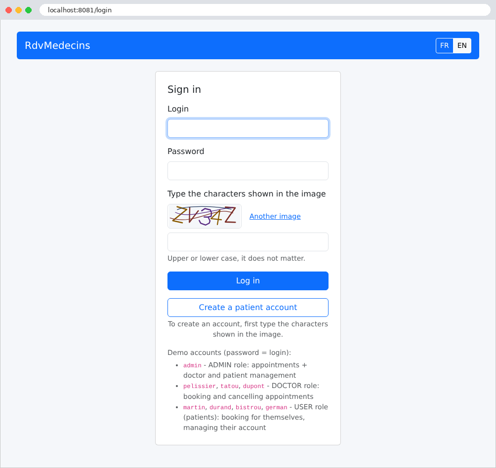
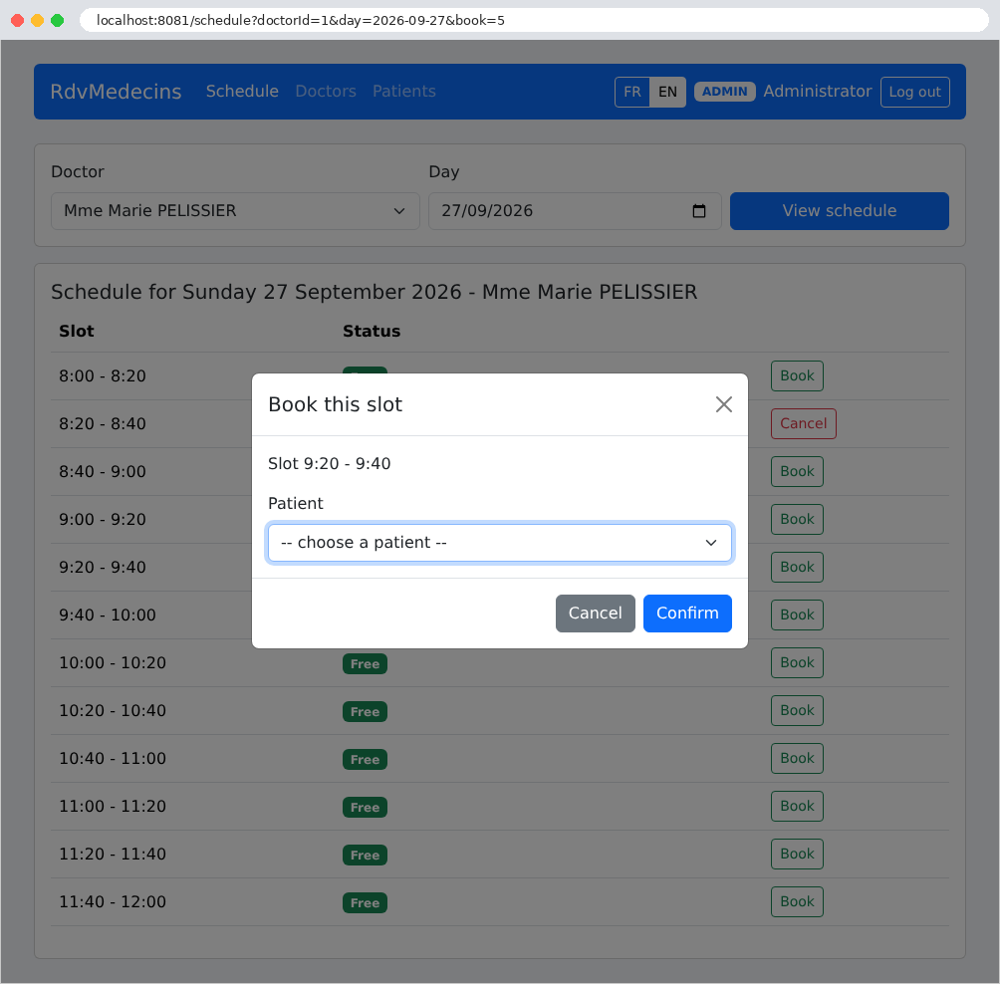
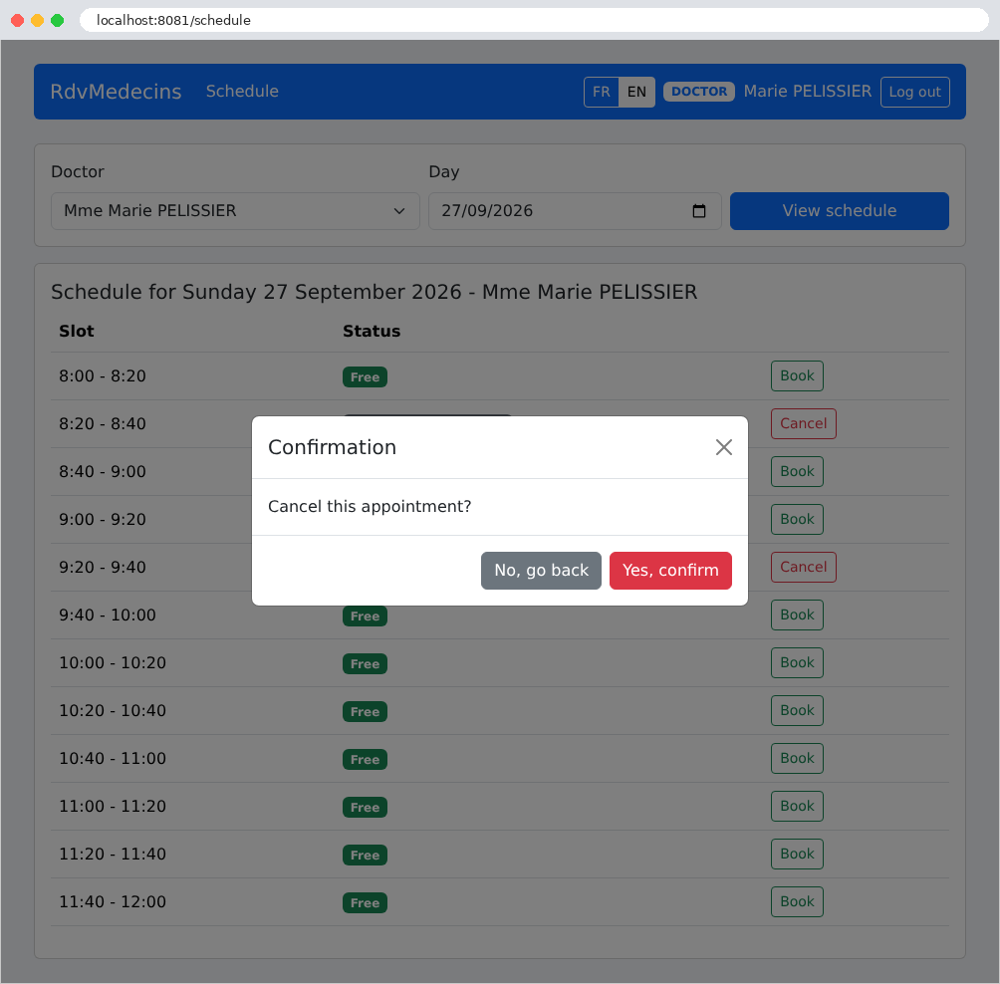
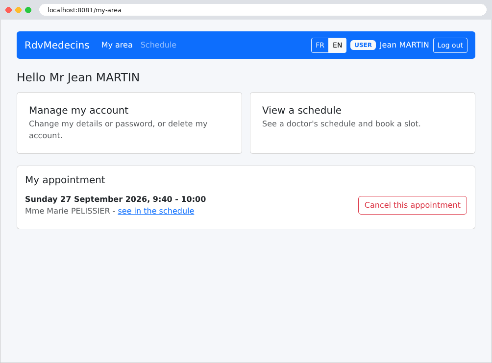
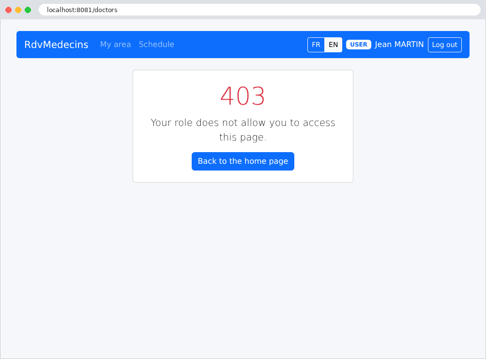
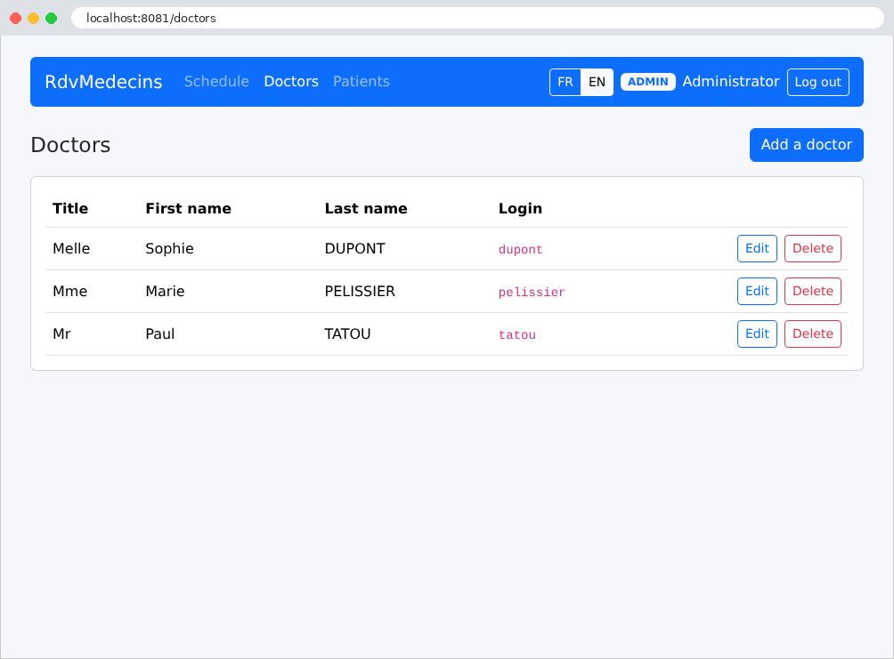
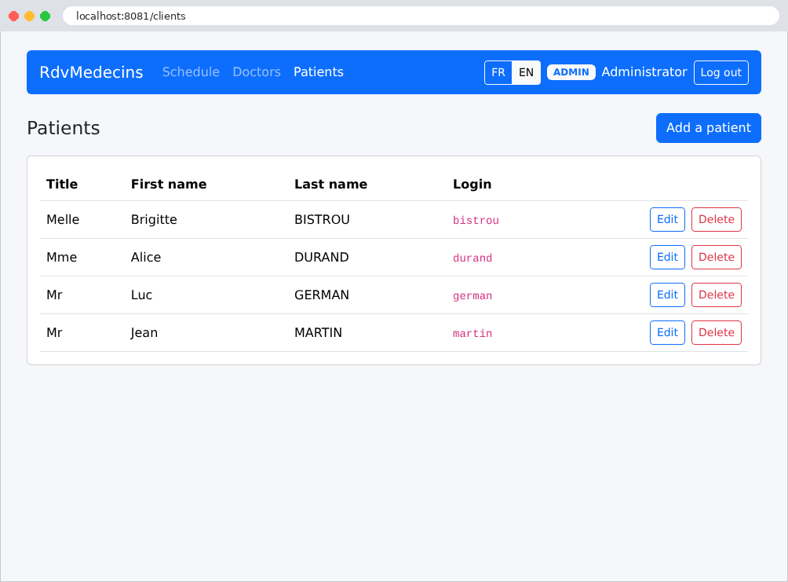
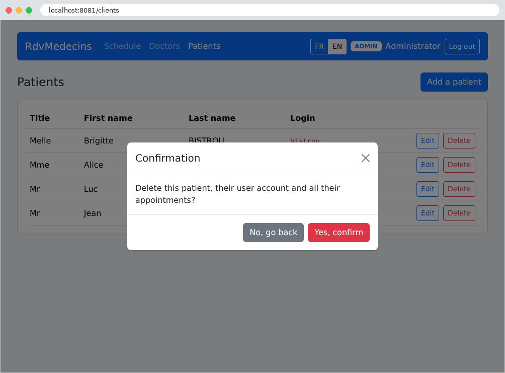
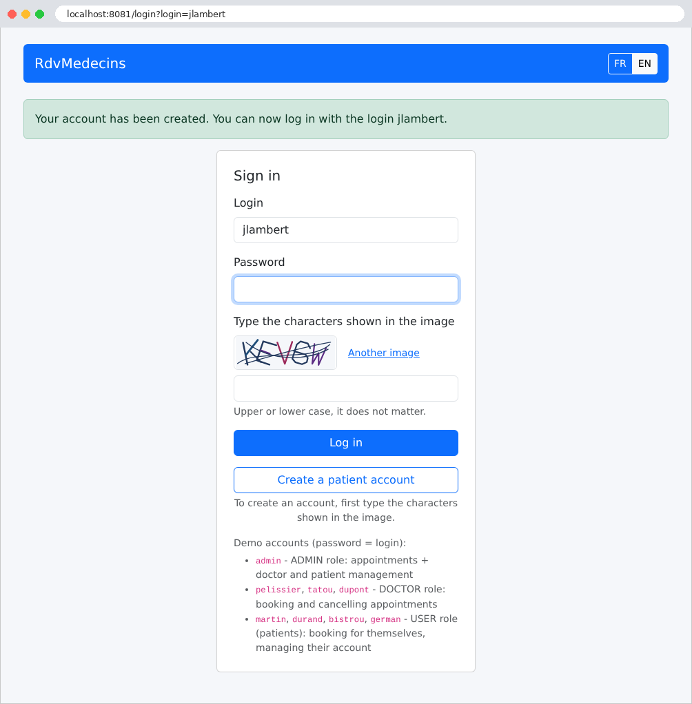
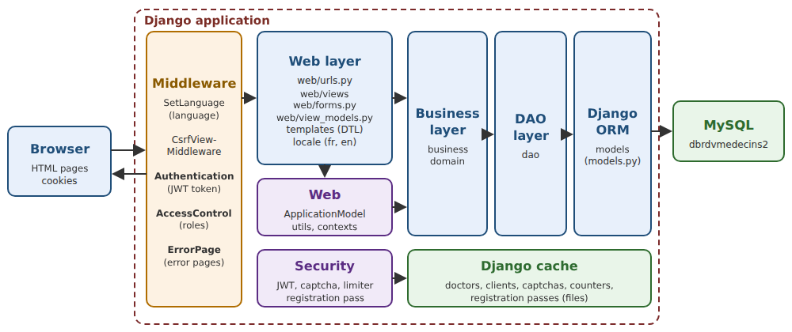

11. Estudo de caso: a aplicação RdvMedecins
11.1. O problema
A aplicação RdvMedecins gerencia as consultas de um consultório médico. Cada médico tem horários (das 8h às 12h, em intervalos de 20 minutos, por exemplo); uma consulta é composta de um dia, um horário e um cliente (um paciente). Esta é a portabilidade exata, para o [Django], da aplicação [Symfony] da lição anterior (que por sua vez foi portada das versões [Laravel], [Flask], [Spring MVC] e [ASP.NET Core MVC]): mesmo banco de dados, mesmas regras de negócio, mesmas páginas, mesmas URLs, mesmo texto. As páginas HTML são geradas pelo servidor com os templates do [Django]; o acesso ao banco de dados passa pelo ORM do [Django].
Três papéis de usuário compartilham a aplicação:
Papel | Quem | Permissões |
ADMIN | O administrador ([admin]) | Ver as agendas, marcar e cancelar consultas para qualquer paciente; gerenciar (listar, adicionar, editar, excluir) médicos e pacientes |
DOCTOR | Médicos | Ver as agendas, marcar consultas e cancelar consultas de qualquer paciente |
USER | Clientes (pacientes) | Ver as agendas sem ver os nomes dos outros pacientes; marcar uma consulta para si mesmo; cancelar sua consulta; gerenciar sua conta; criar uma conta |
Principais regras de gerenciamento:
- nenhuma consulta no passado;
- um horário só pode ser reservado uma vez por dia;
- um paciente tem apenas uma consulta futura por vez;
- dois médicos (ou dois clientes) não podem ter o mesmo nome e sobrenome, e um login pertence a uma única conta;
- um médico com consultas não pode ser excluído; um cliente é excluído junto com suas consultas;
- a página de login é protegida contra bots (CAPTCHA, tentativas limitadas), e a criação de uma conta de paciente exige antes resolver o CAPTCHA dessa página.
11.2. Usando a aplicação
11.2.1. A página de login

A página apresenta dois botões: Entrar e Criar uma conta de paciente. Ambos exigem que você digite os caracteres mostrados na imagem. Os botões FR / EN mudam o idioma:

Um erro (neste caso, um CAPTCHA digitado incorretamente) é exibido no rodapé da página, sobre um fundo rosa claro:

11.2.2. O calendário, visto pelo administrador e pelos médicos
Depois de logado, o administrador é levado à página do calendário. Ele seleciona um médico e um dia:


Cada horário está disponível (botão Reservar) ou ocupado (nome do paciente, botão Cancelar). Clicar em Reservar abre uma janela que solicita as informações do paciente. Essa janela é gerada pelo servidor, assim como o restante da página: a URL agora contém o parâmetro [book=5], que é o número do horário selecionado:

Após a reserva, uma mensagem confirma a consulta:

Clicar em “Cancelar” exibe uma confirmação (aqui pelo Dr. Pélissier, cuja barra de navegação não inclui os menus de administração):

11.2.3. O portal do paciente
Um paciente (papel USER) chega a “Minha área”: sua próxima consulta, que ele pode cancelar, e links para gerenciar sua conta e ver seu calendário. Aqui, ele ainda não tem uma consulta:

No calendário, ele não vê os nomes dos outros pacientes; eles são substituídos por “Reservado”: esse nome nem sequer aparece no código-fonte da página. Ele pode reservar um horário disponível:

A janela de reserva não pede que ele selecione um paciente: ele marca a consulta para si mesmo.


Seu painel agora mostra sua próxima consulta, que ele pode cancelar:

Como ele tem uma consulta futura, não pode marcar outra: o botão “Reservar” não é exibido e, no calendário de outro dia ou de outro médico, uma mensagem explica o motivo:

Gerenciamento da conta: editar suas informações, alterar sua senha ou excluir sua conta (e as consultas). A senha atual é exigida para qualquer alteração:

Um paciente que tenta abrir uma página reservada ao administrador (aqui, [/doctors], digitada manualmente) recebe uma página de erro:

11.2.4. Gerenciamento de médicos e pacientes
O administrador tem dois menus adicionais, Médicos e Pacientes:


O formulário de adição de um médico, enviado com erros:

Um nome igual ao de um médico existente é rejeitado, mesmo escrito em minúsculas e com acento (o próprio banco de dados compara os nomes sem distinguir maiúsculas de minúsculas nem acentos; veja o exemplo 28):

A exclusão de um paciente exige confirmação:

11.2.5. Criação de uma conta de paciente
Na página de login, o botão “Criar uma conta de paciente” só abre o formulário se o CAPTCHA tiver sido digitado corretamente:

Depois que a conta é criada, o usuário é redirecionado para a página de login com seu nome de usuário já preenchido:

11.2.6. Logout
O token de login é válido por duas horas. Passado esse tempo (ou se o token tiver sido adulterado), a página solicitada redireciona para a página de login com a seguinte mensagem:

11.3. Instalação e execução
A aplicação fica na pasta [rdvmedecins2-django], ao lado da pasta [examples]. É um projeto autônomo, com seus próprios arquivos [requirements.txt] e [.env] e seu próprio ambiente virtual. O arquivo [README.md] da pasta contém tudo o que segue. A introdução deste documento já descreveu a instalação; daremos aqui detalhes adicionais.
11.3.1. Software necessário
Dois softwares bastam:
- [Python] 3.12 ou posterior (o [Django] 6.1 exige o [Python] 3.12). Verifique a instalação em um terminal:
- No [Linux] e no [macOS], o comando costuma se chamar [python3]. No [Linux], a compilação do [mysqlclient] também exige alguns pacotes do sistema (veja os apêndices);
- um servidor [MySQL] versão 8.4 ou posterior, como o do [Laragon] executado no [Windows] (veja os apêndices). O [MariaDB] 10.11 ou posterior também serve. Essas são as versões mínimas do [Django] 6.1: com o [MySQL] 8.0, o [Django] se recusa a conectar ([MySQL 8.4 or later is required]).
O editor recomendado é o [Visual Studio Code], junto com as extensões [Python] e [Django] (veja os apêndices); no entanto, tudo pode ser feito pela linha de comando.
11.3.2. Instalar as bibliotecas
As bibliotecas não são fornecidas: crie um ambiente virtual uma única vez na pasta da aplicação e instale as bibliotecas nele, em um terminal aberto na pasta [rdvmedecins2-django] (é preciso estar conectado à Internet):
| python -m venv .venv
.venv\Scripts\activate
pip install -r requirements.txt
|
(no [Linux] e no [macOS], o segundo comando é escrito como [source .venv/bin/activate]). O [pip] lê o arquivo [requirements.txt] (descrito adiante), baixa [Django], [mysqlclient], [PyJWT], [bcrypt] e as bibliotecas das quais eles dependem, e as instala na pasta [.venv]. O ambiente deve ser ativado em cada novo terminal (o [Visual Studio Code] faz isso automaticamente depois que o interpretador do ambiente é selecionado; veja a introdução).
11.3.3. Criar o banco de dados
O banco de dados [dbrdvmedecins2] é criado pelo script [database/dbrdvmedecins2.sql]. Com o [Laragon], abra a ferramenta [HeidiSQL] (botão Database) e execute o script pelo menu File / Run SQL (veja a introdução). Na linha de comando, na pasta da aplicação:
| mysql -u root -p < database/dbrdvmedecins2.sql
|
A opção [-p] solicita a senha de [root]; omita-a se a conta não tiver senha (como é o caso no [Laragon]). Este é o mesmo banco de dados das outras versões da aplicação: se ele já existir, esta etapa é opcional. O script pode ser executado a qualquer momento para voltar aos dados originais.
11.3.4. Configurar o acesso ao banco de dados
Toda a configuração da instalação está no arquivo [.env] (descrito adiante). Por padrão, a aplicação se conecta ao [MySQL] em [127.0.0.1], porta 3306, com o usuário [root] sem senha: são as configurações padrão do [Laragon]. Se a sua conta [root] tiver senha, informe-a neste arquivo, na linha [DB_PASSWORD=]. Uma variável de ambiente do sistema tem precedência sobre o arquivo (exemplo 25): isso permite informar a senha sem gravá-la em um arquivo do projeto.
11.3.5. Executar a aplicação
Em uma janela de terminal aberta na pasta [rdvmedecins2-django], com o ambiente virtual ativado:
| python manage.py runserver 8081
|
| Watching for file changes with StatReloader
Performing system checks...
System check identified no issues (0 silenced).
September 27, 2026 - 19:30:12
Django version 6.1.1, using settings 'config.settings'
Starting WSGI development server at http://127.0.0.1:8081/
Quit the server with CONTROL-C.
|
Em seguida, abra a URL [http://localhost:8081] em um navegador e pare a aplicação com [Ctrl-C]. A porta 8081 permite executar ao mesmo tempo um exemplo do curso (porta 8000); as outras versões da aplicação também usam a porta 8081: não as execute simultaneamente.
11.3.6. Contas de demonstração
A senha de cada conta é o próprio nome de usuário; é preciso também digitar os caracteres exibidos na imagem, em maiúsculas ou minúsculas:
Nome de usuário | Papel |
[admin] | ADMIN (o administrador) |
[pelissier], [tatou], [dupont] | DOCTOR (os médicos) |
[martin], [durand], [bistrou], [german] | USER (pacientes) |
Um roteiro para explorar a aplicação:
- [admin]: Agenda, Sra. Marie PELISSIER, hoje: um horário já está reservado pela Sra. Brigitte BISTROU. Reserve um horário para o Sr. Jean MARTIN e depois tente reservar uma segunda consulta para ele (recusada). Menus Doctors e Patients: adicionar, editar, excluir (a Dra. PELISSIER, que tem consultas, não pode ser excluída);
- [pelissier]: a agenda do dia é exibida diretamente; o endereço [/doctors], digitado manualmente, retorna uma página de erro 403;
- [martin]: Minha área, sua consulta, o calendário em que os outros pacientes aparecem como “Reservado” (veja o código-fonte da página: os nomes deles não aparecem ali); Gerenciar minha conta;
- Página de login: Criar uma conta de paciente e depois fazer login com a nova conta;
- botões FR / EN: toda a interface muda de idioma, inclusive as datas.
11.3.7. Modo de desenvolvimento
O arquivo [.env] fornecido configura a aplicação para desenvolvimento ([DJANGO_DEBUG=1]):
- o console do servidor exibe cada requisição e cada comando SQL enviado ao banco de dados (exemplo 28). Por exemplo, para exibir um calendário (após os dois comandos de abertura da conexão, exemplo 28; linhas abreviadas):
| (0.000) SELECT `doctors`.`id`, ..., `users`.`role` FROM `doctors` INNER JOIN `users` ON (`doctors`.`user` = `users`.`id`) WHERE `doctors`.`id` = 1 ORDER BY `doctors`.`id` ASC LIMIT 1; args=(1,); alias=default
(0.003) SELECT `appointments`.`id`, ..., `clients`.`user` FROM `appointments` INNER JOIN `slots` ON (`appointments`.`slot_id` = `slots`.`id`) INNER JOIN `clients` ON (`appointments`.`client_id` = `clients`.`id`) WHERE (`appointments`.`day` = '2026-09-28' AND `slots`.`doctor_id` = 1); args=('2026-09-28', 1); alias=default
(0.000) SELECT `slots`.`id`, ..., `slots`.`end_minute` FROM `slots` WHERE `slots`.`doctor_id` = 1 ORDER BY `slots`.`start_hour` ASC, `slots`.`start_minute` ASC; args=(1,); alias=default
[27/Sep/2026 19:50:21] "GET /schedule?doctorId=1&day=2026-09-28 HTTP/1.1" 200 9186
|
Podem-se identificar aqui três requisições: o médico e sua conta (uma junção), as consultas de hoje e seus pacientes, e os horários disponíveis do médico. A lista de médicos do menu suspenso, porém, não é buscada; ela vem do cache (veja adiante). O usuário logado também não é buscado; ele é identificado pelo seu token (exemplo 25);
- uma exceção inesperada exibe a página de depuração do [Django] (exemplo 03), com a mensagem da exceção e a pilha de chamadas. Em produção, a aplicação exibe a própria página de erro 500;
- não há nada a reiniciar após uma alteração: o servidor de desenvolvimento reinicia sozinho quando um arquivo [Python] é alterado (exemplo 01), e um template modificado é relido na requisição seguinte.
O depurador da extensão [Python] do [Visual Studio Code] também permite executar a aplicação passo a passo: basta uma configuração de execução do tipo “Django” (arquivo [.vscode/launch.json], que a extensão se oferece para criar), com os parâmetros [runserver 8081 --noreload]. A extensão [django-debug-toolbar] (a instalar com o [pip]) exibe, ao lado de cada página, os detalhes da requisição: os comandos SQL e suas durações, os templates usados, as configurações, os sinais...
11.3.8. Um servidor de produção
O servidor de desenvolvimento do [Django] não se destina à produção. Em produção, a aplicação é servida por um servidor WSGI (exemplo 01): [gunicorn] no [Linux] ([gunicorn config.wsgi:application --workers 4]), [waitress] no [Windows] ([waitress-serve --port=8081 config.wsgi:application]), normalmente atrás de um servidor web ([nginx], [Apache]) que recebe as conexões HTTPS, serve os arquivos estáticos por conta própria e delega o restante ao servidor WSGI. No arquivo [.env], é preciso indicar o modo de produção, trocar as chaves secretas, declarar o nome do site e especificar que o site é servido por HTTPS:
| DJANGO_DEBUG=0
DJANGO_SECRET_KEY=a-long-random-string
DJANGO_ALLOWED_HOSTS=rdvmedecins.example.com
JWT_SECRET=another-long-random-string
COOKIE_SECURE=1
|
Uma string aleatória adequada pode ser obtida com o próprio [Python] : [python -c "import secrets; print(secrets.token_hex(32))"]. A aplicação é então preparada com dois comandos:
| python manage.py collectstatic
python manage.py check --deploy
|
O primeiro comando copia todos os arquivos estáticos (os da aplicação e os do [Django]) para a pasta [var/static] (configuração [STATIC_ROOT]), que o servidor web servirá (exemplo 15). O segundo verifica as configurações de segurança de uma implantação e aponta as que estiverem faltando (os cabeçalhos HSTS, o redirecionamento para HTTPS etc.). Para testar o modo de produção com o servidor de desenvolvimento, que deixa de servir arquivos estáticos: [python manage.py runserver 8081 --insecure].
11.3.9. Problemas comuns
Com o [MySQL], o comando [runserver] se conecta ao banco de dados assim que inicia: suas verificações do projeto (system checks, exemplo 01) precisam conhecer a versão do servidor. Um banco de dados inacessível impede, portanto, a sua inicialização: o console exibe uma longa pilha de chamadas, que termina com o erro. Por exemplo, com um banco de dados que não existe:
| django.db.utils.OperationalError: (1049, "Unknown database 'dbrdvmedecins2'")
|
Um servidor de produção ([gunicorn]...) não executa essas verificações: o erro aparece então no log, na primeira página que consulta o banco de dados (a página de login não consulta o banco de dados; o processo de login em si, sim). As mensagens mais comuns:
Mensagem | Causa |
[ModuleNotFoundError: No module named 'django'] | O ambiente virtual não está ativado, ou [pip install -r requirements.txt] não foi executado |
[Django 6.1 requires Python 3.12 or later] (durante a instalação) | A versão do [Python] é anterior à 3.12 |
[OperationalError: (2002, "Can't connect to server on '127.0.0.1' ...")] | O [MySQL] não foi iniciado ou não está escutando em [127.0.0.1:3306] |
[OperationalError: (1045, "Access denied for user 'root'@'localhost' ...")] | A senha do [MySQL] deve ser informada em [DB_PASSWORD] (veja “Configurar o acesso ao banco de dados”) |
[OperationalError: (1049, "Unknown database 'dbrdvmedecins2'")] | O script [database/dbrdvmedecins2.sql] não foi executado |
[NotSupportedError: MySQL 8.4 or later is required] | O servidor [MySQL] é antigo demais: atualize para o [MySQL] 8.4 ou para o [MariaDB] 10.11 |
[ImproperlyConfigured: JWT_SECRET must be at least 32 characters long (see .env).] | A chave secreta dos tokens é curta demais em [.env] |
[Error: That port is already in use.] | A porta 8081 já está em uso (outra versão da aplicação está em execução?): pare-a ou escolha outra porta |
11.4. Arquitetura da aplicação

- O navegador envia suas requisições ao servidor ([runserver], ou [nginx] + [gunicorn]), que as repassa ao [Django] por meio da aplicação WSGI do arquivo [config/wsgi.py]. A requisição passa pelas camadas de middleware (veja o capítulo sobre o ciclo de vida): o idioma da requisição ([SetLanguage]), a proteção anti-CSRF, as mensagens flash e, em seguida, a autenticação: o usuário é identificado pelo token JWT em seu cookie ([Authentication]); depois do roteamento, [AccessControl] nega o acesso às páginas protegidas aos visitantes não autorizados. Os erros são tratados por páginas HTML ([ErrorPage], e as views de erro);
- [web]: a camada web. As views ([web/views]), uma família de páginas por módulo, e suas rotas ([web/urls.py]); os formulários e suas restrições ([web/forms.py]); os modelos dos templates ([web/view_models.py]). Todos passam por um único objeto, [ApplicationModel] ([web/application.py]), que mantém em cache as listas de médicos e clientes e repassa as demais requisições à camada de negócio;
- [security]: tokens JWT, middlewares de autenticação e de controle de acesso, CAPTCHA, limites de tentativas e passes de criação de conta;
- [business]: regras de negócio e transações; [domain]: objetos de calendário, calculados pela camada de negócio;
- [dao]: a camada DAO, um módulo por tabela (ou família de tabelas);
- [models]: os modelos do ORM (exemplo 28), a partir dos quais a camada DAO lê e grava no banco de dados;
- [templates]: os templates, que geram as páginas HTML; [locale]: o dicionário em francês; [static]: a folha de estilo, o script da página e o [Bootstrap];
- A pasta [config] e o arquivo [.env]: a configuração que reúne tudo.
A pasta da aplicação (excluindo [.venv] e [var]):
| rdvmedecins2-django/
├── business/
│ ├── README.md
│ ├── __init__.py
│ ├── business.py
│ ├── dates.py
│ ├── descriptor.py
│ ├── errors.py
│ ├── person_data.py
│ ├── provider.py
│ └── service.py
├── config/
│ ├── __init__.py
│ ├── settings.py
│ ├── urls.py
│ └── wsgi.py
├── dao/
│ ├── README.md
│ ├── __init__.py
│ ├── appointments.py
│ ├── persons.py
│ ├── slots.py
│ └── users.py
├── database/
│ ├── README.md
│ └── dbrdvmedecins2.sql
├── domain/
│ ├── README.md
│ ├── __init__.py
│ └── schedule.py
├── locale/
│ └── fr/
│ └── LC_MESSAGES/
│ ├── django.mo
│ └── django.po
├── models/
│ ├── README.md
│ ├── __init__.py
│ ├── apps.py
│ └── models.py
├── security/
│ ├── README.md
│ ├── __init__.py
│ ├── access.py
│ ├── auth.py
│ ├── captcha_drawing.py
│ ├── captchas.py
│ ├── connected_user.py
│ ├── errors.py
│ ├── limiter.py
│ ├── middleware.py
│ ├── passwords.py
│ └── registration_pass.py
├── static/
│ ├── css/
│ │ └── styles.css
│ ├── js/
│ │ └── app.js
│ └── lib/
│ └── bootstrap/
├── templates/
│ ├── forms/
│ │ └── field.html
│ ├── fragments/
│ │ ├── booking.html
│ │ ├── captcha.html
│ │ ├── confirmation.html
│ │ ├── errors.html
│ │ ├── navbar.html
│ │ └── success.html
│ ├── persons/
│ │ ├── form.html
│ │ └── list.html
│ ├── README.md
│ ├── account.html
│ ├── area.html
│ ├── error.html
│ ├── layout.html
│ ├── login.html
│ ├── macros.html
│ ├── registration.html
│ └── schedule.html
├── web/
│ ├── templatetags/
│ │ ├── __init__.py
│ │ └── rdv.py
│ ├── views/
│ │ ├── README.md
│ │ ├── __init__.py
│ │ ├── area.py
│ │ ├── auth.py
│ │ ├── errors.py
│ │ ├── language.py
│ │ ├── persons.py
│ │ ├── registration.py
│ │ └── schedule.py
│ ├── README.md
│ ├── __init__.py
│ ├── application.py
│ ├── apps.py
│ ├── contexts.py
│ ├── forms.py
│ ├── middleware.py
│ ├── rendering.py
│ ├── urls.py
│ ├── utils.py
│ └── view_models.py
├── .env
├── .gitignore
├── README.md
├── manage.py
└── requirements.txt
|
Esta é a estrutura de um projeto [Django] típico (exemplo 01): um pacote de configuração ([config]), um arquivo [manage.py] e pacotes de código. Apenas dois deles são aplicações [Django], declaradas em [INSTALLED_APPS]: [models], porque contém os modelos do ORM (que o [Django] procura somente nas aplicações), e [web], porque contém uma biblioteca de tags ([templatetags], exemplo 16). Os demais ([dao], [business], [security], [domain]) são simplesmente pacotes [Python] que os outros importam: não têm nada a declarar ao [Django]. O [Django] não impõe nenhuma dessas pastas, e um projeto típico teria, em vez disso, uma aplicação por domínio (calendários, contas etc.), cada uma com seus próprios modelos, views e templates; preferimos, como nas outras versões do estudo de caso, uma organização por camadas, como mostra o exemplo 28. O [Bootstrap] desta vez faz parte da aplicação (pasta [static/lib/bootstrap]): o estudo de caso é autocontido.
11.5. O banco de dados
O banco de dados [dbrdvmedecins2] tem cinco tabelas:
- [users]: usuários autorizados a fazer login;
- [doctors] e [clients]: médicos e pacientes, cada um vinculado à sua conta de usuário;
- [slots]: os horários disponíveis de cada médico;
- [appointments]: as consultas, um cliente por horário em um determinado dia.
11.5.1. database/dbrdvmedecins2.sql
| -- =========================================================================
-- Banco de dados [dbrdvmedecins2] - MySQL 8
--
-- Evolução de [dbrdvmedecins]:
-- 1. as tabelas [doctors] e [clients] ganham uma coluna [user],
-- chave estrangeira para users(id): cada médico e cada cliente agora
-- também é um usuário capaz de fazer login;
-- 2. um terceiro papel aparece: DOCTOR (além de ADMIN e USER);
-- 3. o script cria uma linha em [users] para cada médico (papel DOCTOR)
-- e para cada cliente (papel USER):
-- - login = sobrenome em minúsculas
-- - senha = sobrenome em minúsculas, com hash bcrypt (10 rounds)
-- - nome exibido = nome + sobrenome
--
-- 4. restrições de unicidade, todas NOMEADAS (a aplicação reconhece
-- o nome da restrição violada na mensagem de erro do MySQL):
-- - unq_users_login : um login pertence a uma única conta;
-- - unq_doctors_first_name_last_name : dois médicos não podem ter o
-- mesmo nome e sobrenome;
-- - unq_clients_first_name_last_name : o mesmo para os clientes.
-- Atenção: a collation utf8mb4_unicode_ci compara sem distinguir
-- maiúsculas de minúsculas nem acentos - "Hélène DUPONT" e "helene dupont"
-- são, portanto, consideradas idênticas.
--
-- A tabela [users] agora deve ser criada ANTES de [doctors] e [clients]
-- (elas a referenciam) e excluída DEPOIS delas.
-- =========================================================================
-- o script é escrito em UTF-8
SET NAMES utf8mb4;
-- recomeçamos de um banco de dados vazio a cada execução do script (prático em desenvolvimento)
CREATE DATABASE IF NOT EXISTS dbrdvmedecins2 CHARACTER SET utf8mb4 COLLATE utf8mb4_unicode_ci;
USE dbrdvmedecins2;
-- ordem de exclusão: das tabelas "filhas" para as tabelas "pais"
DROP TABLE IF EXISTS appointments;
DROP TABLE IF EXISTS slots;
DROP TABLE IF EXISTS clients;
DROP TABLE IF EXISTS doctors;
DROP TABLE IF EXISTS users;
-- -------------------------------------------------------------------------
-- tabela [users]: os usuários autorizados a fazer login na aplicação
-- -------------------------------------------------------------------------
CREATE TABLE users (
id INT AUTO_INCREMENT PRIMARY KEY,
version INT NOT NULL DEFAULT 0,
login VARCHAR(30) NOT NULL, -- login identifier
password VARCHAR(100) NOT NULL, -- HASHED password (bcrypt) - never in clear
name VARCHAR(40) NOT NULL, -- name displayed once logged in
role VARCHAR(10) NOT NULL, -- 'ADMIN', 'DOCTOR' or 'USER'
-- um login pode pertencer a uma única conta
CONSTRAINT unq_users_login UNIQUE (login)
);
-- -------------------------------------------------------------------------
-- tabela [doctors]: os médicos do consultório
-- -------------------------------------------------------------------------
CREATE TABLE doctors (
id INT AUTO_INCREMENT PRIMARY KEY, -- primary key (technical identifier)
version INT NOT NULL DEFAULT 0, -- row version number (optimistic lock)
title VARCHAR(5) NOT NULL, -- Melle, Mme, Mr
last_name VARCHAR(20) NOT NULL,
first_name VARCHAR(20) NOT NULL,
`user` INT NOT NULL, -- foreign key -> users(id)
CONSTRAINT fk_doctors_user FOREIGN KEY (`user`) REFERENCES users(id),
-- uma conta por médico e um médico por conta
CONSTRAINT unq_doctors_user UNIQUE (`user`),
-- dois médicos não podem ter o mesmo nome e sobrenome
CONSTRAINT unq_doctors_first_name_last_name UNIQUE (first_name, last_name)
);
-- -------------------------------------------------------------------------
-- tabela [clients]: os pacientes dos médicos
-- -------------------------------------------------------------------------
CREATE TABLE clients (
id INT AUTO_INCREMENT PRIMARY KEY,
version INT NOT NULL DEFAULT 0,
title VARCHAR(5) NOT NULL,
last_name VARCHAR(20) NOT NULL,
first_name VARCHAR(20) NOT NULL,
`user` INT NOT NULL, -- foreign key -> users(id)
CONSTRAINT fk_clients_user FOREIGN KEY (`user`) REFERENCES users(id),
-- uma conta por cliente e um cliente por conta
CONSTRAINT unq_clients_user UNIQUE (`user`),
-- dois clientes não podem ter o mesmo nome e sobrenome
CONSTRAINT unq_clients_first_name_last_name UNIQUE (first_name, last_name)
);
-- -------------------------------------------------------------------------
-- tabela [slots]: os horários de cada médico
-- -------------------------------------------------------------------------
CREATE TABLE slots (
id INT AUTO_INCREMENT PRIMARY KEY,
version INT NOT NULL DEFAULT 0,
doctor_id INT NOT NULL, -- foreign key -> doctors(id)
start_hour INT NOT NULL, -- start hour of the slot
start_minute INT NOT NULL, -- start minute of the slot
end_hour INT NOT NULL, -- end hour of the slot
end_minute INT NOT NULL, -- end minute of the slot
CONSTRAINT fk_slots_doctor FOREIGN KEY (doctor_id) REFERENCES doctors(id)
);
-- -------------------------------------------------------------------------
-- tabela [appointments]: as consultas agendadas pelos clientes
-- -------------------------------------------------------------------------
CREATE TABLE appointments (
id INT AUTO_INCREMENT PRIMARY KEY,
version INT NOT NULL DEFAULT 0,
day DATE NOT NULL, -- day of the appointment
slot_id INT NOT NULL, -- foreign key -> slots(id)
client_id INT NOT NULL, -- foreign key -> clients(id)
CONSTRAINT fk_appointments_slot FOREIGN KEY (slot_id) REFERENCES slots(id),
CONSTRAINT fk_appointments_client FOREIGN KEY (client_id) REFERENCES clients(id),
-- o mesmo horário, no mesmo dia, só pode ser agendado uma vez
CONSTRAINT unq1_appointments UNIQUE (day, slot_id)
);
-- =========================================================================
-- Dados de demonstração
-- =========================================================================
-- os usuários: senhas com hash bcrypt (10 rounds de salt)
-- admin/admin (ADMIN)
-- uma conta DOCTOR por médico, uma conta USER por cliente
-- (a conta de demonstração user/user não existe mais: uma conta USER é
-- agora SEMPRE a conta de um cliente, que pode agendar e gerenciar a conta)
-- (login = senha = sobrenome em minúsculas)
INSERT INTO users (login, password, name, role) VALUES
('admin', '$2b$10$YSNBJXXHX9mp13nPZb6YGu8M1jR6uvPwO1s2X73z0QAqBR7TOQjoq', 'Administrator', 'ADMIN'),
-- doctors
('pelissier', '$2b$10$DnSDOK5ONrdMxTTr1NKCHOphR3WSp5QAyG9S9ueruw9HwlxI.16ba', 'Marie PELISSIER', 'DOCTOR'),
('tatou', '$2b$10$PeovBO.gmJUKP4PglI/fwu4xtWOYSxoM5VTWjTj7uQ4wcd9P9.htS', 'Paul TATOU', 'DOCTOR'),
('dupont', '$2b$10$az7wvPKC1h0EiAxXwu/PU.vYjzmB04rd5B7QnK0mvxp4niYIHVoc.', 'Sophie DUPONT', 'DOCTOR'),
-- clients
('martin', '$2b$10$GT6S5pp.WdGapFw/UmocXesbC6LEjJfZzgatCUyG9Sf4o1iBNlqZW', 'Jean MARTIN', 'USER'),
('durand', '$2b$10$l2gl/zCder8E7Nh4VxGRX.0.SsO3FDiXt6YwqYq3v9nFzgC/jQCy6', 'Alice DURAND', 'USER'),
('bistrou', '$2b$10$naeRp2YUU6c.QDl5itJMAum3Y5aHdUV6jwIcsbp0D.64jPG4F6E9m', 'Brigitte BISTROU', 'USER'),
('german', '$2b$10$tTWxh3ROWF7NjhZOMnWDMOsZcnSWUiwwfy5C3G0.xhccTXALKyLeW', 'Luc GERMAN', 'USER');
-- os médicos: a coluna [user] é buscada a partir do login,
-- em vez de presumir os valores das chaves primárias de [users]
INSERT INTO doctors (title, last_name, first_name, `user`) VALUES
('Mme', 'PELISSIER', 'Marie', (SELECT id FROM users WHERE login = 'pelissier')),
('Mr', 'TATOU', 'Paul', (SELECT id FROM users WHERE login = 'tatou')),
('Melle','DUPONT', 'Sophie', (SELECT id FROM users WHERE login = 'dupont'));
INSERT INTO clients (title, last_name, first_name, `user`) VALUES
('Mr', 'MARTIN', 'Jean', (SELECT id FROM users WHERE login = 'martin')),
('Mme', 'DURAND', 'Alice', (SELECT id FROM users WHERE login = 'durand')),
('Melle','BISTROU', 'Brigitte', (SELECT id FROM users WHERE login = 'bistrou')),
('Mr', 'GERMAN', 'Luc', (SELECT id FROM users WHERE login = 'german'));
-- horários do médico PELISSIER (doctor_id = 1): das 8h às 12h em intervalos de 20 minutos
INSERT INTO slots (doctor_id, start_hour, start_minute, end_hour, end_minute) VALUES
(1, 8, 0, 8, 20), (1, 8, 20, 8, 40), (1, 8, 40, 9, 0),
(1, 9, 0, 9, 20), (1, 9, 20, 9, 40), (1, 9, 40, 10, 0),
(1, 10, 0, 10, 20), (1, 10, 20, 10, 40), (1, 10, 40, 11, 0),
(1, 11, 0, 11, 20), (1, 11, 20, 11, 40), (1, 11, 40, 12, 0);
-- horários do médico TATOU (doctor_id = 2): das 14h às 18h em intervalos de 20 minutos
INSERT INTO slots (doctor_id, start_hour, start_minute, end_hour, end_minute) VALUES
(2, 14, 0, 14, 20), (2, 14, 20, 14, 40), (2, 14, 40, 15, 0),
(2, 15, 0, 15, 20), (2, 15, 20, 15, 40), (2, 15, 40, 16, 0),
(2, 16, 0, 16, 20), (2, 16, 20, 16, 40), (2, 16, 40, 17, 0),
(2, 17, 0, 17, 20), (2, 17, 20, 17, 40), (2, 17, 40, 18, 0);
-- uma consulta já agendada, para ver logo um horário ocupado na agenda
INSERT INTO appointments (day, slot_id, client_id) VALUES
(CURDATE(), 2, 3);
|
- linha 33: o banco de dados é criado se não existir, com o conjunto de caracteres [utf8mb4] e o agrupamento [utf8mb4_unicode_ci], que compara strings sem distinguir maiúsculas nem acentos (exemplo 28);
- linhas 37–41: as tabelas são excluídas e depois recriadas; o script devolve o banco de dados ao estado inicial. A ordem importa: uma tabela não pode ser excluída enquanto outra a referenciar por uma chave estrangeira;
- linhas 46–55: users: um login, uma senha com hash do [bcrypt] (exemplo 25), o nome de exibição após o login e o papel ([ADMIN], [DOCTOR], ou [USER]). A restrição [unq_users_login] garante que um nome de usuário pertença a uma única conta;
- Linhas 60–72: cada tabela tem uma chave primária [id], gerada pelo banco de dados, e uma coluna [version], que é o bloqueio otimista (exemplo 28). A coluna [user] é uma chave estrangeira para [users(id)]: o banco de dados rejeita qualquer valor que não seja o ID de um usuário existente. Como [user] é uma palavra da linguagem SQL, ela é cercada por acentos graves. Três restrições: [fk_doctors_user] (a chave estrangeira), [unq_doctors_user] (uma conta por médico e um médico por conta) e [unq_doctors_first_name_last_name] (sem homônimos). Todas as restrições têm nome: a aplicação reconhece uma restrição violada pelo nome;
- linhas 77–89: a tabela [clients] tem exatamente as mesmas colunas;
- linhas 94–103: um horário pertence a um médico; os horários de início e de fim são armazenados em horas e minutos;
- linhas 108–118: uma consulta é composta por um dia (tipo [DATE], sem horário), um horário e um cliente. A restrição [unq1_appointments] impede que o mesmo horário seja reservado duas vezes no mesmo dia: o banco de dados garante essa regra, mesmo que dois usuários tentem reservá-lo ao mesmo tempo;
- Linhas 130–140: usuários de demonstração, cuja senha é o próprio login. Os hashes começam com [$2b$10$]: o algoritmo ([bcrypt], variante [2b]) e o custo (10: 2^10 rodadas de cálculo). Em seguida vêm o salt (22 caracteres) e o hash. Esses hashes foram calculados pela versão [Flask] da aplicação, com a biblioteca [bcrypt] do [Python], que esta versão também utiliza;
- linhas 144–147: a coluna [user] de cada médico é obtida por uma subconsulta baseada no login, em vez de se presumirem os valores das chaves primárias;
- linhas 170–171: uma consulta já marcada para hoje ([CURDATE()]) no segundo horário da Dra. PELISSIER para a Sra. BISTROU: o calendário mostra assim, de imediato, que o horário está reservado.
Diferentemente do caso do [Django], o banco de dados não é criado pelas migrações do [Django] (exemplo 28): ele é compartilhado com as outras versões da aplicação, e o script SQL é comum a todas elas. Os modelos são, portanto, declarados como [managed = False], e o comando [python manage.py makemigrations] não tem nada a fazer. O comando [python manage.py inspectdb] serve para comparar o banco de dados com os modelos.
11.6. Configuração do projeto
11.6.1. requirements.txt
| # as bibliotecas da aplicação: pip install -r requirements.txt
Django==6.1.1
mysqlclient==2.3.0
PyJWT==2.15.0
bcrypt==5.0.0
|
As quatro bibliotecas necessárias à aplicação, com suas versões exatas (veja a introdução): [Django], o driver do [MySQL] ([mysqlclient], exemplo 28), os tokens JWT ([PyJWT], exemplo 25) e o [bcrypt], para as senhas do banco de dados (veja adiante). O [pip] também instala as bibliotecas das quais elas dependem ([asgiref] e [sqlparse], para o [Django]). O comando [pip freeze] exibe a lista exata do que está instalado no ambiente, incluindo as dependências: é a maneira de obter um arquivo que fixa todas as versões. Um projeto maior usaria uma ferramenta de gerenciamento de projetos, como o [uv] ou o [Poetry], que separa as bibliotecas solicitadas (arquivo [pyproject.toml]) das versões exatas instaladas (um arquivo de lock, como o [composer.lock] do [PHP]).
11.6.2. .env
| # =========================================================================
# .env: as configurações específicas DESTA instalação, lidas na inicialização por
# config/settings.py. Cada linha NOME=valor vira uma variável de ambiente
# do processo; uma variável de ambiente real do sistema
# tem precedência sobre este arquivo.
# =========================================================================
# 1: desenvolvimento (páginas de erro detalhadas); 0: produção (veja README.md)
DJANGO_DEBUG=1
# a chave secreta do Django (assinaturas, tokens anti-CSRF...). Em produção: outro
# valor, longo e aleatório
DJANGO_SECRET_KEY=Hayf1oPBd4cm9qXHUGusMtUqCFqEyyj1nnwGxKvuJKYI0EDjjn
# os nomes de host que a aplicação aceita atender (separados por vírgula)
DJANGO_ALLOWED_HOSTS=localhost,127.0.0.1
# ---- o banco de dados MySQL [dbrdvmedecins2] (script: database/dbrdvmedecins2.sql): o
# servidor, sua porta, o banco, o usuário e sua senha (os do Laragon:
# root, sem senha)
DB_HOST=127.0.0.1
DB_PORT=3306
DB_NAME=dbrdvmedecins2
DB_USER=root
DB_PASSWORD=
# ---- autenticação (veja security/auth.py)
# chave secreta dos tokens JWT: pelo menos 32 caracteres (HMAC-SHA256)
JWT_SECRET=229b83fd9cc502aaebd911d2662753a8393b340edb296724
# duração de validade de um token, em minutos (120 min = 2 h)
JWT_DURATION_MINUTES=120
# 1 em produção (site servido por HTTPS): os cookies nunca trafegam sem criptografia
COOKIE_SECURE=0
# ---- proteção contra robôs (veja security/limiter.py)
# falhas de login permitidas para o mesmo login a partir do mesmo endereço IP, depois
# bloqueio por esta duração (em minutos); um endereço IP também é bloqueado se
# acumular LOGIN_MAX_FAILURES_IP falhas, todos os logins somados (um robô que tenta
# milhares de logins diferentes)
LOGIN_MAX_FAILURES=5
LOGIN_MAX_FAILURES_IP=25
LOGIN_BLOCK_MINUTES=15
# contas de clientes criadas no máximo por hora e por endereço IP. Em uma sala de aula, todos
# os computadores costumam sair pelo mesmo endereço: aumente se necessário
REGISTRATION_MAX_PER_HOUR=10
|
O arquivo que contém as configurações específicas desta instalação (exemplo 25): elas variam de uma máquina para outra (o banco de dados, suas credenciais) ou são segredos (as chaves). Em um projeto real, esse arquivo nunca é distribuído com o código: cada instalação tem o seu, e os segredos de produção costumam ser fornecidos por variáveis de ambiente de verdade. O [Django] não lê um arquivo [.env] por conta própria: quem o lê é o arquivo [config/settings.py] (como descrito adiante). A biblioteca [python-dotenv] faria o mesmo, e [django-environ] acrescentaria a conversão de valores.
- Linha 9: modo de depuração (exemplo 01): 1 durante o desenvolvimento (páginas de erro detalhadas, comandos SQL no console), 0 em produção;
- linha 12: a chave secreta do [Django], usada para os tokens anti-CSRF (exemplo 18) e todas as assinaturas (cookies assinados, mensagens flash, exemplos 20 e 23);
- linha 14: nomes de host aceitos (exemplo 01);
- linhas 19–23: a conexão com o banco de dados (exemplo 28);
- linhas 25–43: configurações específicas da aplicação: os tokens JWT (exemplo 25), a definição dos cookies no modo [Secure] (descrita adiante) e a proteção contra bots (exemplo 27).
11.6.3. config/settings.py
O arquivo de configurações contém toda a configuração, escrita em [Python] (exemplo 01):
| # =========================================================================
# config/settings.py: a configuração da aplicação RdvMedecins.
#
# As configurações específicas de uma instalação (senhas, chaves secretas, limites)
# são lidas de variáveis de ambiente, que o arquivo .env fornece em
# desenvolvimento (veja read_env). Todo o resto é escrito aqui.
# =========================================================================
import os
from pathlib import Path
# a pasta do projeto (aquela que contém manage.py)
BASE_DIR = Path(__file__).resolve().parent.parent
# -------------------------------------------------------------------------
# lê o arquivo .env: cada linha NOME=valor vira uma variável de
# ambiente, EXCETO se ela já existir (setdefault): uma variável de ambiente
# real do sistema tem precedência sobre o arquivo. Linhas vazias e
# comentários (#) são ignorados; as aspas em torno do valor são removidas
# -------------------------------------------------------------------------
def read_env(file: Path) -> None:
if not file.exists():
return
for line in file.read_text(encoding="utf-8").splitlines():
line = line.strip()
if line and not line.startswith("#") and "=" in line:
name, value = line.split("=", 1)
os.environ.setdefault(name.strip(), value.strip().strip('"'))
read_env(BASE_DIR / ".env")
# uma variável de ambiente: um texto, um inteiro, um booleano (1/0)
def env(name: str, default: str = "") -> str:
return os.environ.get(name, default)
def env_int(name: str, default: int) -> int:
return int(env(name, str(default)))
def env_bool(name: str, default: bool) -> bool:
return env(name, "1" if default else "0") == "1"
# ---- modo de depuração e segurança
DEBUG = env_bool("DJANGO_DEBUG", False)
SECRET_KEY = env("DJANGO_SECRET_KEY")
ALLOWED_HOSTS = [h.strip() for h in env("DJANGO_ALLOWED_HOSTS", "localhost").split(",")]
# ---- as aplicações: o próprio Django (arquivos estáticos, mensagens flash,
# formulários) e nossas duas aplicações: models (as tabelas) e web (as
# template tags). As outras pastas (dao, business, security...) são
# pacotes Python simples: não têm nem modelos nem templates
INSTALLED_APPS = [
"django.contrib.staticfiles",
"django.contrib.messages",
"django.forms",
"models",
"web",
]
# ---- os middlewares, em ordem (veja o exemplo 24):
# - SetLanguage: o idioma da requisição (cookie rdvmedecins_language);
# - CsrfViewMiddleware: o token anti-CSRF de toda requisição POST;
# - MessageMiddleware: as mensagens flash;
# - Authentication: o usuário, a partir do token JWT de seu cookie;
# - AccessControl: a regra de acesso de cada URL (após o roteamento);
# - ErrorPage: os erros viram páginas da aplicação
MIDDLEWARE = [
"web.middleware.SetLanguage",
"django.middleware.csrf.CsrfViewMiddleware",
"django.contrib.messages.middleware.MessageMiddleware",
"security.middleware.Authentication",
"security.middleware.AccessControl",
"web.middleware.ErrorPage",
]
ROOT_URLCONF = "config.urls"
WSGI_APPLICATION = "config.wsgi.application"
# ---- o banco de dados: MySQL (ou MariaDB), o banco dbrdvmedecins2
DATABASES = {
"default": {
"ENGINE": "django.db.backends.mysql",
"HOST": env("DB_HOST", "127.0.0.1"),
"PORT": env("DB_PORT", "3306"),
"NAME": env("DB_NAME", "dbrdvmedecins2"),
"USER": env("DB_USER", "root"),
"PASSWORD": env("DB_PASSWORD"),
"OPTIONS": {"charset": "utf8mb4"},
},
}
# ---- o CACHE: arquivos da pasta var/cache, COMPARTILHADOS por todos os
# processos do servidor (captchas, contadores de falhas, passes, listas de
# médicos e clientes). Um cache em memória (LocMemCache) seria específico de
# cada processo: um servidor de produção inicia vários deles
CACHES = {
"default": {
"BACKEND": "django.core.cache.backends.filebased.FileBasedCache",
"LOCATION": BASE_DIR / "var" / "cache",
},
}
# ---- os templates (pasta templates) e seus context processors
TEMPLATES = [
{
"BACKEND": "django.template.backends.django.DjangoTemplates",
"DIRS": [BASE_DIR / "templates"],
"APP_DIRS": True,
"OPTIONS": {
"context_processors": [
"django.template.context_processors.request",
"django.template.context_processors.i18n",
"django.contrib.messages.context_processors.messages",
# o usuário logado, em todos os templates (veja web/contexts.py)
"web.contexts.user",
],
},
},
]
# os campos de formulário são desenhados com as classes do Bootstrap 5 (veja o
# exemplo 18 e templates/forms/field.html)
FORM_RENDERER = "web.rendering.BootstrapRenderer"
# ---- os idiomas (veja o exemplo 22): inglês por padrão, francês; os
# dicionários estão na pasta locale
LANGUAGE_CODE = "en"
LANGUAGES = [("fr", "Français"), ("en", "English")]
LOCALE_PATHS = [BASE_DIR / "locale"]
# o cookie que memoriza o idioma escolhido (veja web/views/language.py)
LANGUAGE_COOKIE_NAME = "rdvmedecins_language"
# ---- o fuso horário: o do consultório médico. Ele define a data de hoje (nenhuma
# consulta no passado, veja business/dates.py)
TIME_ZONE = "Europe/Paris"
USE_TZ = True
# ---- os arquivos estáticos (pasta static): Bootstrap, a folha de estilo, o script
STATIC_URL = "static/"
STATICFILES_DIRS = [BASE_DIR / "static"]
# em produção, collectstatic reúne ali todos os arquivos estáticos (veja README.md)
STATIC_ROOT = BASE_DIR / "var" / "static"
# ---- as mensagens flash: em um cookie assinado (veja o exemplo 20)
MESSAGE_STORAGE = "django.contrib.messages.storage.cookie.CookieStorage"
# ---- os cookies: nunca legíveis pelo JavaScript da página (HttpOnly, nem mesmo o
# cookie anti-CSRF, que o Django deixa legível por padrão), nunca enviados com uma
# requisição POST vinda de outro site (Lax), nunca sem criptografia em produção (Secure)
COOKIE_SECURE = env_bool("COOKIE_SECURE", False)
CSRF_COOKIE_NAME = "rdvmedecins_csrf"
CSRF_COOKIE_SECURE = COOKIE_SECURE
CSRF_COOKIE_HTTPONLY = True
CSRF_COOKIE_SAMESITE = "Lax"
# um token anti-CSRF ausente ou errado: nossa página de erro 419 (veja web/views/errors.py)
CSRF_FAILURE_VIEW = "web.views.errors.csrf_rejected"
# ---- nossas próprias configurações: autenticação (veja security/auth.py)...
JWT_SECRET = env("JWT_SECRET")
JWT_DURATION_MINUTES = env_int("JWT_DURATION_MINUTES", 120)
# ... e proteção contra robôs (veja security/limiter.py)
LOGIN_MAX_FAILURES = env_int("LOGIN_MAX_FAILURES", 5)
LOGIN_MAX_FAILURES_IP = env_int("LOGIN_MAX_FAILURES_IP", 25)
LOGIN_BLOCK_MINUTES = env_int("LOGIN_BLOCK_MINUTES", 15)
REGISTRATION_MAX_PER_HOUR = env_int("REGISTRATION_MAX_PER_HOUR", 10)
# ---- logging: no modo de depuração, as instruções SQL enviadas ao banco de dados são escritas no
# console (veja o exemplo 28)
LOGGING = {
"version": 1,
"disable_existing_loggers": False,
"handlers": {"console": {"class": "logging.StreamHandler"}},
"loggers": {
"django.db.backends": {"handlers": ["console"], "level": "DEBUG"},
},
}
|
- Linhas 22–32: leitura do arquivo [.env]. [read_text] lê o arquivo inteiro, enquanto [splitlines] o divide em linhas. Cada linha [NAME=value], exceto os comentários, torna-se uma variável de ambiente do processo ([split("=", 1)]: divide apenas na primeira ocorrência de [=], pois um valor pode contê-lo). [setdefault] não sobrescreve uma variável existente: uma variável de ambiente real tem precedência sobre o arquivo (exemplo 25);
- linhas 36–45: três pequenas funções que leem uma variável de ambiente — com um valor padrão — e a convertem (para um inteiro ou para um valor booleano 1 ou 0);
- linhas 49–51: o modo de depuração, a chave secreta e os nomes de host, lidos do ambiente. Se [.env] não existir, o modo de depuração fica desativado: é a escolha segura. [ALLOWED_HOSTS] é uma lista, construída a partir de uma string de nomes separados por vírgulas;
- linhas 57–63: as aplicações (veja a arquitetura): três aplicações do [Django] (arquivos estáticos, exemplo 15; mensagens flash, exemplo 20; templates de formulários, exemplo 18) e as nossas duas;
- linhas 72–79: os seis componentes de middleware, na ordem em que a requisição passa por eles (exemplo 24). A ordem importa: o idioma é definido primeiro, para que todas as páginas — até as de erro — estejam no idioma correto; a proteção anti-CSRF vem antes da autenticação; a autenticação (que identifica o usuário) vem antes do controle de acesso (que avalia o usuário); e [ErrorPage], o último, é o primeiro a tratar as exceções lançadas pelas views ([process_exception] é chamado na ordem inversa, exemplo 24);
- linhas 85–95: o banco de dados (exemplo 28), cujos parâmetros vêm do ambiente;
- linhas 101–106: o cache da aplicação (exemplo 27). Ele é armazenado em arquivos ([FileBasedCache]) na pasta [var/cache], que o [Django] cria sozinho: diferentemente do cache em memória do exemplo 27, ele sobrevive às reinicializações do servidor (em um servidor de desenvolvimento, a cada alteração de código) e é compartilhado por todos os processos em um servidor de produção (veja o capítulo sobre escopos). A aplicação armazena nesse cache as listas de médicos e clientes, os CAPTCHAs, os contadores de tentativas e os passes. Com vários servidores, escolher-se-ia um cache compartilhado, como o [Redis];
- linhas 109–124: os templates (exemplo 13), junto com os templates das aplicações ([APP_DIRS], para os que estão em [django.forms], exemplo 18) e quatro processadores de contexto: a requisição, o idioma (exemplo 22), as mensagens flash (exemplo 20) e o nosso, que disponibiliza o usuário logado a todos os templates (veja adiante);
- linha 128: o mecanismo de renderização de formulários, com as classes do [Bootstrap] (exemplo 18);
- linhas 132–136: os idiomas e o dicionário (exemplo 22). O cookie de idioma tem um nome específico da aplicação;
- linhas 140–141: o fuso horário do consultório. [USE_TZ = True] (o valor padrão) faz com que o [Django] opere em Tempo Universal Coordenado (UTC) e converta os horários para esse fuso na exibição; [timezone.localdate()] retorna a data atual nesse fuso. A data atual é usada em uma regra de negócio (nenhuma consulta no passado): em Paris, entre meia-noite e 2h da manhã durante o horário de verão, a data em Tempo Universal Coordenado ainda é a do dia anterior; por isso, prevalece o fuso horário do consultório;
- linhas 144–147: arquivos estáticos (exemplo 15): a pasta [static] da aplicação e a pasta onde o [collectstatic] os reúne para a produção;
- linha 150: mensagens flash, em um cookie assinado (exemplo 20);
- linhas 155–161: os cookies do [Django]. [COOKIE_SECURE], lido de [.env], será usado também para os nossos próprios cookies (o token, o idioma etc.): em produção, em HTTPS, nenhum cookie é transmitido em texto simples. O cookie do token anti-CSRF recebe um nome específico da aplicação; ele é emitido como [HttpOnly] (o [JavaScript] da página não precisa dele: ele próprio não envia nenhuma requisição) e [SameSite=Lax]. Um token anti-CSRF ausente ou inválido exibirá uma página da aplicação (veja adiante), em vez da página 403 do [Django] (exemplo 18);
- linhas 164–170: configurações específicas da aplicação, lidas do ambiente: os tokens JWT (exemplo 25) e a proteção contra bots (exemplo 27);
- linhas 174–181: o log dos comandos SQL, no modo de depuração (exemplo 28).
O comando [python manage.py diffsettings] exibe todas as configurações que diferem dos valores padrão do [Django].
11.6.4. config/urls.py
| # config/urls.py: a tabela de roteamento principal
from django.urls import include, path
urlpatterns = [
path("", include("web.urls")),
]
# as views das páginas de erro que o próprio Django produz (veja web/views/errors.py):
# no modo de depuração, o Django substitui as dos erros 400, 404 e 500 por suas
# páginas detalhadas
handler400 = "web.views.errors.error_400"
handler403 = "web.views.errors.error_403"
handler404 = "web.views.errors.error_404"
handler500 = "web.views.errors.error_500"
|
Todas as rotas da aplicação estão no arquivo [web/urls.py] (a camada web, descrita adiante), montado na raiz do site (exemplo 04). As quatro views das páginas de erro que o [Django] gera por conta própria (exemplo 24) são designadas aqui por strings (o caminho completo da função): o [Django] as importará sozinho.
11.7. Inicialização da aplicação
11.7.1. manage.py e config/wsgi.py
Os arquivos [manage.py] e [config/wsgi.py] vêm do exemplo 01: a ferramenta de linha de comando e a aplicação WSGI, que é iniciada pelo servidor de desenvolvimento e pelos servidores de produção. Na inicialização, o [Django] lê as configurações (o arquivo [config/settings.py] lê então o arquivo [.env]), carrega as aplicações de [INSTALLED_APPS] (seus modelos, sua configuração, exemplo 24), cria um objeto para cada componente de middleware (exemplo 03) e então aguarda as requisições. Tudo o que é construído na inicialização é compartilhado por todas as requisições enquanto o processo estiver em execução: isso vale para os objetos únicos da aplicação (a camada de negócio, a fachada [ApplicationModel]), que são criados por seus providers no primeiro uso (exemplo 06).
Duas coisas são verificadas na inicialização, e um erro derruba o servidor antes de qualquer requisição ser processada: a chave dos tokens JWT (se for curta demais, é rejeitada; veja [security/auth.py]) e, com o [MySQL], a conexão com o banco de dados (veja “Problemas comuns”).
11.8. Os modelos
Os modelos do ORM (exemplo 28): uma classe por tabela, no arquivo [models/models.py] da aplicação [models].
11.8.1. models/apps.py
| # models/apps.py: a configuração da aplicação models
from django.apps import AppConfig
class ModelsConfig(AppConfig):
name = "models"
|
A configuração da aplicação (exemplo 24), reduzida ao seu nome. Ela não é obrigatória: o [Django] geraria uma; nós a escrevemos para que cada aplicação tenha a sua.
11.8.2. models/models.py
| # =========================================================================
# models/models.py: os MODELOS Django, uma classe por tabela do
# banco dbrdvmedecins2 (veja o exemplo 28).
#
# As tabelas já existem: elas são criadas pelo script
# database/dbrdvmedecins2.sql, o mesmo das outras versões da
# aplicação. Cada modelo avisa o Django com managed = False: o Django nunca
# cria, modifica nem exclui essas tabelas (sem migrações).
#
# As chaves estrangeiras (ForeignKey, OneToOneField) são declaradas com
# on_delete=DO_NOTHING: quando uma linha é excluída, o Django não procura por conta própria
# as linhas que a referenciam. É a camada de negócio que exclui, na ordem certa,
# o que deve ser excluído (veja business/service.py); as restrições do banco de dados
# recusariam de qualquer forma uma exclusão incompleta.
#
# Todas as tabelas têm uma coluna [version]: o bloqueio otimista, que a camada
# DAO usa em seus UPDATEs (veja dao/persons.py).
# =========================================================================
from django.db import models
# os três papéis de um usuário (coluna users.role):
# - ADMIN : o administrador - consultas + gestão de médicos e clientes;
# - DOCTOR : um médico - marca e cancela consultas;
# - USER : um cliente (paciente) - marca para si mesmo, gerencia sua conta.
# TextChoices: uma ENUMERAÇÃO do Django, cujos valores são todos strings (a que é
# armazenada no banco de dados); Role("ADMIN") faz o caminho inverso
class Role(models.TextChoices):
ADMIN = "ADMIN"
DOCTOR = "DOCTOR"
USER = "USER"
# um usuário autorizado a fazer login (tabela [users]). Cada médico e cada
# cliente possui SUA conta (coluna [user] das tabelas [doctors] e [clients]).
# restrição de unicidade SQL: unq_users_login (um login pertence a uma única
# conta), reconhecida pelo seu NOME na camada de negócio (veja business/service.py)
class User(models.Model):
id = models.AutoField(primary_key=True)
version = models.IntegerField(default=0)
login = models.CharField(max_length=30)
# a senha com HASH (bcrypt), nunca a senha em si
password = models.CharField(max_length=100)
# o nome exibido após o login: "Marie PELISSIER"
name = models.CharField(max_length=40)
# choices: os valores possíveis da coluna
role = models.CharField(max_length=10, choices=Role.choices)
class Meta:
db_table = "users"
managed = False
def __str__(self):
return self.login
# -------------------------------------------------------------------------
# o que médicos (tabela [doctors]) e clientes (tabela
# [clients]) têm em comum: um título, um sobrenome, um nome - e a conta de
# usuário associada (coluna [user]).
#
# As duas tabelas têm exatamente as mesmas colunas: elas são descritas UMA VEZ,
# neste modelo ABSTRATO (abstract = True: uma "Person" nunca é criada, e
# ela não tem tabela própria), do qual Doctor e Client herdam; cada um especifica apenas
# o nome de sua tabela.
#
# Atenção: [Client] aqui significa um PACIENTE do consultório médico, não um cliente
# HTTP! É o vocabulário do domínio de negócio original, mantido como está.
# -------------------------------------------------------------------------
class Person(models.Model):
id = models.AutoField(primary_key=True)
version = models.IntegerField(default=0)
# Mr, Mme, Melle
title = models.CharField(max_length=5)
last_name = models.CharField(max_length=20)
first_name = models.CharField(max_length=20)
# a RELAÇÃO com a conta de usuário: uma pessoa tem UMA conta, designada pela
# chave estrangeira [user] (db_column). OneToOneField: uma conta por pessoa,
# uma pessoa por conta. person.account retorna um objeto User, lido do banco de dados no
# primeiro acesso - ou pela própria consulta, se ela o pedir (select_related, veja
# dao/persons.py). related_name: o nome da relação inversa,
# user.doctor ou user.client (%(class)s: o nome do modelo, em minúsculas)
account = models.OneToOneField(User, db_column="user", on_delete=models.DO_NOTHING,
related_name="%(class)s")
class Meta:
abstract = True
# "Mme Alice DURAND"
def label(self) -> str:
return f"{self.title} {self.first_name} {self.last_name}"
def __str__(self):
return self.label()
# um médico (tabela [doctors]). Restrição de unicidade SQL: unq_doctors_first_name_last_name
# (dois médicos não podem ter os mesmos nome e sobrenome)
class Doctor(Person):
class Meta:
db_table = "doctors"
managed = False
# um cliente, ou seja, um PACIENTE (tabela [clients]). Restrição de unicidade SQL:
# unq_clients_first_name_last_name
class Client(Person):
class Meta:
db_table = "clients"
managed = False
# um horário de um médico (tabela [slots]): 8:00 - 8:20, etc. Os
# horários são criados pelo script SQL: a aplicação apenas os lê
class Slot(models.Model):
id = models.AutoField(primary_key=True)
version = models.IntegerField(default=0)
# vários horários para o mesmo médico: uma chave estrangeira, [doctor_id]
doctor = models.ForeignKey(Doctor, db_column="doctor_id", on_delete=models.DO_NOTHING,
related_name="slots")
start_hour = models.IntegerField()
start_minute = models.IntegerField()
end_hour = models.IntegerField()
end_minute = models.IntegerField()
class Meta:
db_table = "slots"
managed = False
# "8:00 - 8:20"; :02d: em dois dígitos, "8:05" em vez de "8:5"
def time_range(self) -> str:
return f"{self.start_hour}:{self.start_minute:02d} - {self.end_hour}:{self.end_minute:02d}"
# uma consulta (tabela [appointments]): um cliente, em um horário, em um dia determinado.
# Restrição de unicidade SQL: unq1_appointments (day, slot_id) - um horário é reservado
# apenas uma vez por dia; reconhecida pelo seu nome na camada de negócio
class Appointment(models.Model):
id = models.AutoField(primary_key=True)
version = models.IntegerField(default=0)
# DateField: a coluna [day] (tipo SQL DATE) vira um objeto date do Python
day = models.DateField()
slot = models.ForeignKey(Slot, db_column="slot_id", on_delete=models.DO_NOTHING,
related_name="appointments")
client = models.ForeignKey(Client, db_column="client_id", on_delete=models.DO_NOTHING,
related_name="appointments")
class Meta:
db_table = "appointments"
managed = False
|
- linhas 29–32: os três papéis, na forma de uma enumeração do [Django] ([models.TextChoices]), construída por sua vez sobre as enumerações do [Python] (o módulo [enum]): um tipo cujos únicos valores possíveis são seus membros: [Role.ADMIN], [Role.DOCTOR], e [Role.USER]. Cada elemento tem um valor, neste caso a string no banco; um elemento de [TextChoices] é ele próprio uma string: [Role.ADMIN == "ADMIN"] é verdadeiro. [Role("ADMIN")] retorna o elemento correspondente (e lança [ValueError] para um valor desconhecido). [Role.choices] retorna a lista de pares (valor, rótulo), que pode ser passada ao parâmetro [choices] de um campo;
- linhas 39–55: o esquema da tabela [users]: a chave primária, a versão (o bloqueio otimista, exemplo 28), seguidas das colunas. [choices] (linha 48) documenta os valores possíveis da coluna; o [Django] usa isso para validar um formulário baseado no esquema e na interface de administração; o próprio banco de dados não faz nenhuma verificação. [managed = False]: a tabela é criada pelo script SQL (exemplo 28);
- linhas 71–95: as tabelas [doctors] e [clients] têm as mesmas colunas. A descrição comum é escrita uma só vez, em um modelo abstrato ([abstract = True], linha 88): um modelo que não tem tabela própria e serve apenas para ser herdado. Os modelos [Doctor] e [Client] herdam dele: cada um tem os campos de [Person] em sua própria tabela. (O [Django] também aceita verdadeiras hierarquias de modelos, em que cada classe filha tem uma tabela vinculada à da classe-mãe; não é o caso aqui, em que as duas tabelas são independentes);
- Linhas 84–85: o relacionamento com a conta. [OneToOneField]: uma pessoa tem uma conta, e uma conta pertence a no máximo uma pessoa. [db_column] designa a coluna da chave estrangeira, [user] (sem esse parâmetro, o [Django] a chamaria de [account_id], o nome do campo seguido de [_id]). [on_delete] especifica o que o [Django] faz quando a conta é excluída: [DO_NOTHING], nada (o comentário das linhas 10–14 explica essa escolha; [CASCADE] excluiria também a pessoa, enquanto [PROTECT] rejeitaria a exclusão). O atributo [account] é um objeto [User], não um número: esse é o propósito de um ORM. Quando o ORM lê uma pessoa, ele lê também a sua conta se a consulta assim o especificar ([select_related]; veja a camada DAO); caso contrário, ele a obterá por meio de uma consulta adicional no primeiro acesso a [person.account]. O próprio número está sempre disponível, sem consulta, com o nome [account_id]. [related_name] designa o relacionamento inverso: [user.doctor] ou [user.client], a pessoa associada a uma conta; [%(class)s] é substituído pelo nome do modelo, em minúsculas, o que dá um nome diferente a cada um dos dois modelos que herdam o campo;
- linhas 91–95: o nome de uma pessoa, “Sra. Alice DURAND”, usado por todas as páginas;
- linhas 100–111: dois modelos que especificam apenas a sua tabela; todo o resto é herdado. Um [Client] é um paciente do consultório, não um cliente HTTP: é o vocabulário do domínio de negócio original, preservado em todas as versões da aplicação;
- linhas 116–133: um horário de consulta. [ForeignKey] (linha 120): vários horários para o mesmo médico, por meio da chave estrangeira [doctor_id]; o relacionamento inverso, [doctor.slots], retorna os horários de um médico. O método [time_range] retorna “8:00 - 8:20”: em uma f-string, [{self.start_minute:02d}] escreve um inteiro com pelo menos dois dígitos, preenchido com zeros ([8:05] em vez de [8:5]);
- linhas 139–151: uma consulta. A coluna [day] (tipo SQL [DATE]) torna-se um objeto [date] do tipo [Python] ([DateField]); os objetos [date] são imutáveis ([day + timedelta(days=1)] retorna o dia seguinte, [day] permanece inalterado). Dois relacionamentos: um com o horário e outro com o cliente da consulta.
11.9. O domínio: o calendário
11.9.1. domain/schedule.py
| # =========================================================================
# domain/schedule.py: a agenda de um médico para um dia determinado. Objetos de
# "negócio" CALCULADOS pela camada de negócio (BusinessService.get_doctor_day_schedule),
# que não correspondem a nenhuma tabela, depois formatados para o template pela
# view de agenda (web/views/schedule.py).
#
# frozen=True: os atributos são definidos de uma vez por todas pelo construtor -
# exatamente o que é preciso para um objeto calculado, que ninguém modifica depois.
# =========================================================================
from dataclasses import dataclass
from datetime import date
from models.models import Appointment, Doctor, Slot
# um horário e a consulta eventualmente marcada nesse horário em um determinado
# dia (None se o horário estiver livre)
@dataclass(frozen=True)
class DoctorDaySlot:
slot: Slot
appointment: Appointment | None
# a agenda completa de um médico para um dia determinado: a lista de seus horários,
# cada um livre ou ocupado
@dataclass(frozen=True)
class DoctorDaySchedule:
doctor: Doctor
day: date
doctor_day_slots: list[DoctorDaySlot]
|
Dois objetos calculados que não correspondem a nenhuma tabela: um horário e sua eventual consulta em um determinado dia; a agenda de um médico em um único dia, a lista de seus horários. São classes de dados imutáveis (exemplo 03), cujos atributos são tipados: [Appointment | None] (uma consulta, ou [None] para um horário disponível), [list[DoctorDaySlot]] (uma lista de horários). O [Python] não valida esses tipos em tempo de execução, mas os editores ([Pylance]) e as ferramentas de análise ([mypy]) os leem.
11.10. A camada DAO
A camada DAO (exemplo 28) agrupa as consultas: um módulo por tabela (médicos e clientes compartilham o seu), sem regras de negócio. Seus métodos não iniciam uma transação: a camada de negócio os chama dentro de suas próprias transações. Eles são escritos com o [QuerySet] do ORM (exemplo 28); os valores ali são parâmetros de consulta: nenhuma injeção de SQL é possível. Os DAO são classes, das quais a camada de negócio cria um objeto para cada uma; eles não têm estado: são coleções de funções.
11.10.1. dao/persons.py
| # =========================================================================
# dao/persons.py: a camada DAO comum a médicos e clientes.
#
# Os DAOs de médicos e clientes seriam idênticos: a classe PersonDao
# os escreve uma única vez. self.model é o modelo em questão (Doctor ou
# Client): as consultas se aplicam à SUA tabela.
#
# As consultas são escritas com o ORM do Django (veja o exemplo 28), que as traduz
# em SQL. Os valores (nome, sobrenome...) viram PARÂMETROS da instrução SQL:
# nenhuma concatenação de strings, portanto nenhuma injeção de SQL. Estes métodos não abrem
# nenhuma transação: é a camada de negócio que os chama, dentro da sua.
# =========================================================================
from django.db.models import F, QuerySet
from models.models import Client, Doctor, Person
class PersonDao:
# model: a CLASSE do modelo, Doctor ou Client (em Python, uma classe é
# um valor como outro qualquer, que pode ser guardado em uma variável)
def __init__(self, model: type[Person]):
self.model = model
# -----------------------------------------------------------------------
# uma consulta sobre a tabela do modelo, conta de usuário incluída.
# select_related("account"): a junção SQL com a tabela [users]
# SELECT doctors.*, users.* FROM doctors INNER JOIN users ON ...
# as contas são carregadas PELA MESMA consulta. Sem isso, cada acesso a
# person.account dispararia sua própria consulta
# -----------------------------------------------------------------------
def _query(self) -> QuerySet:
return self.model.objects.select_related("account")
# lista ordenada por sobrenome e depois por nome
def list(self) -> list[Person]:
return list(self._query().order_by("last_name", "first_name"))
# uma pessoa e sua conta; None se elas não existirem
def read(self, id: int) -> Person | None:
return self._query().filter(id=id).first()
# a pessoa cuja conta de usuário é [user_id]; account_id: a
# coluna da própria chave estrangeira, sem junção
def read_by_user(self, user_id: int) -> Person | None:
return self._query().filter(account_id=user_id).first()
# a pessoa com estes nome e sobrenome, se houver. A comparação é
# feita pelo MySQL, portanto com a collation do banco de dados (utf8mb4_unicode_ci: sem distinção
# de maiúsculas e acentos) - exatamente a mesma regra que a
# da restrição de unicidade SQL
def namesake(self, first_name: str, last_name: str) -> Person | None:
return self._query().filter(first_name=first_name, last_name=last_name).first()
# INSERT: o banco de dados gera o id, que o Django armazena no objeto criado
def add(self, title: str, last_name: str, first_name: str, account) -> Person:
return self.model.objects.create(title=title, last_name=last_name, first_name=first_name, account=account)
# -----------------------------------------------------------------------
# UPDATE com BLOQUEIO OTIMISTA (veja o exemplo 28):
# UPDATE doctors SET title = ?, last_name = ?, first_name = ?, version = version + 1
# WHERE id = ? AND version = ?
# retorna False se nenhuma linha foi modificada: o registro mudou (ou desapareceu)
# desde que foi lido
# -----------------------------------------------------------------------
def update(self, id: int, version: int, title: str, last_name: str, first_name: str) -> bool:
return self.model.objects.filter(id=id, version=version).update(
title=title, last_name=last_name, first_name=first_name, version=F("version") + 1) == 1
# DELETE FROM doctors WHERE id = ?
def delete(self, id: int) -> None:
self.model.objects.filter(id=id).delete()
# o DAO dos médicos: tudo é herdado de PersonDao
class DoctorDao(PersonDao):
def __init__(self):
super().__init__(Doctor)
# o DAO dos clientes: o das pessoas, mais um método de bloqueio
class ClientDao(PersonDao):
def __init__(self):
super().__init__(Client)
# -----------------------------------------------------------------------
# coloca um LOCK na linha de um cliente até o fim da transação
# atual (SELECT ... FOR UPDATE) e retorna seu id (None se o cliente não
# existir). Uma segunda transação que solicite o mesmo lock ESPERA até que a
# primeira termine. select_for_update: o bloqueio "pessimista" do
# Django, que exige uma transação aberta.
# Usado para marcar uma consulta (veja BusinessService.add_appointment): duas
# marcações simultâneas para o mesmo paciente são assim processadas uma
# DEPOIS da outra, e a segunda vê a consulta criada pela primeira.
# values_list("id", flat=True): a única coluna id, sem um objeto Client
# -----------------------------------------------------------------------
def lock(self, id: int) -> int | None:
return Client.objects.select_for_update().filter(id=id).values_list("id", flat=True).first()
|
- Linhas 19–23: os objetos DAO de médicos e clientes seriam idênticos, exceto pelo modelo: a classe [PersonDao] os cria uma só vez e recebe o modelo como parâmetro do seu construtor. [type[Person]] é a anotação de uma classe (não de um objeto): [Person] ou uma de suas classes filhas;
- linhas 32–33: a consulta base, comum a todos os métodos. [select_related("account")] instrui o ORM a obter também a conta de cada pessoa por meio de uma junção ([INNER JOIN users]; veja a saída do console acima): uma única consulta, em vez de uma consulta adicional por pessoa. Sem isso, exibir a lista de médicos com seus logins exigiria uma consulta para a lista e depois uma por médico: é o chamado problema das “N + 1 consultas”, a armadilha mais comum dos ORM. O sublinhado no início do nome do método indica que ele é interno à classe (exemplo 06);
- linhas 36–46: as leituras. [account_id] (linha 46) designa a própria coluna da chave estrangeira: a condição se aplica à tabela de pessoas, sem junção;
- linhas 52–53: a busca de um homônimo. A comparação é feita pelo [MySQL], com o agrupamento do banco de dados: sem distinguir maiúsculas e ignorando acentos, exatamente como a restrição de unicidade (exemplo 28);
- linhas 56–57: a inserção; [account] é uma instância de [User], que já foi inserida;
- linhas 66–68: a atualização, com seu bloqueio otimista (exemplo 28): [update] retorna o número de linhas modificadas, 0 se a versão mudou;
- linhas 71–72: a exclusão, por meio de um [QuerySet]: [delete()] envia um [DELETE] para todas as linhas que ele designa;
- linhas 76–78: o DAO dos médicos, que herda tudo. [super().__init__(Doctor)] chama o construtor da classe-mãe com o modelo;
- linhas 82–98: o DAO dos clientes, com um método adicional. [select_for_update()] acrescenta à consulta o [FOR UPDATE]: o [MySQL] coloca um bloqueio nas linhas lidas até o fim da transação em curso. Uma segunda transação que peça o mesmo bloqueio espera até que a primeira termine. É um bloqueio “pessimista”: ele bloqueia a transação, em vez de detectar os conflitos a posteriori como um bloqueio otimista. Só é permitido dentro de uma transação (caso contrário, o ORM lança uma exceção). [values_list("id", flat=True)] lê apenas a coluna [id]: uma lista de inteiros, não de objetos. O comentário no código explica a finalidade desse bloqueio; voltaremos a ele ao tratar da camada de negócio.
11.10.2. dao/slots.py
| # dao/slots.py: a camada DAO dos horários
from models.models import Slot
class SlotDao:
# um horário e seu médico (uma junção)
def read(self, id: int) -> Slot | None:
return Slot.objects.select_related("doctor").filter(id=id).first()
# os horários de um médico, em ordem cronológica. doctor_id: a coluna
# da chave estrangeira, comparada a um id
def list_by_doctor(self, doctor_id: int) -> list[Slot]:
return list(Slot.objects.filter(doctor_id=doctor_id).order_by("start_hour", "start_minute"))
# exclui todos os horários de um médico (exclusão de um médico):
# DELETE FROM slots WHERE doctor_id = ?
def delete_by_doctor(self, doctor_id: int) -> None:
Slot.objects.filter(doctor_id=doctor_id).delete()
|
Os horários de consulta de um médico, em ordem cronológica; um horário e seu médico (uma junção); a exclusão dos horários de um médico (que precede a exclusão do médico, por causa da restrição de chave estrangeira).
11.10.3. dao/appointments.py
| # =========================================================================
# dao/appointments.py: a camada DAO das consultas.
#
# A tabela [appointments] não referencia o médico diretamente: ela passa pelo horário.
# O ORM do Django escreve a junção sozinho quando um filtro segue uma relação:
# slot__doctor_id (dois sublinhados: "o médico do horário").
# =========================================================================
from datetime import date
from models.models import Appointment, Client, Slot
class AppointmentDao:
# uma consulta, seu cliente e seu horário
def read(self, id: int) -> Appointment | None:
return Appointment.objects.select_related("client", "slot").filter(id=id).first()
# as consultas de um médico em um dia determinado, com seu cliente
def doctor_day_appointments(self, doctor_id: int, day: date) -> list[Appointment]:
return list(Appointment.objects.select_related("client")
.filter(day=day, slot__doctor_id=doctor_id))
# -----------------------------------------------------------------------
# as consultas de um cliente a partir do dia [since] (inclusive), em ordem
# cronológica, com o horário E o médico desse horário (duas junções:
# select_related("slot__doctor")). day__gte: day >= since (gte:
# "greater than or equal")
# -----------------------------------------------------------------------
def client_upcoming_appointments(self, client_id: int, since: date) -> list[Appointment]:
return list(Appointment.objects.select_related("slot__doctor")
.filter(client_id=client_id, day__gte=since)
.order_by("day", "slot__start_hour", "slot__start_minute"))
# número de consultas de um cliente a partir do dia [since] (inclusive):
# count() faz o banco de dados contar (SELECT COUNT(*) ...)
def count_client_upcoming(self, client_id: int, since: date) -> int:
return Appointment.objects.filter(client_id=client_id, day__gte=since).count()
# número de consultas (passadas ou futuras) de um médico
def count_by_doctor(self, doctor_id: int) -> int:
return Appointment.objects.filter(slot__doctor_id=doctor_id).count()
# INSERT INTO appointments ...
def add(self, day: date, slot: Slot, client: Client) -> Appointment:
return Appointment.objects.create(day=day, slot=slot, client=client)
def delete(self, id: int) -> None:
Appointment.objects.filter(id=id).delete()
# exclui TODAS as consultas (passadas e futuras) de um cliente
def delete_by_client(self, client_id: int) -> None:
Appointment.objects.filter(client_id=client_id).delete()
|
- Linhas 20–22: as consultas de um médico em um determinado dia. A tabela [appointments] não referencia diretamente o médico: [slot__doctor_id] (dois sublinhados) segue o relacionamento até o horário e depois compara a coluna [doctor_id] do horário. O ORM escreve a junção por conta própria ([INNER JOIN slots]; veja a saída do console acima). O cliente de cada consulta é obtido pela mesma consulta;
- linhas 30–33: as próximas consultas de um cliente. [select_related("slot__doctor")] junta duas tabelas: o horário e depois o médico do cliente (duas junções). [day__gte]: o sufixo [gte] (“greater than or equal”, exemplo 28) faz uma comparação com [>=]. A ordenação também segue os relacionamentos;
- linhas 37–42: [count()] conta a base ([SELECT COUNT(*)]) sem ler as linhas;
- linhas 45–53: inserções e exclusões.
11.10.4. dao/users.py
| # dao/users.py: a camada DAO das contas de usuário. Criar (ou excluir) um
# médico ou um cliente também cria (ou exclui) sua conta - veja business/service.py
from django.db.models import F
from models.models import User
class UserDao:
# None se nenhum usuário tiver esse login
def read_by_login(self, login: str) -> User | None:
return User.objects.filter(login=login).first()
def add(self, login: str, hash: str, name: str, role: str) -> User:
return User.objects.create(login=login, password=hash, name=name, role=role)
# UPDATE com bloqueio otimista (veja dao/persons.py); hash None: a
# senha não é alterada. **fields: o dicionário, "desempacotado" em parâmetros nomeados
def update(self, id: int, version: int, login: str, name: str, hash: str | None) -> bool:
fields = {"login": login, "name": name, "version": F("version") + 1}
if hash is not None:
fields["password"] = hash
return User.objects.filter(id=id, version=version).update(**fields) == 1
def delete(self, id: int) -> None:
User.objects.filter(id=id).delete()
|
As contas de usuário. A modificação (linhas 19–23) tem um parâmetro opcional: o hash da nova senha, ou [None] para manter a existente. As colunas a modificar são reunidas em um dicionário, que [**fields] passa a [update] como parâmetros nomeados (o “desempacotamento” de um dicionário, exemplo 08).
11.11. A camada de negócio
A camada de negócio (exemplo 28): regras de negócio e transações. Ela não sabe nada sobre a web: nenhuma requisição, nenhuma resposta, nenhum template.
11.11.1. business/dates.py
| # business/dates.py: a data de hoje. Ela é usada pelas REGRAS DE NEGÓCIO (nenhuma
# reserva no passado, uma única consulta FUTURA por paciente): por isso ela fica
# na camada de negócio. A camada web a reutiliza.
from datetime import date
from django.utils import timezone
# hoje, no fuso horário da aplicação (configuração TIME_ZONE)
def today() -> date:
return timezone.localdate()
|
A data de hoje, no fuso horário da aplicação ([TIME_ZONE], veja [config/settings.py]): [timezone.localdate()] converte o Tempo Universal Coordenado para esse fuso e então retorna a data. A data atual é usada em duas regras de negócio (nenhuma consulta no passado, apenas uma consulta futura): por isso é calculada aqui, em um único lugar.
11.11.2. business/errors.py
| # =========================================================================
# business/errors.py: a exceção lançada pela camada de negócio quando uma REGRA DE
# NEGÓCIO é violada (login já em uso, médico que ainda tem consultas,
# horário já reservado...).
#
# Ela carrega um CÓDIGO (LOGIN_TAKEN...), que a camada web pode testar, e a mensagem
# destinada ao usuário. Essa mensagem é traduzida para francês ou inglês no
# momento em que é exibida, no idioma da página: gettext_lazy retorna uma
# tradução "preguiçosa" (lazy), que só é calculada quando seu texto é solicitado
# (str), e não quando o módulo é carregado (veja o exemplo 22 e a pasta locale).
#
# Um BusinessError não é uma anomalia: é uma resposta normal ("este login
# já está em uso"), exibida ao usuário. Qualquer outra exceção é uma anomalia
# real, que termina na página de erro 500.
# =========================================================================
from django.utils.translation import gettext_lazy as _
# os códigos dos erros de negócio
LOGIN_TAKEN = "LOGIN_TAKEN"
DOCTOR_ALREADY_EXISTS = "DOCTOR_ALREADY_EXISTS"
CLIENT_ALREADY_EXISTS = "CLIENT_ALREADY_EXISTS"
DOCTOR_HAS_APPOINTMENTS = "DOCTOR_HAS_APPOINTMENTS"
SLOT_ALREADY_BOOKED = "SLOT_ALREADY_BOOKED"
CONCURRENT_UPDATE = "CONCURRENT_UPDATE"
DOCTOR_NOT_FOUND = "DOCTOR_NOT_FOUND"
CLIENT_NOT_FOUND = "CLIENT_NOT_FOUND"
PAST_DATE = "PAST_DATE"
PATIENT_HAS_APPOINTMENT = "PATIENT_HAS_APPOINTMENT"
# a mensagem de cada código
MESSAGES = {
LOGIN_TAKEN: _("This login is already used by another account."),
DOCTOR_ALREADY_EXISTS: _("A doctor with this first and last name already exists."),
CLIENT_ALREADY_EXISTS: _("A patient with this first and last name already exists."),
DOCTOR_HAS_APPOINTMENTS: _("This doctor has appointments: cancel them before deleting the doctor."),
SLOT_ALREADY_BOOKED: _("This slot has just been booked by someone else."),
CONCURRENT_UPDATE: _("This record was changed by another user in the meantime. "
"Go back to the list and reopen it before trying again."),
DOCTOR_NOT_FOUND: _("This doctor does not exist (any more)."),
CLIENT_NOT_FOUND: _("This patient does not exist (any more)."),
PAST_DATE: _("Appointments cannot be booked for a past date."),
PATIENT_HAS_APPOINTMENT: _("This patient already has an upcoming appointment: it must be cancelled "
"before booking another one."),
}
class BusinessError(Exception):
def __init__(self, code: str):
super().__init__(code)
self.code = code
# a mensagem, no idioma da requisição atual; @property: escreve-se
# error.message, sem parênteses
@property
def message(self) -> str:
return str(MESSAGES[self.code])
|
- linhas 20–29: códigos de erro de negócio e constantes (exemplo 09). A camada web pode verificar um código de erro para associá-lo ao campo correto de um formulário (veja adiante);
- Linhas 32–45: a mensagem de cada código, marcada como “a traduzir”. [gettext_lazy], importado com o nome curto [_] (como no exemplo 22), fornece uma tradução tardia: um objeto que só obtém a tradução quando o texto é solicitado. Uma tradução comum ([gettext]) seria feita quando o módulo é carregado, na inicialização, uma vez por todas, no idioma padrão; a tradução tardia é feita a cada vez que o conteúdo é exibido, no idioma da requisição atual. Duas strings escritas lado a lado são concatenadas pelo [Python] (linha 38);
- linhas 48–57: a exceção da camada de negócio (exemplo 28), que carrega o seu próprio código. A propriedade [message] (exemplo 14) renderiza a mensagem no idioma da requisição; [str] força a tradução tardia.
Um [BusinessError] não é um erro: é uma resposta normal (“este login já está em uso”), exibida ao usuário. Qualquer outra exceção é um erro de verdade, que resulta em uma página de erro 500.
11.11.3. business/person_data.py
| # business/person_data.py: os dados informados em um formulário de "médico" ou "cliente",
# como a camada web os repassa à camada de negócio
from dataclasses import dataclass
@dataclass(frozen=True)
class PersonData:
title: str # Mr, Mme, Melle
last_name: str
first_name: str
# criação: opcional (None), o padrão é o sobrenome em minúsculas
# atualização: opcional, o login permanece o mesmo se ausente
login: str | None = None
# criação: opcional, o padrão é o login
# atualização: opcional, a senha permanece a mesma se ausente
password: str | None = None
# atualização: a versão do registro no momento em que o formulário foi
# exibido (bloqueio otimista)
version: int | None = None
|
Os dados de uma pessoa, como transmitidos pela camada web à camada de negócio (exemplo 28). Os três últimos atributos têm um valor padrão, [None]: são opcionais. Um comentário após um atributo (linha 9) é permitido: o comentário vai de [#] até o fim da linha.
11.11.4. business/business.py
| # =========================================================================
# business/business.py: o CONTRATO da camada de negócio: leituras, agenda,
# consultas, gerenciamento de médicos e clientes.
#
# Uma classe abstrata (ABC, veja o exemplo 06) descreve os métodos que uma classe deve
# ter, sem dizer como são escritos. BusinessService (a camada de negócio) e
# ApplicationModel (o cache da camada web) herdam dela; o Python
# se recusa a criar um objeto de uma classe que não tenha um método abstrato.
#
# X | None: um resultado que pode estar ausente (um médico que não existe...).
# =========================================================================
from abc import ABC, abstractmethod
from datetime import date
from domain.schedule import DoctorDaySchedule
from models.models import Appointment, Client, Doctor, Slot
from .person_data import PersonData
class Business(ABC):
# leituras
@abstractmethod
def get_all_clients(self) -> list[Client]: ...
@abstractmethod
def get_all_doctors(self) -> list[Doctor]: ...
@abstractmethod
def get_all_slots(self, doctor_id: int) -> list[Slot]: ...
@abstractmethod
def get_doctor_day_appointments(self, doctor_id: int, day: date) -> list[Appointment]: ...
@abstractmethod
def get_client_by_id(self, id: int) -> Client | None: ...
@abstractmethod
def get_doctor_by_id(self, id: int) -> Doctor | None: ...
@abstractmethod
def get_appointment_by_id(self, id: int) -> Appointment | None: ...
@abstractmethod
def get_slot_by_id(self, id: int) -> Slot | None: ...
@abstractmethod
def get_doctor_day_schedule(self, doctor_id: int, day: date) -> DoctorDaySchedule | None: ...
# o cliente (paciente) cuja conta de usuário é [user_id]
@abstractmethod
def get_client_by_user_id(self, user_id: int) -> Client | None: ...
# as consultas de um cliente, de hoje ou futuras, com horário e médico
@abstractmethod
def get_client_upcoming_appointments(self, client_id: int) -> list[Appointment]: ...
# consultas (ADMIN, DOCTOR, USER)
# lança um BusinessError se:
# - o dia já passou (PAST_DATE);
# - o paciente já tem uma consulta futura (PATIENT_HAS_APPOINTMENT);
# - o horário já está ocupado nesse dia (SLOT_ALREADY_BOOKED).
@abstractmethod
def add_appointment(self, day: date, slot: Slot, client: Client) -> Appointment: ...
@abstractmethod
def delete_appointment(self, appointment: Appointment) -> None: ...
# médicos (ADMIN)
# cria o médico E sua conta de usuário (papel DOCTOR)
@abstractmethod
def add_doctor(self, data: PersonData) -> Doctor: ...
# atualiza o médico E sua conta de usuário
@abstractmethod
def edit_doctor(self, id: int, data: PersonData) -> Doctor: ...
# exclui o médico, seus horários E sua conta - recusado se ele tiver consultas
@abstractmethod
def delete_doctor(self, id: int) -> None: ...
# clientes
# (o ADMIN; add_client também é usado no cadastro de um paciente,
# edit_client e delete_client pelo paciente para a própria conta)
# cria o cliente E sua conta de usuário (papel USER)
@abstractmethod
def add_client(self, data: PersonData) -> Client: ...
@abstractmethod
def edit_client(self, id: int, data: PersonData) -> Client: ...
# exclui o cliente, sua conta E todas as suas consultas (passadas e futuras)
@abstractmethod
def delete_client(self, id: int) -> None: ...
|
O contrato da camada de negócio, uma classe abstrata (exemplo 06): todos os métodos, com seus parâmetros e tipos e, em comentários, as regras que eles impõem. O corpo de um método abstrato pode ser escrito na mesma linha da sua assinatura ([: ...]). Duas classes herdam desse contrato: [BusinessService], a própria camada de negócio, e [ApplicationModel], a fachada da camada web (descrita adiante), que pode assim substituir a camada de negócio onde quer que se espere um objeto [Business].
11.11.5. business/descriptor.py
| # business/descriptor.py: tudo o que distingue um médico de um cliente para as
# regras de negócio (veja business/service.py). Médicos e clientes seguem as
# mesmas regras: o código comum é escrito UMA ÚNICA VEZ e parametrizado por um descritor.
from collections.abc import Callable
from dataclasses import dataclass
from dao.persons import PersonDao
@dataclass(frozen=True)
class Descriptor:
dao: PersonDao
role: str # DOCTOR ou USER
not_found_code: str # erro se a pessoa não existir
already_exists_code: str # erro se já existirem o mesmo nome e sobrenome
# opcional (None): se presente, a exclusão é RECUSADA enquanto a
# pessoa tiver consultas (count_appointments(id) > 0), com o erro has_appointments_code.
# Callable[[int], int]: uma função que recebe um inteiro e retorna um inteiro
count_appointments: Callable[[int], int] | None
has_appointments_code: str | None
# opcional: o que deve ser excluído ANTES da pessoa (as linhas que
# a referenciam por meio de uma chave estrangeira); recebe o id dela
before_delete: Callable[[int], None] | None
|
Médicos e clientes seguem as mesmas regras de gerenciamento, com algumas pequenas diferenças: os papéis de suas contas, seus códigos de erro e o que impede ou facilita a sua exclusão. Um descritor reúne esses detalhes; o código comum, em [BusinessService], é definido uma só vez e recebe o descritor. Os três últimos atributos são funções: [Callable[[int], int]] declara uma função que recebe um inteiro e retorna um inteiro (o módulo [collections.abc] fornece esses tipos abstratos); [| None]: ou nada.
11.11.6. business/provider.py
| # business/provider.py: o provider da camada de negócio (veja o exemplo 06):
# UM ÚNICO objeto BusinessService, criado na primeira requisição e depois compartilhado por todas as
# requisições enquanto o servidor estiver em execução. Ele não tem estado específico de uma requisição:
# compartilhá-lo é seguro, mesmo entre várias threads
from functools import cache
from .service import BusinessService
@cache
def business() -> BusinessService:
return BusinessService()
|
O provider da camada de negócio (exemplo 06): um único objeto [BusinessService], criado na primeira requisição e depois compartilhado por todas as requisições. Isso é seguro, mesmo com várias threads de execução (exemplo 20): o objeto não tem estado específico de requisição (seus objetos DAO também não têm) e cada thread tem a sua própria conexão com o banco de dados (o ORM do [Django] abre uma conexão por thread de execução).
11.11.7. business/service.py
| # =========================================================================
# business/service.py: a implementação da camada de negócio.
#
# O gerenciamento de médicos e clientes obedece a três regras de negócio:
#
# 1. uma pessoa (médico ou cliente) e sua conta de usuário andam SEMPRE
# juntas: são criadas, atualizadas e excluídas juntas, na mesma
# TRANSAÇÃO - ou tudo dá certo, ou nada é gravado;
# 2. o login é único em toda a aplicação, e dois médicos (ou dois
# clientes) não podem ter o mesmo nome e sobrenome;
# 3. exclusão:
# - um MÉDICO que tem consultas não pode ser excluído (seus pacientes
# perderiam a consulta sem serem avisados): elas devem antes ser
# canceladas. Seus horários desaparecem com ele;
# - um CLIENTE, por outro lado, desaparece com TODAS as suas consultas (passadas e futuras) -
# quer a exclusão venha do ADMIN, quer do próprio paciente.
#
# E duas regras para a reserva de consultas, qualquer que seja o papel de quem
# reserva (ADMIN, DOCTOR ou o próprio paciente):
# 4. nenhuma consulta no passado;
# 5. um paciente tem apenas UMA consulta futura por vez.
#
# Médicos e clientes seguem exatamente as mesmas regras: o código comum é
# escrito UMA ÚNICA VEZ (métodos _xxx_person) e parametrizado por um descritor que diz
# de que tipo de pessoa se trata.
#
# As TRANSAÇÕES são abertas pelo método _transaction (no final do arquivo),
# que também traduz em BusinessError os erros informados pelo banco de dados.
# =========================================================================
import re
from collections.abc import Callable
from datetime import date
from django.db import IntegrityError, transaction
from dao.slots import SlotDao
from dao.persons import ClientDao, DoctorDao
from dao.appointments import AppointmentDao
from dao.users import UserDao
from domain.schedule import DoctorDaySchedule, DoctorDaySlot
from models.models import Appointment, Client, Doctor, Person, Role, Slot
from security import passwords
from . import errors
from .dates import today
from .descriptor import Descriptor
from .person_data import PersonData
from .errors import BusinessError
from .business import Business
# -------------------------------------------------------------------------
# Erros do banco de dados -> BusinessError
#
# Quando uma restrição UNIQUE recusa uma gravação, o Django lança um IntegrityError,
# cuja mensagem é a do MySQL. Ela cita o NOME da restrição:
# (1062, "Duplicate entry 'Marie-PELISSIER' for key 'doctors.unq_doctors_first_name_last_name'")
# (o MySQL 8 prefixa o nome com o da tabela, o MariaDB não). É por isso que
# o script SQL NOMEIA todas as suas restrições. A expressão regular CONSTRAINT
# extrai esse nome: (?:[^'.]*\.)? ignora o prefixo opcional, ([^']+) captura o nome
# -------------------------------------------------------------------------
CONSTRAINT_ERRORS = {
"unq_users_login": errors.LOGIN_TAKEN,
"unq_doctors_first_name_last_name": errors.DOCTOR_ALREADY_EXISTS,
"unq_clients_first_name_last_name": errors.CLIENT_ALREADY_EXISTS,
"unq1_appointments": errors.SLOT_ALREADY_BOOKED,
}
CONSTRAINT = re.compile(r"for key '(?:[^'.]*\.)?([^']+)'")
# um BusinessError CONCURRENT_UPDATE, lançado DENTRO de uma transação para que
# seja revertida: um UPDATE não modificou nenhuma linha (bloqueio otimista)
class _StaleVersion(Exception):
pass
class BusinessService(Business):
# os DAOs, criados uma vez por todas; eles não têm estado: um único objeto de
# cada serve a todas as requisições
def __init__(self):
self.doctors = DoctorDao()
self.clients = ClientDao()
self.slots = SlotDao()
self.appointments = AppointmentDao()
self.users = UserDao()
self.doctor = Descriptor(
dao=self.doctors,
role=Role.DOCTOR,
not_found_code=errors.DOCTOR_NOT_FOUND,
already_exists_code=errors.DOCTOR_ALREADY_EXISTS,
# self.appointments.count_by_doctor: o próprio método, sem chamá-lo (um
# "método vinculado" do objeto self.appointments, que será chamado mais tarde)
count_appointments=self.appointments.count_by_doctor,
has_appointments_code=errors.DOCTOR_HAS_APPOINTMENTS,
# um médico sem consultas ainda pode ter horários:
# eles não fazem sentido sem as consultas e são excluídos junto com elas (caso contrário, a
# chave estrangeira slots.doctor_id impediria a exclusão)
before_delete=self.slots.delete_by_doctor)
self.client = Descriptor(
dao=self.clients,
role=Role.USER,
not_found_code=errors.CLIENT_NOT_FOUND,
already_exists_code=errors.CLIENT_ALREADY_EXISTS,
# sem count_appointments: a exclusão de um cliente nunca é recusada;
# suas consultas (passadas e futuras) são excluídas com ele (caso contrário,
# a chave estrangeira appointments.client_id impediria a exclusão)
count_appointments=None,
has_appointments_code=None,
before_delete=self.appointments.delete_by_client)
# =======================================================================
# leituras
# =======================================================================
def get_all_clients(self) -> list[Client]:
return self.clients.list()
def get_all_doctors(self) -> list[Doctor]:
return self.doctors.list()
def get_all_slots(self, doctor_id: int) -> list[Slot]:
return self.slots.list_by_doctor(doctor_id)
def get_doctor_day_appointments(self, doctor_id: int, day: date) -> list[Appointment]:
return self.appointments.doctor_day_appointments(doctor_id, day)
def get_client_by_id(self, id: int) -> Client | None:
return self.clients.read(id)
def get_doctor_by_id(self, id: int) -> Doctor | None:
return self.doctors.read(id)
def get_appointment_by_id(self, id: int) -> Appointment | None:
return self.appointments.read(id)
def get_slot_by_id(self, id: int) -> Slot | None:
return self.slots.read(id)
def get_client_by_user_id(self, user_id: int) -> Client | None:
return self.clients.read_by_user(user_id)
def get_client_upcoming_appointments(self, client_id: int) -> list[Appointment]:
return self.appointments.client_upcoming_appointments(client_id, today())
# a agenda de um médico em um determinado dia: seus horários e, para cada um, a
# consulta reservada nesse dia (None se estiver livre)
def get_doctor_day_schedule(self, doctor_id: int, day: date) -> DoctorDaySchedule | None:
doctor = self.get_doctor_by_id(doctor_id)
if doctor is None:
return None
# uma COMPREENSÃO de dicionário: nº do horário -> consulta reservada nesse horário
bookings = {a.slot_id: a for a in self.get_doctor_day_appointments(doctor_id, day)}
# get(key): o valor, ou None se a chave não existir
doctor_day_slots = [DoctorDaySlot(slot, bookings.get(slot.id))
for slot in self.get_all_slots(doctor_id)]
return DoctorDaySchedule(doctor, day, doctor_day_slots)
# =======================================================================
# consultas
# =======================================================================
# -----------------------------------------------------------------------
# reserva de uma consulta, em uma transação:
# 1. nenhuma consulta no passado;
# 2. a linha do paciente é BLOQUEADA (SELECT ... FOR UPDATE): se o mesmo
# paciente reservar dois horários no mesmo instante (duas abas, duplo
# clique...), a segunda transação espera o fim da primeira - e então vê a
# consulta que ela acabou de criar;
# 3. uma única consulta futura por paciente;
# 4. por fim, a inserção. Se o horário acabou de ser ocupado por OUTRO paciente,
# é a restrição SQL unq1_appointments (day, slot_id) que recusa a
# inserção - traduzida em BusinessError por _transaction.
# Uma função definida DENTRO de um método (work) enxerga as variáveis
# desse método (day, slot, client): é uma "closure"
# -----------------------------------------------------------------------
def add_appointment(self, day: date, slot: Slot, client: Client) -> Appointment:
def work():
if day < today():
raise BusinessError(errors.PAST_DATE)
patient_id = self.clients.lock(client.id)
if patient_id is None:
raise BusinessError(errors.CLIENT_NOT_FOUND)
if self.appointments.count_client_upcoming(patient_id, today()) > 0:
raise BusinessError(errors.PATIENT_HAS_APPOINTMENT)
return self.appointments.add(day, slot, client)
return self._transaction(work)
def delete_appointment(self, appointment: Appointment) -> None:
# lambda: uma função anônima reduzida a uma expressão
self._transaction(lambda: self.appointments.delete(appointment.id))
# =======================================================================
# médicos e clientes - os métodos públicos delegam aos métodos
# comuns, com o descritor correto
# =======================================================================
def add_doctor(self, data: PersonData) -> Doctor:
return self._add_person(self.doctor, data)
def edit_doctor(self, id: int, data: PersonData) -> Doctor:
return self._edit_person(self.doctor, id, data)
def delete_doctor(self, id: int) -> None:
self._delete_person(self.doctor, id)
def add_client(self, data: PersonData) -> Client:
return self._add_person(self.client, data)
def edit_client(self, id: int, data: PersonData) -> Client:
return self._edit_person(self.client, id, data)
# o cliente, sua conta E todas as suas consultas (ADMIN, ou o próprio paciente
# a partir de "Gerenciar minha conta": mesmo método, mesma regra)
def delete_client(self, id: int) -> None:
self._delete_person(self.client, id)
# -----------------------------------------------------------------------
# criação: a conta de usuário, DEPOIS a pessoa (que a referencia por meio de sua
# chave estrangeira [user]), em UMA transação
# -----------------------------------------------------------------------
def _add_person(self, d: Descriptor, data: PersonData) -> Person:
last_name = data.last_name.strip().upper()
first_name = data.first_name.strip()
# as regras do banco de dados dbrdvmedecins2: login = sobrenome em minúsculas,
# senha = login - a menos que o ADMIN (ou o paciente) tenha informado outros
login = (data.login or last_name).lower()
password = data.password or login
def work():
self._check_person_unique(d, first_name, last_name, None)
self._check_login_free(login)
account = self.users.add(login, passwords.hash_password(password), f"{first_name} {last_name}", d.role)
return d.dao.add(data.title, last_name, first_name, account)
return self._transaction(work)
# -----------------------------------------------------------------------
# atualização: a pessoa E sua conta (o nome exibido "nome SOBRENOME" deve
# acompanhar; o login e a senha só mudam se tiverem sido informados).
# -----------------------------------------------------------------------
def _edit_person(self, d: Descriptor, id: int, data: PersonData) -> Person:
def work():
person = d.dao.read(id)
if person is None:
raise BusinessError(d.not_found_code)
# bloqueio otimista: se a versão no banco de dados não é mais a do
# formulário, alguém modificou este registro nesse meio tempo - recusamos
# em vez de sobrescrever silenciosamente as alterações dessa pessoa
if data.version is not None and data.version != person.version:
raise BusinessError(errors.CONCURRENT_UPDATE)
last_name = data.last_name.strip().upper()
first_name = data.first_name.strip()
self._check_person_unique(d, first_name, last_name, id)
# a conta dela: o nome exibido e, se tiverem sido informados, o login e a
# senha
account = person.account
login = data.login.lower() if data.login else account.login
if login != account.login:
self._check_login_free(login)
hash = passwords.hash_password(data.password) if data.password else None
# os UPDATEs, com seu bloqueio otimista: se o registro (ou a conta) foi
# modificado DEPOIS da leitura acima, nenhuma linha é modificada
if not d.dao.update(id, person.version, data.title, last_name, first_name):
raise _StaleVersion()
if not self.users.update(account.id, account.version, login, f"{first_name} {last_name}", hash):
raise _StaleVersion()
# a pessoa lida novamente, com sua conta: os valores gravados
return d.dao.read(id)
return self._transaction(work)
# -----------------------------------------------------------------------
# exclusão, em UMA transação, na ordem imposta pelas chaves
# estrangeiras:
# 1. eventual recusa se restarem consultas (médico);
# 2. o que referencia a pessoa (horários de um médico, consultas de um
# cliente);
# 3. a pessoa (que referencia sua conta), depois a conta dela.
# -----------------------------------------------------------------------
def _delete_person(self, d: Descriptor, id: int) -> None:
def work():
person = d.dao.read(id)
if person is None:
raise BusinessError(d.not_found_code)
if d.count_appointments is not None and d.count_appointments(id) > 0:
raise BusinessError(d.has_appointments_code)
if d.before_delete is not None:
d.before_delete(id)
d.dao.delete(id)
self.users.delete(person.account_id)
self._transaction(work)
# recusa nomes e sobrenomes já usados por OUTRA pessoa do mesmo tipo
# (current_id: a pessoa em atualização, que obviamente tem o direito
# de manter o próprio nome e sobrenome; None em uma criação)
def _check_person_unique(self, d: Descriptor, first_name: str, last_name: str,
current_id: int | None) -> None:
namesake = d.dao.namesake(first_name, last_name)
if namesake is not None and namesake.id != current_id:
raise BusinessError(d.already_exists_code)
def _check_login_free(self, login: str) -> None:
if self.users.read_by_login(login) is not None:
raise BusinessError(errors.LOGIN_TAKEN)
# -----------------------------------------------------------------------
# executa [work] em uma transação (transaction.atomic, veja o exemplo 28):
# se a função terminar normalmente, a transação é confirmada (COMMIT);
# se uma exceção sair dela (inclusive BusinessError), ela é revertida
# (ROLLBACK): nada é gravado.
#
# As verificações de "login livre" e "nome + sobrenome únicos" são feitas ANTES
# da gravação, para dar uma mensagem clara. Mas dois ADMINs poderiam
# salvar o mesmo login (ou o mesmo médico) no mesmo instante: nesse
# caso raro, é uma restrição de unicidade SQL que recusa a segunda gravação.
# Da mesma forma, duas atualizações simultâneas do mesmo registro são resolvidas pelo
# bloqueio otimista. Esses erros são, portanto, interceptados EM VOLTA da transação,
# para traduzi-los em BusinessError. Qualquer outro erro é uma anomalia real:
# deixa-se que ele se propague.
# -----------------------------------------------------------------------
def _transaction(self, work: Callable):
try:
with transaction.atomic():
return work()
except IntegrityError as e:
# str(e): a mensagem do MySQL
found = CONSTRAINT.search(str(e))
if found and found.group(1) in CONSTRAINT_ERRORS:
# from e: a nova exceção guarda o registro daquela que a causou
raise BusinessError(CONSTRAINT_ERRORS[found.group(1)]) from e
raise
except _StaleVersion as e:
raise BusinessError(errors.CONCURRENT_UPDATE) from e
|
11.11.7.1. Dependências e descritores
- linhas 62–69: tradução dos erros do banco de dados em erros de negócio (veja “Transações”, adiante);
- linhas 74–75: uma exceção interna, que sinaliza um [UPDATE] sem efeito (o bloqueio otimista);
- linhas 81–86: os objetos DAO, criados uma vez por todas pelo construtor;
- linhas 88–112: os dois descritores. As funções são métodos dos DAO, passados sem parênteses (linha 95): são métodos vinculados — funções que mantêm uma referência ao seu objeto — e serão chamados mais tarde ([d.count_appointments(id)], linha 286). Um médico que tem consultas não pode ser excluído; seus horários são excluídos junto com ele. Um cliente é excluído junto com suas consultas. Os parâmetros são nomeados: vê-se imediatamente para que serve cada valor.
11.11.7.2. Operações de leitura e o calendário
- linhas 118–146: as leituras, delegadas à camada DAO. A data atual é calculada aqui (linha 146), não pelo DAO: é uma regra de negócio (“futuras”);
- linhas 150–159: a agenda de um médico em um determinado dia. Um dicionário somente leitura (exemplo 18) associa o número de cada horário à consulta reservada para esse horário nesse dia ([a.slot_id]: a chave estrangeira, sem consulta; veja os modelos); depois, para cada horário do médico, a consulta correspondente, ou [None]. Apenas duas consultas, qualquer que seja o número de horários: as consultas do dia e os horários (mais as anotações do médico), como mostra o console (“Modo de desenvolvimento”).
11.11.7.3. Marcação de consultas
- Linhas 179–189: a marcação de uma consulta em uma transação. A função [work], definida dentro do método, recebe seus parâmetros ([day], [slot], [client]): é um closure (exemplo 08). Ela é passada a [_transaction], que a executa dentro de uma transação;
- linhas 181–182: nenhuma consulta no passado;
- linhas 183–185: o bloqueio “pessimista” no registro do paciente ([SELECT ... FOR UPDATE]; veja a camada DAO). Eis o motivo. A regra “apenas uma consulta futura” é verificada por uma contagem (linha 186), e depois a consulta é inserida (linha 188). Se o mesmo paciente reservar dois horários ao mesmo tempo (duas abas, um clique duplo), duas transações poderiam contar zero consultas e ambas inserir a consulta: nenhuma restrição do banco de dados o impediria, pois os dois horários são diferentes. O bloqueio na linha do paciente faz a segunda transação esperar até que a primeira termine: ela então conta uma consulta e falha. O banco de dados não consegue impor essa regra sozinho: é a camada de negócio que a impõe, com o auxílio do banco de dados;
- linhas 186–187: apenas uma consulta futura por paciente;
- linha 188: a inserção. Se o horário acabou de ser tomado por outro paciente, é a restrição do banco de dados [unq1_appointments] que rejeita a inserção, e [_transaction] traduz o erro (adiante);
- linhas 191–193: o cancelamento de uma consulta. [lambda: ...] é uma função anônima, reduzida a uma única expressão (neste caso, uma chamada): o equivalente a uma função [def] de três linhas.
11.11.7.4. Gerenciamento de médicos e pacientes
- linhas 200–218: os métodos públicos delegam aos métodos comuns, usando o descritor correto;
- linhas 224–237: a criação de uma pessoa. O sobrenome é escrito em maiúsculas ([PELISSIER], a convenção do banco de dados), e os espaços ao redor da entrada são removidos. As regras do banco de dados [dbrdvmedecins2]: por padrão, o login é o nome em minúsculas, e a senha é, por padrão, o login ([a or b]: [a] se for “verdadeiro” (uma string não vazia), [b] caso contrário). Na transação: as validações (verificação de homônimo, login livre), depois a conta (com o hash da senha; veja [security/passwords.py]), depois a pessoa, que referencia a conta por sua chave estrangeira: a ordem é fixa;
- linhas 243–271: a modificação de uma pessoa e de sua conta. A versão do formulário é comparada com a versão lida (linha 251): é o primeiro nível do bloqueio otimista, que retorna uma mensagem clara. O segundo nível é o do [UPDATE] (linhas 265–268): se o registro foi modificado entre a leitura (linha 245) e a gravação, o [UPDATE] não modifica nada, e a exceção [_StaleVersion] reverte toda a transação (assim, a conta também não é modificada). O login e a senha só mudam se tiverem sido informados; o nome de exibição da conta acompanha a pessoa;
- linhas 281–292: a exclusão, na ordem ditada pelas chaves estrangeiras: a referência à pessoa (seus horários ou consultas), a pessoa e, depois, sua conta. [person.account_id] é a chave estrangeira, lida sem consulta;
- linhas 297–305: as duas verificações de unicidade, feitas antes da gravação, para garantir uma mensagem clara. Uma pessoa em edição tem o direito de manter o próprio nome e sobrenome: [current_id] exclui esse caso.
11.11.7.5. Transações e erros do banco de dados
- linhas 322–334: toda operação de gravação é executada dentro de uma transação ([transaction.atomic], exemplo 28): se [work] terminar normalmente, a transação é confirmada ([COMMIT]); se ocorrer uma exceção (inclusive um [BusinessError]), ela é revertida ([ROLLBACK]): nada é gravado. A camada de negócio determina assim o escopo das transações: uma operação de negócio, uma transação;
- Linhas 326–332: as verificações feitas antes da gravação nem sempre bastam: dois administradores poderiam salvar o mesmo login ao mesmo tempo. Nesse caso, uma restrição de unicidade do banco de dados rejeita a segunda gravação, e o ORM dispara um [IntegrityError], cuja mensagem é a do [MySQL]: [(1062, "Duplicate entry 'Marie-PELISSIER' for key 'doctors.unq_doctors_first_name_last_name'")]. A expressão regular [CONSTRAINT] (linha 69) extrai o nome da restrição ([search] procura a expressão na string; [group(1)] retorna o que o primeiro grupo entre parênteses capturou; [(?:...)] é um grupo não capturante, e [?] o torna opcional: o [MySQL] 8 prefixa o nome com o nome da tabela, o [MariaDB] não). É por isso que o script SQL dá nome a todas as suas restrições. Uma restrição conhecida torna-se o [BusinessError] correspondente; outra, o [IntegrityError], é relançada como está ([raise] sem parâmetros): trata-se de uma anomalia de verdade. [raise ... from e] anexa a exceção original à nova (exemplo 28);
- Linhas 333–334: um bloqueio otimista que falha resulta no erro [CONCURRENT_UPDATE]. A exceção [_StaleVersion] é lançada dentro do bloco [atomic] para reverter a transação e depois é propagada para fora do bloco.
As exceções são capturadas fora do bloco [with transaction.atomic()], não dentro dele: após um erro do banco de dados, a transação deixa de ser válida e precisa primeiro ser revertida, o que a saída do bloco faz (exemplo 28).
11.12. Autenticação e segurança
O pacote [security] cobre tudo o que se relaciona à autenticação (quem é o usuário?), às permissões (o usuário tem acesso a esta página?) e à proteção contra bots. É a versão completa dos exemplos 25 a 27.
11.12.1. security/passwords.py
| # =========================================================================
# security/passwords.py: o hash das senhas, com o algoritmo bcrypt
# (biblioteca bcrypt), 10 rounds, como os hashes do script SQL.
#
# Um HASH é unidirecional: a senha não pode ser recuperada a partir
# dele. Para verificar uma senha informada, ela passa pelo hash com o "salt" (um
# valor aleatório) contido no hash armazenado, e os dois
# resultados são comparados: é isso que bcrypt.checkpw faz.
#
# Os hashes do script SQL começam com $2b$; os das outras versões da
# aplicação, que compartilham o mesmo banco de dados, com $2y$ (PHP) ou $2a$ (Java):
# o bcrypt verifica as três formas.
#
# O bcrypt só considera os primeiros 72 BYTES da senha (e a
# biblioteca se recusa a gerar o hash de mais que isso): os formulários, portanto, limitam o
# comprimento das senhas (veja web/forms.py).
# =========================================================================
import bcrypt
# o número de rounds: o hash custa 2^10 cálculos elementares
ROUNDS = 10
MAX_BYTES = 72
def hash_password(password: str) -> str:
# encode: a string em bytes (UTF-8); decode: os bytes em uma string
return bcrypt.hashpw(password.encode(), bcrypt.gensalt(ROUNDS)).decode()
def check_password(password: str, hash: str) -> bool:
data = password.encode()
if len(data) > MAX_BYTES:
return False
return bcrypt.checkpw(data, hash.encode())
|
As senhas no banco de dados têm hash do [bcrypt] (o script SQL mencionado acima), e não do PBKDF2, o algoritmo padrão do [Django] (exemplo 25). A biblioteca [bcrypt] as verifica diretamente:
- linhas 26–28: o hash de uma senha. [gensalt(10)] gera um salt aleatório com custo 10; [hashpw] calcula o hash, que contém o algoritmo, o custo e o salt (exemplo 25). A biblioteca opera sobre bytes: [encode()] converte a string em bytes ([UTF-8]), e [decode()] faz a operação inversa;
- linhas 31–35: a verificação. [checkpw] obtém o custo e o salt do hash armazenado, calcula com eles o hash da senha informada e compara os resultados (em tempo constante, exemplo 23). O [bcrypt] considera apenas os primeiros 72 bytes de uma senha, e a biblioteca, desde a versão 5, se recusa a calcular o hash de mais do que isso (lança uma exceção): uma senha mais longa é, portanto, rejeitada de imediato. Os formulários também limitam o tamanho da senha (camada web, descrita adiante).
O [Django] poderia ter verificado esses hashes por conta própria, com o seu algoritmo [BCryptPasswordHasher] (configuração [PASSWORD_HASHERS]): mas ele espera hashes com o prefixo [bcrypt$], e o banco de dados é compartilhado com outras versões da aplicação, que não reconhecem esse prefixo.
11.12.2. security/connected_user.py
| # =========================================================================
# security/connected_user.py: o usuário logado, como descrito por seu token JWT
# (veja o exemplo 25).
#
# As claims dos nossos tokens (veja security/auth.py):
# sub : o id da conta de usuário (convenção JWT: "subject"), como texto
# login : o login
# name : o nome exibido ("Marie PELISSIER"), para a barra de navegação
# role : ADMIN, DOCTOR ou USER
# iat, exp : datas de criação e de expiração do token
#
# Este objeto NÃO vem do banco de dados: ele é reconstruído, a cada requisição, a partir
# do token, cuja assinatura garante o conteúdo.
# =========================================================================
from dataclasses import dataclass
from models.models import Role
@dataclass(frozen=True)
class ConnectedUser:
user_id: int
login: str
name: str
role: str
# o usuário descrito pelas claims de um token já verificado; None se uma claim
# estiver ausente ou não tiver a forma esperada. @staticmethod: uma função armazenada na
# classe, que não recebe nem objeto nem classe
@staticmethod
def from_claims(claims: dict) -> "ConnectedUser | None":
role = claims.get("role")
sub = str(claims.get("sub", ""))
# Role.values: os valores da enumeração; isdigit: apenas dígitos
if role not in Role.values or not sub.isdigit() or "login" not in claims or "name" not in claims:
return None
return ConnectedUser(int(sub), str(claims["login"]), str(claims["name"]), role)
@property
def is_admin(self) -> bool:
return self.role == Role.ADMIN
@property
def is_doctor(self) -> bool:
return self.role == Role.DOCTOR
@property
def is_patient(self) -> bool:
return self.role == Role.USER
|
O usuário logado, tal como descrito por seu token (exemplo 25). Esse objeto não vem do banco de dados: ele é reconstruído a cada requisição a partir do token, cuja assinatura garante o conteúdo.
- Linhas 31–38: um método estático ([@staticmethod]): um método definido dentro da classe que não recebe nem um objeto nem uma classe como argumento, e é chamado [ConnectedUser.from_claims(claims)]. Ele constrói o objeto de usuário a partir das claims de um token já verificado. Mesmo assinado por nós, um token é verificado com cuidado: um papel desconhecido, um identificador que não é um número ou uma claim ausente fará com que o usuário tenha o acesso negado ([None]). [Role.values] é a lista dos valores da enumeração; [isdigit] verifica se uma string é formada apenas por dígitos. A anotação do tipo retornado está entre aspas: a classe ainda não está totalmente definida neste ponto;
- linhas 40–50: três propriedades para os templates (exemplo 26).
11.12.3. security/auth.py
| # =========================================================================
# security/auth.py: a lógica de autenticação:
# - validate() : verifica um par login / senha;
# - set_token() : constrói o token JWT de um usuário validado e
# o coloca em um cookie da resposta;
# - user() : o usuário descrito por um token.
#
# Por onde viaja o token JWT? Em um COOKIE (veja o exemplo 25): um navegador que
# exibe páginas HTML comuns o apresenta, assim, por conta própria, a cada requisição.
# As opções desse cookie importam para a segurança:
# - HttpOnly: o JavaScript da página não pode ler o cookie (um script
# injetado, portanto, não poderia roubar o token);
# - SameSite=Lax: o navegador NÃO envia o cookie com um POST vindo de outro
# site (primeira proteção contra o ataque chamado CSRF; a segunda é
# o token anti-CSRF dos formulários);
# - Secure: em produção (HTTPS), o cookie nunca trafega sem criptografia;
# - duração: o cookie desaparece ao mesmo tempo em que o token expira.
# =========================================================================
import time
import jwt
from django.conf import settings
from django.core.exceptions import ImproperlyConfigured
from dao.users import UserDao
from models.models import User
from . import passwords
from .connected_user import ConnectedUser
# o nome do cookie que carrega o token
COOKIE = "rdvmedecins_jwt"
# O HMAC-SHA256 exige uma chave de pelo menos 256 bits: dizemos isso claramente, assim que o
# módulo é carregado, em vez de deixar a biblioteca falhar mais adiante
if len(settings.JWT_SECRET) < 32:
raise ImproperlyConfigured("JWT_SECRET must be at least 32 characters long (see .env).")
_users = UserDao()
# None se o login não existir ou se a senha estiver errada
def validate(login: str, password: str) -> User | None:
user = _users.read_by_login(login)
if user is None or not passwords.check_password(password, user.password):
return None
return user
# -------------------------------------------------------------------------
# o token JWT de [user], colocado no cookie que o transporta. O token é
# ASSINADO (HMAC-SHA256) com a chave secreta: o navegador pode lê-lo (ele não é
# criptografado), mas não modificá-lo - qualquer modificação tornaria a assinatura
# inválida.
# -------------------------------------------------------------------------
def set_token(response, user: User):
now = int(time.time())
duration = settings.JWT_DURATION_MINUTES * 60
claims = {
"sub": str(user.id),
"login": user.login,
"name": user.name,
"role": user.role,
"iat": now,
"exp": now + duration,
}
token = jwt.encode(claims, settings.JWT_SECRET, algorithm="HS256")
response.set_cookie(COOKIE, token, max_age=duration, secure=settings.COOKIE_SECURE,
httponly=True, samesite="Lax")
return response
# apaga o cookie do token: a resposta carrega um cookie de mesmo nome, vazio, já expirado
def clear_token(response):
response.delete_cookie(COOKIE, samesite="Lax")
return response
# -------------------------------------------------------------------------
# o usuário descrito por um token; None se o token estiver expirado, forjado ou
# malformado. jwt.decode verifica a assinatura E a data de expiração (claim exp).
# -------------------------------------------------------------------------
def user(token: str) -> ConnectedUser | None:
try:
claims = jwt.decode(token, settings.JWT_SECRET, algorithms=["HS256"])
except jwt.InvalidTokenError:
return None
return ConnectedUser.from_claims(claims)
|
O serviço de autenticação do exemplo 25, com algumas diferenças:
- Linhas 37–38: a chave do token é verificada quando o módulo é carregado, ou seja, quando a aplicação inicia: se a chave for curta demais, o processo é encerrado por completo, com uma mensagem de erro clara ([ImproperlyConfigured] é a exceção do [Django] para uma configuração incorreta), em vez de um simples aviso como o do [PyJWT] (exemplo 25);
- linhas 44–48: verificação de um nome de usuário e uma senha pela camada DAO (a conta, obtida do banco de dados) e pelo módulo de senhas. A camada web chama esse módulo diretamente: a autenticação é uma questão de segurança, não uma regra de negócio;
- linhas 57–71: geração do token e seu armazenamento em um cookie na resposta (exemplo 25). O ID da conta ([sub]) é escrito em texto simples: o padrão JWT exige isso. O cookie é [Secure] em produção ([COOKIE_SECURE], veja [config/settings.py]);
- linhas 75–77: exclusão do cookie: um cookie com o mesmo nome, vazio e já expirado (exemplo 25);
- linhas 84–89: o usuário é identificado por um token, ou [None] (exemplo 25).
11.12.4. security/access.py
| # =========================================================================
# security/access.py: A REGRA DE ACESSO de cada URL.
#
# As regras são examinadas em ordem; a primeira cujo padrão (uma
# expressão regular) corresponder ao caminho da URL é aplicada:
# - algumas URLs PÚBLICAS: a página inicial, o login, a escolha do idioma, a
# criação de uma conta;
# - URLs reservadas a certos papéis (um conjunto de papéis: UM deles basta);
# - todas as OUTRAS exigem um usuário autenticado (última regra).
# É a regra "tudo é proibido, exceto o que é permitido": uma URL adicionada
# depois, que esquecemos de proteger, fica protegida automaticamente.
#
# O middleware AccessControl (veja security/middleware.py) aplica essas regras: um
# visitante anônimo recusado é enviado à página de login; um
# usuário autenticado sem o papel exigido recebe uma página de erro 403.
# =========================================================================
import re
from models.models import Role
# dois valores especiais em vez de um conjunto de papéis
PUBLIC = "PUBLIC"
AUTHENTICATED = "AUTHENTICATED"
# re.compile: a expressão regular, analisada uma vez por todas
RULES = [
(re.compile(r"^/$"), PUBLIC),
(re.compile(r"^/(login|logout)$"), PUBLIC),
(re.compile(r"^/language/"), PUBLIC),
(re.compile(r"^/register"), PUBLIC),
# um paciente cancela SUA consulta a partir de "Minha área", não a partir da agenda
(re.compile(r"^/schedule/cancel$"), {Role.ADMIN, Role.DOCTOR}),
(re.compile(r"^/(doctors|clients)"), {Role.ADMIN}),
(re.compile(r"^/my-"), {Role.USER}),
(re.compile(r"^/"), AUTHENTICATED),
]
# a regra do caminho [path]: PUBLIC, AUTHENTICATED ou um conjunto de papéis
def rule(path: str):
for pattern, requirement in RULES:
if pattern.match(path):
return requirement
return AUTHENTICATED
|
As regras de acesso da aplicação, reunidas em uma única lista. O exemplo 26 protegia cada view com um decorador; aqui, a proteção é centralizada, como faziam as regras [access_control] do [Symfony]:
- linhas 27–37: cada regra associa um padrão (uma expressão regular, compilada uma vez por todas por [re.compile]) a uma exigência: [PUBLIC], [AUTHENTICATED]ou um conjunto de papéis, dos quais qualquer um basta. [^] marca o início do caminho, [$] marca o seu fim; [(login|logout)]: um ou outro. As páginas de URL públicas são a página inicial, o login, a escolha do idioma e a criação de conta. Em seguida vêm as páginas de URL reservadas a certos papéis: o cancelamento a partir do calendário (um paciente cancela em “Minha área”), o gerenciamento de médicos e clientes e a conta do paciente. A última regra, [^/], aplica-se a todas as demais URL e exige um usuário autenticado;
- linhas 41–45: a regra do caminho: a primeira que corresponde ([match]: a expressão reconhecida no início da string).
Essa é a regra do “tudo é proibido, exceto o que é permitido”: uma URL adicionada depois — cuja proteção talvez tenha sido esquecida — fica automaticamente protegida. O erro oposto (uma URL pública que se esqueceu de tornar pública) é imediatamente óbvio; o erro de uma página protegida esquecida é muito menos.
11.12.5. security/middleware.py
| # =========================================================================
# security/middleware.py: os dois middlewares de segurança (veja os exemplos 24 a 26).
#
# 1. Authentication, ANTES do roteamento: quem é o usuário? A partir do
# token JWT de seu cookie. Ele mesmo não recusa nada: um token ausente ou
# inválido deixa o visitante ANÔNIMO (request.user é None); o
# cookie de um token inválido é apagado da resposta;
# 2. AccessControl, DEPOIS do roteamento (process_view): o usuário tem permissão
# para acessar esta URL? As regras estão em security/access.py. Uma URL
# que não tem rota não chega até aqui: ela recebe uma página 404.
# =========================================================================
from django.contrib import messages
from django.core.exceptions import PermissionDenied
from django.shortcuts import redirect
from django.utils.translation import gettext as _
from . import access, auth
class Authentication:
def __init__(self, get_response):
self.get_response = get_response
def __call__(self, request):
token = request.COOKIES.get(auth.COOKIE, "")
request.user = auth.user(token) if token else None
response = self.get_response(request)
# um token inválido (expirado, forjado): o cookie é apagado, na resposta
# seja qual for - a menos que a requisição tenha acabado de definir um novo (um
# login bem-sucedido)
if token and request.user is None and auth.COOKIE not in response.cookies:
auth.clear_token(response)
return response
class AccessControl:
def __init__(self, get_response):
self.get_response = get_response
def __call__(self, request):
return self.get_response(request)
def process_view(self, request, view_func, view_args, view_kwargs):
# path_info: o caminho da URL, sem seus parâmetros
requirement = access.rule(request.path_info)
if requirement == access.PUBLIC:
return None
user = request.user
if user is None:
# um visitante anônimo: direto para a página de login. Se ele tinha um
# cookie de token, isso significa que seu token não é mais válido (expirado,
# forjado): a sessão dele expirou, e avisamos isso
if auth.COOKIE in request.COOKIES:
messages.error(request, _("Your session has expired: please log in again."))
return redirect("login")
if requirement != access.AUTHENTICATED and user.role not in requirement:
# autenticado, mas sem o papel exigido: erro 403 (view handler403, veja config/urls.py)
raise PermissionDenied("insufficient role")
return None
|
Os dois componentes de middleware de segurança:
- linhas 21–34: a autenticação (exemplo 25), antes do roteamento. Ela não rejeita nada: um token ausente ou inválido deixa o visitante anônimo. Ela exclui, na resposta, o cookie associado a um token inválido, seja qual for essa resposta, a menos que a resposta defina um novo (um login bem-sucedido): [response.cookies] é o dicionário de cookies que a resposta define;
- linhas 37–60: o controle de acesso, após o roteamento (seu método [process_view], exemplo 24). Uma URL que não tem rota, portanto, não chega a este ponto: ela recebe diretamente uma página 404, sem que se peça ao visitante que faça login. [request.path_info] é o caminho da URL, sem os parâmetros. Um visitante anônimo que tem o acesso negado é enviado à página de login; se ele tinha um cookie de token, isso significa que seu token não é mais válido: uma mensagem em pop-up o informa de que sua sessão expirou (veja a captura de tela intitulada “Fim da sessão”). Um usuário autenticado que não tem o papel exigido dispara [PermissionDenied]: como a exceção é lançada em [process_view] — e não na view —, o [Django] mesmo a transforma em uma resposta por meio da view [handler403] da aplicação (exemplo 24), tanto no modo de depuração quanto em produção.
A mensagem é traduzida por [gettext] (linha 16), e não por [gettext_lazy]: ela é traduzida durante a requisição, no idioma desta; a tradução tardia só é útil para textos definidos quando um módulo é carregado.
11.12.6. security/errors.py
| # security/errors.py: o token é válido, mas a conta que ele designa não existe mais:
# ela foi excluída desde o login (pelo próprio paciente em outra
# aba, ou pelo ADMIN). Esse caso é tratado como uma sessão expirada: o
# middleware ErrorPage apaga o cookie e redireciona para a página de login.
class InvalidSession(Exception):
pass
|
Um caso especial: o token é válido, mas a conta a que ele se refere não existe mais (o paciente a excluiu em outra aba, ou o administrador a excluiu). As views que exigem a conta lançam então essa exceção, que o middleware [ErrorPage] trata como uma sessão expirada (veja adiante).
11.12.7. security/captchas.py e captcha_drawing.py
| # =========================================================================
# security/captchas.py: um CAPTCHA ("teste para distinguir um humano de um robô")
# feito pelo próprio servidor, sem nenhum serviço externo (veja o exemplo 27).
#
# Como funciona:
# 1. generate() sorteia um texto aleatório, faz uma imagem dele e armazena a resposta certa
# NO CACHE do servidor, sob um identificador aleatório;
# 2. a página exibe a imagem e coloca o identificador em um campo oculto do
# formulário (a resposta em si nunca sai do servidor);
# 3. verify(id, input) compara a entrada com a resposta esperada e depois ESQUECE
# esse captcha: cada imagem é usada uma única vez, e um robô não pode reutilizar
# uma resposta já encontrada.
#
# Por que o cache, e não uma simples variável do módulo? Porque um servidor de
# produção inicia VÁRIOS processos (veja README.md), que não compartilham a
# memória: a requisição que verifica o captcha não é necessariamente processada pelo
# processo que o gerou. O cache da aplicação (arquivos, veja
# config/settings.py) é, por sua vez, compartilhado por todos.
# =========================================================================
import secrets
from dataclasses import dataclass
from django.core.cache import cache
from . import captcha_drawing
# duração de validade de uma imagem, em segundos: 10 minutos para preencher o formulário
LIFETIME = 600
# um captcha: seu identificador, para colocar no campo oculto [captcha_id] do
# formulário, e sua imagem (SVG), para inserir como está na página
@dataclass(frozen=True)
class Captcha:
id: str
svg: str
def generate() -> Captcha:
text = captcha_drawing.random_text(5) # 5 caracteres
id = secrets.token_hex(12) # um identificador impossível de adivinhar
# o cache esquecerá a resposta por conta própria após 10 minutos
cache.set(f"captcha.{id}", text, LIFETIME)
return Captcha(id, captcha_drawing.svg(text))
# true se [answer] é a resposta certa para o captcha [id] (sem diferenciar
# maiúsculas de minúsculas). O captcha é consumido em todos os casos.
def verify(id: str, answer: str) -> bool:
# o identificador vem do navegador: 24 dígitos hexadecimais, ou nada
if len(id) != 24 or any(c not in "0123456789abcdef" for c in id) or not answer:
return False
expected = cache.get(f"captcha.{id}")
# delete retorna True se o item existia: se duas requisições apresentarem o mesmo
# captcha no mesmo instante, só uma o exclui de fato - a outra falha
if expected is None or not cache.delete(f"captcha.{id}"):
return False
return expected.casefold() == answer.strip().casefold()
|
O serviço de CAPTCHA do exemplo 27, com duas precauções adicionais:
- linhas 51–52: o identificador vem do navegador; verificamos que ele é formado por 24 dígitos hexadecimais (os de [token_hex(12)]) antes de usá-lo como chave do cache. [any] retorna [True] se algum dos elementos produzidos pela expressão geradora for verdadeiro;
- linhas 53–56: [cache.delete] retorna [True] se o elemento existia. Se duas requisições apresentarem o mesmo CAPTCHA ao mesmo tempo, só uma o remove de fato; a outra falha. Uma imagem é usada uma única vez.
O comentário do arquivo (linhas 17–22) explica por que os CAPTCHAs são armazenados no cache (um conjunto de arquivos compartilhado por todos os processos do servidor) e não em uma variável do módulo. O arquivo [security/captcha_drawing.py] é o do exemplo 27, com um comentário de cabeçalho mais longo: cada caractere é desenhado com linhas, nunca escrito como texto; caso contrário, um bot só precisaria ler o código-fonte da imagem.
11.12.8. security/limiter.py
| # =========================================================================
# security/limiter.py: segunda barreira contra robôs (a primeira é o
# captcha): as tentativas são CONTADAS e, acima de um limite, BLOQUEADAS por um
# tempo (veja o exemplo 27).
#
# - login: após LOGIN_MAX_FAILURES falhas (captcha errado ou senha
# errada) para o mesmo login a partir do mesmo endereço IP, esse par é bloqueado
# até o fim de uma janela de LOGIN_BLOCK_MINUTES minutos, contada a partir
# da primeira falha. O mesmo endereço IP também é bloqueado se acumular
# LOGIN_MAX_FAILURES_IP falhas, somando todos os logins (um robô que tenta
# milhares de logins diferentes);
# - criação de conta: no máximo REGISTRATION_MAX_PER_HOUR contas criadas por hora
# a partir do mesmo endereço IP.
#
# Atenção em sala de aula: todos os computadores costumam sair para a Internet pelo
# MESMO endereço IP. É por isso que o bloqueio de login se aplica primeiro ao
# par (IP, login) - um aluno que erra a digitação da senha não bloqueia os
# colegas - e por que os limites são configuráveis (arquivo .env).
#
# Cada contador é armazenado no cache (veja security/captchas.py), com o fim
# de sua janela: {"count": 3, "end": 1790531419.2}.
# =========================================================================
import hashlib
import math
import time
from django.conf import settings
from django.core.cache import cache
# login
# número de minutos restantes de bloqueio (0 = a tentativa é permitida)
def login_block_minutes(ip: str, login: str) -> int:
return max(_remaining_minutes(_login_key(ip, login), settings.LOGIN_MAX_FAILURES),
_remaining_minutes(f"login_ip.{ip}", settings.LOGIN_MAX_FAILURES_IP))
# mais uma falha; a primeira abre uma janela de LOGIN_BLOCK_MINUTES minutos,
# ao fim da qual o contador recomeça do zero
def login_failure(ip: str, login: str) -> None:
duration = settings.LOGIN_BLOCK_MINUTES * 60
_count(_login_key(ip, login), duration)
_count(f"login_ip.{ip}", duration)
# um login bem-sucedido zera o contador DESTE login
def login_success(ip: str, login: str) -> None:
cache.delete(_login_key(ip, login))
# cadastro
def registration_block_minutes(ip: str) -> int:
return _remaining_minutes(f"registration.{ip}", settings.REGISTRATION_MAX_PER_HOUR)
def registration_success(ip: str) -> None:
_count(f"registration.{ip}", 3600)
# mecânica comum
# a chave do par (IP, login). O login vem do navegador: pode conter
# qualquer coisa (espaços...). Sua impressão digital SHA-256, composta de 64 dígitos
# hexadecimais, produz uma chave de cache sempre válida
def _login_key(ip: str, login: str) -> str:
fingerprint = hashlib.sha256(f"{ip}|{login.strip().lower()}".encode()).hexdigest()
return f"login.{fingerprint}"
# os minutos que faltam até o fim da janela se o contador atingiu o
# limite, 0 caso contrário; os segundos são arredondados PARA CIMA até o minuto (ceil):
# 30 s -> "1 minute"
def _remaining_minutes(key: str, limit: int) -> int:
state = cache.get(key)
if state is None or state["count"] < limit:
return 0
return max(1, math.ceil((state["end"] - time.time()) / 60))
# mais uma tentativa na janela atual (ou em uma nova janela de
# [duration] segundos). O cache esquece o contador ao fim da janela (timeout).
# A leitura seguida da gravação não é ATÔMICA: duas tentativas simultâneas
# poderiam contar como apenas uma. Para um contador de falhas, isso não importa
def _count(key: str, duration: int) -> None:
state = cache.get(key) or {"count": 0, "end": time.time() + duration}
state["count"] += 1
cache.set(key, state, timeout=max(1, math.ceil(state["end"] - time.time())))
|
O limite de tentativas do exemplo 27, mais refinado:
- linhas 34–49: o login. As tentativas malsucedidas são contadas para cada par (endereço IP, nome de usuário): cinco tentativas malsucedidas (configuração [LOGIN_MAX_FAILURES]) bloqueiam esse nome de usuário a partir desse endereço por quinze minutos, contados a partir da primeira tentativa malsucedida. Em uma sala de aula, onde todos os computadores costumam acessar a Internet pelo mesmo endereço IP, um aluno que digita a senha errada não bloqueia os colegas. No entanto, o mesmo endereço também é bloqueado se acumular 25 tentativas malsucedidas somando todos os logins: é o caso de um bot que tenta milhares de logins diferentes. Um login bem-sucedido zera as tentativas malsucedidas desse login;
- linhas 53–58: a criação de contas: no máximo dez contas por hora por endereço IP;
- linhas 65–67: a chave do par (IP, login). O login vem do navegador: pode conter qualquer coisa. Sua impressão digital SHA-256 ([hashlib.sha256], da biblioteca padrão), formada por 64 dígitos hexadecimais, produz uma chave de cache sempre válida e de tamanho fixo;
- linhas 73–77: os minutos de bloqueio restantes, arredondados para o minuto seguinte ([math.ceil]: 30 segundos equivalem a “1 minuto”);
- linhas 84–87: o contador, dentro de uma janela fixa (exemplo 27). [cache.get(key) or {...}]: o estado atual, ou um novo estado. O comentário do código reconhece a fraqueza do exemplo 27 (duas falhas simultâneas podem contar como apenas uma); para um contador de falhas, isso não é um problema grave.
11.12.9. security/registration_pass.py
| # =========================================================================
# security/registration_pass.py: o "passe" de criação de conta.
#
# Para abrir a página "Create a patient account", o captcha da página de autenticação
# deve ter sido digitado antes (veja web/views/registration.py, POST
# /register/access). O servidor então emite um passe:
# - um identificador aleatório, armazenado em um cookie HttpOnly;
# - válido por 15 minutos (o tempo de preencher o formulário, mesmo após várias
# tentativas decorrentes de erros de entrada);
# - consumido assim que uma conta é criada: UM captcha resolvido = NO MÁXIMO UMA conta.
# Um robô não consegue criar contas em série.
#
# Sem um passe válido, GET e POST /register redirecionam para a
# página de autenticação (veja o decorador @registration_pass_required): digitar
# a URL /register diretamente não contorna o captcha.
#
# Assim como os captchas, os passes vivem no cache.
# =========================================================================
import secrets
from functools import wraps
from django.conf import settings
from django.contrib import messages
from django.core.cache import cache
from django.shortcuts import redirect
from django.utils.translation import gettext as _
COOKIE = "rdvmedecins_registration"
# o cookie é enviado pelo navegador apenas para os endereços /register...
PATH = "/register"
# duração de um passe, em minutos
LIFETIME = 15
# emite um novo passe, em um cookie da resposta
def issue(response):
id = secrets.token_hex(12)
cache.set(f"pass.{id}", True, LIFETIME * 60)
response.set_cookie(COOKIE, id, max_age=LIFETIME * 60, path=PATH,
secure=settings.COOKIE_SECURE, httponly=True, samesite="Lax")
return response
# true se [id] é um passe existente e não expirado
def is_valid(id: str | None) -> bool:
return bool(id) and id.isalnum() and cache.get(f"pass.{id}") is not None
# o passe foi usado: ele é esquecido...
def consume(id: str | None) -> None:
if id and id.isalnum():
cache.delete(f"pass.{id}")
# ... e seu cookie é apagado por um cookie de mesmo nome e mesmo caminho, já expirado
def clear_cookie(response):
response.delete_cookie(COOKIE, path=PATH, samesite="Lax")
return response
# -------------------------------------------------------------------------
# @registration_pass_required: um decorador (veja o exemplo 26), colocado nas views que
# exigem um passe (GET e POST /register). Sem um passe válido,
# a view não é chamada: volta-se à página de autenticação, com uma mensagem
# -------------------------------------------------------------------------
def registration_pass_required(view):
@wraps(view)
def wrapper(request, *args, **kwargs):
if not is_valid(request.COOKIES.get(COOKIE)):
messages.error(request, _("To create an account, first type the characters shown in the image "
"correctly, then click \"Create a patient account\"."))
return redirect("login")
return view(request, *args, **kwargs)
return wrapper
|
O token de criação de conta. Para criar uma conta, é preciso primeiro digitar o CAPTCHA da página de login (o botão “Criar uma conta de paciente”): o servidor emite então um token, um identificador aleatório armazenado no cache e em um cookie. Sem um passe, a página de criação de conta redireciona para a página de login: digitar a URL [/register] diretamente não contorna o CAPTCHA; e um passe só serve para criar uma conta: um bot não consegue criar contas em massa.
- linhas 29–33: o cookie é enviado pelo navegador apenas para endereços que começam com [/register] (parâmetro de cookie [path]): ele não viaja com as demais requisições;
- linhas 37–42: o cookie é emitido por quinze minutos — tempo suficiente para preencher o formulário, mesmo que seja preciso tentar várias vezes após erros de digitação;
- linhas 46–59: verificação, uso e exclusão do cookie (que deve ter o mesmo path do cookie a excluir). [isalnum] verifica se o identificador é formado apenas por letras e números;
- linhas 67–75: o decorador [@registration_pass_required] (exemplo 26), aplicado à view de criação de conta.
11.13. A camada web: serviços compartilhados
A pasta [web] contém a aplicação [Django] da camada web (declarada em [INSTALLED_APPS]; veja [config/settings.py]; seu arquivo [web/apps.py] contém apenas o seu nome). Ela reúne as rotas, as views, os formulários e o que todas as views têm em comum: é o foco desta seção.
11.13.1. web/application.py
| # =========================================================================
# web/application.py: o cache / fachada da camada de negócio (o equivalente da
# classe [ApplicationModel] das outras versões da aplicação): as listas de
# médicos e de clientes são lidas do banco de dados uma vez e depois servidas a partir do cache.
#
# Por que o CACHE do Django, e não simplesmente um atributo deste objeto? Um
# processo Python mantém seus objetos de uma requisição para a seguinte (veja o exemplo 20);
# mas um servidor de produção inicia VÁRIOS processos, cada um dos quais teria a SUA
# cópia das listas: o ADMIN que adiciona um médico só atualizaria a do
# processo que tratou a requisição dele. O cache da aplicação (arquivos, veja
# config/settings.py) é, por sua vez, compartilhado por todos os processos.
#
# Essas listas podem MUDAR (o ADMIN adiciona, atualiza e exclui médicos e
# clientes): cada gravação passa, portanto, por esta fachada, que ESQUECE a lista
# em questão logo em seguida; a próxima requisição que precisar dela a lê novamente do banco de dados. Esse é
# o ponto central de ter UMA ÚNICA porta de entrada para a camada de negócio: a regra
# "gravação => atualização do cache" é escrita somente aqui.
# =========================================================================
from datetime import date
from functools import cache as once
from django.core.cache import cache
from domain.schedule import DoctorDaySchedule
from business.person_data import PersonData
from business.provider import business
from business.business import Business
from models.models import Appointment, Client, Doctor, Slot
DOCTORS = "rdvmedecins.doctors"
CLIENTS = "rdvmedecins.clients"
# o mesmo contrato da camada de negócio
class ApplicationModel(Business):
def __init__(self):
self.business = business()
# leituras a partir do cache
# get_or_set(key, function, timeout): o valor do cache, se existir; caso contrário,
# a função é chamada e seu resultado é armazenado no cache (timeout=None:
# sem limite de tempo) antes de ser retornado. Os objetos são armazenados serializados
# (módulo pickle): cada requisição que os lê obtém cópias deles
def get_all_doctors(self) -> list[Doctor]:
return cache.get_or_set(DOCTORS, self.business.get_all_doctors, timeout=None)
def get_all_clients(self) -> list[Client]:
return cache.get_or_set(CLIENTS, self.business.get_all_clients, timeout=None)
# o médico cuja conta de usuário é [user_id] - usado para pré-selecionar,
# para um médico logado, a própria agenda
def get_doctor_by_user_id(self, user_id: int) -> Doctor | None:
return next((d for d in self.get_all_doctors() if d.account_id == user_id), None)
# delegações simples
def get_all_slots(self, doctor_id: int) -> list[Slot]:
return self.business.get_all_slots(doctor_id)
def get_doctor_day_appointments(self, doctor_id: int, day: date) -> list[Appointment]:
return self.business.get_doctor_day_appointments(doctor_id, day)
def get_client_by_id(self, id: int) -> Client | None:
return self.business.get_client_by_id(id)
def get_doctor_by_id(self, id: int) -> Doctor | None:
return self.business.get_doctor_by_id(id)
def get_appointment_by_id(self, id: int) -> Appointment | None:
return self.business.get_appointment_by_id(id)
def get_slot_by_id(self, id: int) -> Slot | None:
return self.business.get_slot_by_id(id)
def get_doctor_day_schedule(self, doctor_id: int, day: date) -> DoctorDaySchedule | None:
return self.business.get_doctor_day_schedule(doctor_id, day)
# sem cache aqui: o que importa são os dados mais recentes (um paciente que
# acabou de atualizar ou excluir a própria conta)
def get_client_by_user_id(self, user_id: int) -> Client | None:
return self.business.get_client_by_user_id(user_id)
def get_client_upcoming_appointments(self, client_id: int) -> list[Appointment]:
return self.business.get_client_upcoming_appointments(client_id)
def add_appointment(self, day: date, slot: Slot, client: Client) -> Appointment:
return self.business.add_appointment(day, slot, client)
def delete_appointment(self, appointment: Appointment) -> None:
self.business.delete_appointment(appointment)
# gravações => cache esquecido
# (delete: o item é removido do cache)
def add_doctor(self, data: PersonData) -> Doctor:
doctor = self.business.add_doctor(data)
cache.delete(DOCTORS)
return doctor
def edit_doctor(self, id: int, data: PersonData) -> Doctor:
doctor = self.business.edit_doctor(id, data)
cache.delete(DOCTORS)
return doctor
def delete_doctor(self, id: int) -> None:
self.business.delete_doctor(id)
cache.delete(DOCTORS)
def add_client(self, data: PersonData) -> Client:
client = self.business.add_client(data)
cache.delete(CLIENTS)
return client
def edit_client(self, id: int, data: PersonData) -> Client:
client = self.business.edit_client(id, data)
cache.delete(CLIENTS)
return client
def delete_client(self, id: int) -> None:
self.business.delete_client(id)
cache.delete(CLIENTS)
# o provider da fachada: um único objeto compartilhado (veja business/provider.py)
@once
def application() -> ApplicationModel:
return ApplicationModel()
|
Todas as versões da aplicação têm uma classe [ApplicationModel]: um único ponto de entrada da camada web para a camada de negócio, que mantém em memória as listas de médicos e clientes. Essas listas são pedidas por quase todas as páginas (a lista suspensa de médicos no calendário, a lista de pacientes na janela de reserva, as páginas de administração) e raramente mudam.
Um processo [Python] mantém seus objetos de uma requisição para a seguinte (exemplo 20): a versão [Flask] simplesmente guardava, portanto, essas listas nos atributos de um único objeto. O comentário de cabeçalho explica por que esta versão, em vez disso, as armazena no cache do [Django] (exemplo 20): um servidor de produção executa vários processos, e cada um teria a sua própria cópia das listas.
- linha 36: a classe herda o contrato [Business], assim como [BusinessService]: as views chamam os mesmos métodos, qualquer que seja a classe que os atenda;
- Linhas 45–49: [get_or_set(key, function, timeout)] retorna o valor armazenado sob essa chave; se ele não existir, chama a função (aqui, um método vinculado da camada de negócio, passado sem parênteses, que lê a lista do banco de dados), armazena o resultado no cache por tempo indeterminado ([timeout=None]) e o retorna. A primeira requisição que precisa da lista a lê do banco de dados; as seguintes a encontram no cache. O cache armazena a lista serializada pelo módulo [pickle] (exemplo 20) e a reconstrói na recuperação, junto com os relacionamentos já carregados: a conta de cada pessoa, obtida por meio da junção [select_related("account")] da camada DAO. Os objetos reconstruídos são cópias: servem para exibição, nunca para gravação (a camada de negócio sempre relê do banco de dados o que modifica);
- linhas 53–54: o médico associado a uma conta, obtido da lista em cache. [next(generator, None)] retorna o primeiro elemento produzido pela expressão geradora, ou [None] se não houver nenhum (exemplo 06);
- Linhas 57–90: os demais métodos do contrato simplesmente delegam à camada de negócio. O cliente de uma conta ([get_client_by_user_id]) é sempre obtido do banco de dados, e não do cache: o que importa são os dados mais recentes (um paciente que acabou de modificar ou excluir sua conta);
- Linhas 94–120: as atualizações. Cada gravação de um médico ou cliente limpa a lista correspondente ([delete]): a próxima consulta que precisar dela a lerá novamente do banco de dados. Esse é todo o objetivo de um ponto de entrada único: a regra “uma gravação atualiza o cache” é implementada somente aqui. Se a gravação falhar (um [BusinessError]), a exceção sai do método antes do [delete]: a lista não é descartada; ela não mudou. Uma aplicação que grave no banco de dados por outro caminho (outro programa, outra versão da aplicação usando o mesmo banco de dados) deixaria o cache desatualizado: nesse caso, bastaria limpar a pasta [var/cache];
- Linhas 124–126: o provider da fachada, nos moldes do provider da camada de negócio: um único objeto, criado na primeira requisição. [functools.cache], importado com o nome [once], armazena o resultado de uma função (exemplo 06): a função [application()] é executada uma única vez e depois retorna sempre o mesmo objeto.
11.13.2. web/utils.py
| # =========================================================================
# web/utils.py: pequenas funções utilitárias da camada web:
# - datas: "yyyy-mm-dd", dias "Wednesday 23 September 2026";
# - entrada: leitura de um inteiro positivo e de uma data, enviados pelo navegador;
# - usuário: o usuário logado e seu paciente (modelo Client).
# =========================================================================
import re
from datetime import date, datetime
from django.utils import dateformat
from models.models import Client
from security.errors import InvalidSession
from security.connected_user import ConnectedUser
from .application import application
# datas
# a data, se [text] for uma data que existe no formato yyyy-mm-dd; None caso contrário.
# strptime recusa datas que não existem ("2026-02-30")
def valid_date(text: str | None) -> date | None:
if text is None or not re.fullmatch(r"\d{4}-\d{2}-\d{2}", text):
return None
try:
return datetime.strptime(text, "%Y-%m-%d").date()
except ValueError:
return None
# "2026-09-23"
def iso(day: date) -> str:
return day.isoformat()
# "Wednesday 23 September 2026" / "mercredi 23 septembre 2026", no idioma
# ativo (veja web/middleware.py). dateformat.format formata uma data como o
# filtro date dos templates: l o dia da semana por extenso, j o dia,
# F o mês por extenso, Y o ano; os nomes são traduzidos pelo Django
def format_day(day: date) -> str:
return dateformat.format(day, "l j F Y")
# entrada
# "3" -> 3; "", "abc", "-2", "+2", None -> None
def positive_integer(value: str | None) -> int | None:
if value is None or not re.fullmatch(r"\d{1,9}", value):
return None
n = int(value)
return n if n > 0 else None
# usuário
# o usuário logado. As views protegidas só são chamadas se ele existir (veja
# security/middleware.py); por precaução, sua ausência é tratada como uma
# sessão expirada
def user(request) -> ConnectedUser:
if request.user is None:
raise InvalidSession()
return request.user
# -------------------------------------------------------------------------
# O paciente (modelo Client) que corresponde ao usuário logado.
#
# O token JWT contém apenas o id da CONTA (users.id). Para um papel USER, o
# cliente correspondente é encontrado graças à coluna clients.user.
#
# Se não houver nenhum, a conta foi excluída desde o login enquanto
# seu token ainda é válido: isso é tratado como uma sessão expirada.
# -------------------------------------------------------------------------
def connected_patient(request) -> Client:
client = application().get_client_by_user_id(user(request).user_id)
if client is None:
raise InvalidSession()
return client
# o endereço IP do cliente
def ip(request) -> str:
return request.META.get("REMOTE_ADDR", "")
|
Algumas funções utilitárias de que todas as views precisam:
- Linhas 23–29: a data de um parâmetro [yyyy-mm-dd] ou [None]. Duas verificações: o formato (uma expressão regular; [fullmatch] exige que a string inteira corresponda) e depois a existência da data: [strptime] lança um [ValueError] para 30 de fevereiro;
- linhas 41–42: “Wednesday 23 September 2026” ou “mercredi 23 septembre 2026”, conforme o idioma da requisição. [dateformat.format] formata uma data como o filtro [date] nos templates (exemplo 16), com os mesmos códigos; os nomes dos dias e dos meses são traduzidos pelo próprio [Django] , no idioma ativo;
- linhas 47–51: um parâmetro de consulta é uma string, ou [None]. Só são aceitos dígitos (até nove: um número razoável que o banco de dados aceita), e o número deve ser estritamente positivo;
- linhas 58–61: o usuário logado, determinado pelo middleware [Authentication]. As views protegidas só são chamadas para um usuário autenticado (controle de acesso), mas a ausência de usuário é ainda assim tratada como uma sessão expirada;
- linhas 73–77: o paciente ([Client]) associado ao usuário logado. O token contém apenas o ID da conta; o cliente é identificado pela coluna [clients.user]. Se ele não existir, a conta foi excluída depois que o usuário fez login: [InvalidSession] (o middleware [ErrorPage], descrito adiante);
- linhas 81–82: o endereço (IP) do cliente para o limitador de tentativas. [REMOTE_ADDR] é o endereço da máquina que estabeleceu a conexão. Atrás de um proxy reverso (veja “Um servidor de produção”), esse seria sempre o endereço do proxy: seria preciso então ler o cabeçalho que ele acrescenta ([X-Forwarded-For]) e somente o que ele acrescenta, já que o navegador pode enviar qualquer cabeçalho.
11.13.3. web/contexts.py
| # =========================================================================
# web/contexts.py: um context processor (veja o exemplo 15): as variáveis de que
# TODAS as páginas precisam:
# - user: o usuário logado (ou None), para a barra de navegação;
# - menu: as entradas do menu da barra de navegação, que dependem do papel.
#
# O menu é calculado AQUI, em Python, e não no template: "Doctors" e
# "Patients" só aparecem para o ADMIN. É apenas uma conveniência de exibição: a
# proteção real são as regras de acesso (um USER que digita /doctors
# manualmente recebe uma página 403).
# =========================================================================
from dataclasses import dataclass
from django.urls import reverse
from django.utils.translation import gettext_lazy as _
from security import auth
# uma entrada de menu: sua URL, seu rótulo e se é a da página atual
@dataclass(frozen=True)
class MenuEntry:
url: str
label: str
active: bool
def user(request):
# o usuário estabelecido pelo middleware Authentication. Por precaução, se ele
# estiver ausente (uma página de erro causada por um erro ocorrido antes desse middleware), ele é
# lido diretamente do token, para que a barra de navegação fique completa
connected = getattr(request, "user", None)
if connected is None and request.COOKIES.get(auth.COOKIE):
connected = auth.user(request.COOKIES[auth.COOKIE])
return {"user": connected, "menu": menu(request, connected)}
# as entradas do menu: (nome da rota, rótulo, prefixos dos caminhos para
# os quais a entrada fica ativa)
def menu(request, connected):
if connected is None:
return []
entries = []
if connected.is_patient:
# ativo para /my-area E /my-account
entries.append(("area", _("My area"), ["/my-"]))
entries.append(("schedule", _("Schedule"), ["/schedule"]))
if connected.is_admin:
entries.append(("doctors_list", _("Doctors"), ["/doctors"]))
entries.append(("clients_list", _("Patients"), ["/clients"]))
# any: true se um dos prefixos corresponder
return [MenuEntry(reverse(route), label, any(request.path.startswith(p) for p in prefixes))
for route, label, prefixes in entries]
|
Um context processor (exemplo 15), declarado em [config/settings.py]: as variáveis necessárias a todas as páginas, no contexto de todos os templates:
- [user]: o usuário logado, ou [None], para a barra de navegação. Normalmente, é o usuário fornecido pelo middleware [Authentication]; [getattr(object, name, default)] lê um atributo ou retorna o valor padrão se ele não existir. Por precaução, se estiver ausente, o usuário é lido diretamente do token (linhas 34–35);
- [menu]: as entradas do menu da barra de navegação, que dependem do papel (linhas 41–54). Cada entrada é um objeto [MenuEntry] (uma data class, linhas 22–26): a URL (gerada por [reverse], exemplo 04), o rótulo traduzido e o indicador da entrada ativa — a da página exibida no momento — que o template destaca. A entrada [My area] fica ativa para todas as URLs que começam com [/my-]: [/my-area] e [/my-account].
O menu é calculado em [Python], não no template (não há lógica nos templates; falaremos mais disso adiante). Ocultar as entradas “Doctors” e “Patients” é apenas uma conveniência de exibição: a proteção real vem das regras de acesso.
| # =========================================================================
# web/templatetags/rdv.py: as tags dos nossos templates (veja o exemplo 16), carregadas
# por {% load rdv %}.
#
# {% success_zone %}: as mensagens flash de SUCESSO, no topo da página;
# {% error_zone %}: a zona de erros, no RODAPÉ de cada página, sobre um fundo
# rosa claro. Ela reúne as três fontes possíveis de erro:
# - [error]: o erro da página exibida (data inválida, captcha digitado errado,
# login já em uso...), repassado pela view;
# - as mensagens flash de erro, deixadas pela view anterior antes de um
# redirecionamento (horário já reservado, exclusão recusada...);
# - os erros de entrada de um formulário inválido (veja o exemplo 19): suas
# mensagens são exibidas ABAIXO dos campos; aqui, se não houver outra
# mensagem, uma simples frase "The form contains errors.".
# =========================================================================
from django import template
from django.contrib import messages as flash
from django.utils.translation import gettext as _
register = template.Library()
# takes_context: a função recebe o contexto do template que a chama; messages:
# a variável do context processor das mensagens flash; level: o nível de uma mensagem
@register.inclusion_tag("fragments/success.html", takes_context=True)
def success_zone(context):
return {"texts": [m.message for m in context.get("messages", []) if m.level == flash.SUCCESS]}
@register.inclusion_tag("fragments/errors.html", takes_context=True)
def error_zone(context):
texts = [m.message for m in context.get("messages", []) if m.level == flash.ERROR]
if context.get("error"):
texts.insert(0, context["error"])
form = context.get("form")
# um formulário VINCULADO (enviado) e inválido, sem nenhuma outra mensagem
if not texts and form is not None and form.is_bound and form.errors:
texts.append(_("The form contains errors."))
return {"texts": texts}
|
Duas inclusion tags (exemplo 16), carregadas nos templates por [{% load rdv %}]. Cada uma retorna um pequeno template (um fragmento, tratado adiante), contendo as variáveis retornadas pela função:
- Linhas 26–28: [{% success_zone %}]: mensagens flash de sucesso (exemplo 20), exibidas no topo da página. [takes_context=True]: a função recebe o contexto do template que a chama, no qual o context processor de mensagens armazenou a variável [messages]. [level] é o nível de uma mensagem ([flash.SUCCESS], [flash.ERROR]...);
- linhas 31–40: [{% error_zone %}]: a área de erros, no final de cada página. Ela agrupa as três possíveis origens de erros: o erro da página (a variável [error], passada pela view e colocada no início da lista por [insert(0, ...)]), as mensagens flash de erro (definidas pela view anterior antes de um redirecionamento) e os erros de entrada de um formulário inválido, cujas mensagens são exibidas abaixo dos campos: a área de erros exibe então apenas a frase “The form contains errors.” [is_bound]: o formulário recebeu uma entrada (exemplo 19).
As duas tags leem a mesma lista, e cada uma retém apenas um nível. Uma lista de mensagens que foi lida é esvaziada no fim da requisição (exemplo 20): cada mensagem é exibida uma única vez.
11.13.5. web/middleware.py
| # =========================================================================
# web/middleware.py: dois middlewares da camada web (veja o exemplo 24).
# =========================================================================
from django.conf import settings
from django.contrib import messages
from django.core.exceptions import BadRequest, PermissionDenied
from django.http import Http404
from django.shortcuts import redirect
from django.utils import translation
from django.utils.translation import gettext as _
from security import auth
from security.errors import InvalidSession
from .views.errors import error_page
# -------------------------------------------------------------------------
# o idioma da requisição (veja o exemplo 22): o do cookie [rdvmedecins_language]
# se for um idioma suportado, inglês caso contrário. Colocado no topo da lista de
# middlewares, ele atua em TODAS as requisições, mesmo as que terminam
# sem rota (página 404): a página de erro delas fica no idioma certo
# -------------------------------------------------------------------------
class SetLanguage:
# os idiomas suportados; o idioma padrão é LANGUAGE_CODE
LANGUAGES = [code for code, name in settings.LANGUAGES]
def __init__(self, get_response):
self.get_response = get_response
def __call__(self, request):
language = request.COOKIES.get(settings.LANGUAGE_COOKIE_NAME)
if language not in self.LANGUAGES:
language = settings.LANGUAGE_CODE
translation.activate(language)
# o idioma da requisição, armazenado como o LocaleMiddleware faz (veja o exemplo 22)
request.LANGUAGE_CODE = language
return self.get_response(request)
# -------------------------------------------------------------------------
# como os erros se tornam páginas HTML. Três casos:
# 1. uma InvalidSession (conta excluída desde o login) -> volta à
# página de login, como em uma sessão expirada;
# 2. um erro HTTP lançado por uma view: requisição inválida (BadRequest, 400),
# papel insuficiente (PermissionDenied, 403), objeto desconhecido (Http404) -> a página
# de erro, com o código original;
# 3. qualquer outra exceção (uma anomalia real): o Django a grava no
# log, com seu stack trace; em produção (DEBUG falso), o usuário
# vê a página de erro 500 (handler500, veja config/urls.py) - nunca o stack
# trace; em desenvolvimento, a página de depuração do Django.
# Um método HTTP recusado (405) não é uma exceção: os decoradores
# require_GET... retornam uma resposta 405 vazia, que __call__ substitui pela nossa página.
# -------------------------------------------------------------------------
class ErrorPage:
CODES = {BadRequest: 400, PermissionDenied: 403, Http404: 404}
def __init__(self, get_response):
self.get_response = get_response
def __call__(self, request):
response = self.get_response(request)
if response.status_code == 405 and not response.content:
page = error_page(request, 405)
# o cabeçalho Allow: os métodos aceitos
page["Allow"] = response["Allow"]
return page
return response
def process_exception(self, request, exception):
if isinstance(exception, InvalidSession):
messages.error(request, _("Your session has expired: please log in again."))
return auth.clear_token(redirect("login"))
for cls, code in self.CODES.items():
if isinstance(exception, cls):
return error_page(request, code)
return None
|
Os dois componentes de middleware da camada web (exemplo 24). Lembre-se da ordem deles na lista [MIDDLEWARE] de [config/settings.py]: [SetLanguage] primeiro, [ErrorPage] por último.
- Linhas 25–39: o idioma da requisição; se coincidir com o idioma do cookie [rdvmedecins_language], esse idioma é usado; caso contrário, usa-se o inglês. Este é o middleware [SetLanguage] do exemplo 16, e não o [LocaleMiddleware] (exemplo 22): [LocaleMiddleware] selecionaria o idioma preferido do navegador se não houvesse cookie; as outras versões da aplicação sempre começam em inglês, e esta faz o mesmo. Os idiomas suportados são lidos da configuração [LANGUAGES] (linha 27, uma lista somente leitura executada uma vez, quando a classe é carregada). [translation.activate] (linha 36) define o idioma ativo (exemplo 16): o idioma usado para traduções, datas e para a variável [LANGUAGE_CODE] nos templates (context processor [i18n], exemplo 22). O idioma também é armazenado em [request.LANGUAGE_CODE] (linha 38), como faz o [LocaleMiddleware], para as views que precisem acessá-lo. Posicionado no topo, esse middleware se aplica a todas as requisições antes de qualquer outro processamento: todas as páginas, inclusive as de erro, ficam no idioma correto;
- Linhas 62–69: um método HTTP rejeitado (uma chamada GET a [/logout], que só aceita POST) não lança uma exceção: os decoradores [require_GET], [require_POST]... retornam uma resposta 405 sem conteúdo. [__call__] a substitui pela página de erro, mantendo o cabeçalho [Allow] (os métodos aceitos), obrigatório em uma resposta 405;
- Linhas 71–78: exceções lançadas pelas views ([process_exception], exemplo 24). Uma [InvalidSession] (a conta foi excluída): a mensagem “session expired”, a exclusão do cookie do token e a página de login. Um erro HTTP lançado por uma view ([BadRequest], [PermissionDenied], [Http404]): a página de erro, com seu código, tanto em produção quanto em desenvolvimento. Qualquer outra exceção é uma anomalia real: o método retorna [None], e o [Django] a trata por conta própria; registra-a no log, junto com sua pilha de chamadas, e depois exibe sua página de depuração em desenvolvimento e a página de erro 500 ([handler500]) em produção. O usuário nunca vê a pilha de chamadas de uma aplicação em produção.
| $ curl -si http://localhost:8081/logout
HTTP/1.1 405 Method Not Allowed
Content-Type: text/html; charset=utf-8
Allow: POST
...
<!doctype html>
...
|
O código 405 (Method Not Allowed) é apresentado ao usuário como uma página não encontrada (a mensagem da página de erro, tratada adiante). Uma URL que não corresponde a nenhuma rota não passa por [ErrorPage]: o [Django] chama diretamente a view [handler404] em produção e exibe sua página 404 detalhada em desenvolvimento (exemplo 24).
11.14. Dicionários
O texto da interface é o mesmo das outras versões da aplicação, que o armazenavam em arquivos JSON sob chaves ([LOGIN.TITLE] referia-se ao texto [Sign in]). [Django] funciona de outra forma (exemplo 22): o texto original, em inglês, é escrito diretamente no código ([_("Sign in")]) e nos templates ([{% translate "Sign in" %}]); ele serve de chave no dicionário francês, o arquivo [locale/fr/LC_MESSAGES/django.po]:
| #: web/views/schedule.py:202 web/views/area.py:75
msgid "Appointment cancelled."
msgstr "Rendez-vous annulé."
#: web/views/auth.py:62 web/views/area.py:142
#, python-format
msgid "Too many failed attempts. Try again in %(minutes)d minute."
msgid_plural "Too many failed attempts. Try again in %(minutes)d minutes."
msgstr[0] "Trop de tentatives infructueuses. Réessayez dans %(minutes)d minute."
msgstr[1] ""
"Trop de tentatives infructueuses. Réessayez dans %(minutes)d minutes."
|
Este arquivo, com cerca de 140 textos, não é reproduzido aqui. Ele foi gerado pelo comando [python manage.py makemessages -l fr], que recupera todos os textos marcados no código e nos templates, depois completado manualmente e compilado em [django.mo] por [python manage.py compilemessages] (exemplo 22). O arquivo [django.mo] compilado é entregue junto com o código: a aplicação roda sem as ferramentas [gettext]. Não há dicionário inglês: um texto sem tradução é exibido como está, ou seja, em inglês.
As linhas [#:] indicam onde cada texto é usado; [#, python-format] identifica um texto com parâmetros ([%(minutes)d]), cuja tradução o [makemessages] verificará. [gettext] possibilita algo que as outras versões não conseguiam fazer: o plural (“1 minute”, “15 minutes”), com [ngettext] no código (veja adiante) e [msgid_plural] no dicionário (exemplo 22). Alguns textos foram acrescentados: a mensagem da página 419, que as outras versões não têm.
As mensagens de erro dos formulários são traduzidas da mesma forma (veja adiante). As mensagens que o [Django] gera por conta própria (número grande demais, endereço de e-mail inválido etc.) são traduzidas pelos dicionários do [Django].
Os formulários “Person” são formulários [Django] (exemplos 18 e 19): uma classe descreve os campos e suas restrições; a view constrói o formulário com a entrada do usuário ([PersonForm(request.POST)]) e então verifica se ele é válido ([is_valid]). Um formulário inválido é reexibido, mostrando a entrada do usuário e as mensagens de erro abaixo dos campos (exceto senhas: um campo [PasswordInput] nunca é reexibido). O token anti-CSRF é verificado para todos os formulários pelo middleware [CsrfViewMiddleware].
| # =========================================================================
# web/forms.py: os formulários de "pessoa" e suas restrições (veja os
# exemplos 18 e 19). Três formulários compartilham os mesmos campos de identidade
# (título, nome, sobrenome):
#
# PersonFieldsForm título, nome, sobrenome
# ├─ PersonForm + login / senha OPCIONAIS, versão
# │ (o ADMIN adiciona ou atualiza um médico / cliente)
# ├─ RegistrationForm + login / senha / confirmação OBRIGATÓRIOS
# │ (um paciente cria sua conta)
# └─ MyAccountForm + login, nova senha opcional, senha
# ATUAL OBRIGATÓRIA, versão
# (um paciente atualiza sua conta)
#
# As classes filhas HERDAM de PersonFieldsForm: elas têm seus campos, além dos
# próprios. A entrada validada (cleaned_data) é transformada em PersonData
# para a camada de negócio pelo método person_data().
#
# Os rótulos, os textos de ajuda e as mensagens de erro são traduzidos (gettext_lazy,
# veja business/errors.py). Os comprimentos máximos são os das colunas SQL.
# =========================================================================
from django import forms
from django.core.exceptions import ValidationError
from django.core.validators import RegexValidator
from django.utils.translation import gettext_lazy as _
from business.person_data import PersonData
from security import passwords
TITLES = ["Mr", "Mme", "Melle"]
# comprimento mínimo de uma senha ESCOLHIDA por um paciente
PASSWORD_MIN = 6
# login: letras minúsculas, dígitos, ponto, hífen, sublinhado - no máximo 30 caracteres
LOGIN_FORMAT = RegexValidator(r"^[a-z0-9._-]{1,30}$", message=_(
"At most 30 characters: unaccented lower-case letters, digits, dot, hyphen, underscore."))
# o bcrypt só considera os primeiros 72 bytes de uma senha (veja
# security/passwords.py); uma letra acentuada ocupa dois bytes em UTF-8
def bcrypt_length(value: str) -> None:
if len(value.encode()) > passwords.MAX_BYTES:
raise ValidationError(_("The password must not exceed 72 characters."))
# -------------------------------------------------------------------------
# um login é sempre em minúsculas: o campo converte a entrada ANTES da sua
# validação (to_python é chamado antes dos validadores)
# -------------------------------------------------------------------------
class LoginField(forms.CharField):
def to_python(self, value):
text = super().to_python(value)
return text.lower() if text else text
# um campo de senha: nunca reexibido, e sem remover espaços
# (strip=False: um espaço faz parte da senha)
def password_field(label, required, help_text="", min_length=None):
messages = {
"required": _("The password is required."),
# %(limit_value)d: o comprimento mínimo, colocado na mensagem pelo Django
"min_length": _("The password must be at least %(limit_value)d characters long."),
}
return forms.CharField(label=label, required=required, help_text=help_text, strip=False,
min_length=min_length, validators=[bcrypt_length],
error_messages=messages,
widget=forms.PasswordInput(attrs={"maxlength": 72,
"autocomplete": "new-password"}))
# -------------------------------------------------------------------------
# a classe pai dos nossos formulários (veja o exemplo 18): cada zona de entrada recebe
# a classe CSS do Bootstrap adequada; flag() destaca em vermelho (classe
# is-invalid) os campos que têm um erro de entrada, e os que um erro de NEGÓCIO
# designa (um login já em uso...), com a mensagem então no rodapé da página
# -------------------------------------------------------------------------
class BootstrapForm(forms.Form):
def __init__(self, *args, **kwargs):
super().__init__(*args, **kwargs)
for field in self.fields.values():
css_class = "form-select" if isinstance(field.widget, forms.Select) else "form-control"
field.widget.attrs["class"] = css_class
def flag(self, fields=()):
# errors: os erros de entrada; |: a união de dois conjuntos
for name in set(self.errors) | set(fields):
if name in self.fields:
self.fields[name].widget.attrs["class"] += " is-invalid"
return self
class PersonFieldsForm(BootstrapForm):
title = forms.ChoiceField(label=_("Title"), choices=[(t, t) for t in TITLES], error_messages={
"required": _("Choose a title from the list."),
"invalid_choice": _("Choose a title from the list.")})
first_name = forms.CharField(label=_("First name"), max_length=20, error_messages={
"required": _("The first name is required."),
"max_length": _("The first name must not exceed 20 characters.")})
last_name = forms.CharField(label=_("Last name"), max_length=20, error_messages={
"required": _("The last name is required."),
"max_length": _("The last name must not exceed 20 characters.")})
# a entrada validada -> os dados esperados pela camada de negócio. Um campo
# vazio vira None (ou None: uma string vazia é "falsy")
def person_data(self) -> PersonData:
d = self.cleaned_data
return PersonData(d["title"], d["last_name"], d["first_name"], d.get("login") or None,
d.get("password") or None, d.get("version"))
# o formulário de um médico ou de um cliente (ADMIN): login e
# senha OPCIONAIS; creation=False: o formulário de atualização, com a versão
class PersonForm(PersonFieldsForm):
def __init__(self, *args, creation=True, **kwargs):
super().__init__(*args, **kwargs)
# um campo vazio é aceito: os validadores só se aplicam a um valor informado
self.fields["login"] = LoginField(
label=_("Login"), required=False, max_length=30, validators=[LOGIN_FORMAT],
help_text=_("Optional: defaults to the last name in lower case.") if creation
else _("Leave empty to keep it unchanged."),
widget=forms.TextInput(attrs={"class": "form-control", "autocomplete": "off"}))
self.fields["password"] = password_field(
_("Password"), False,
_("Optional: defaults to the login.") if creation
else _("Leave empty to keep it unchanged."))
self.fields["password"].widget.attrs["class"] = "form-control"
# atualização: a versão do registro exibido, em um campo oculto (o
# bloqueio otimista)
if not creation:
self.fields["version"] = forms.IntegerField(widget=forms.HiddenInput)
# -------------------------------------------------------------------------
# a senha e sua confirmação: dois campos, comparados por clean (veja o
# exemplo 19). Comum ao cadastro (obrigatórios) e à conta do paciente
# (opcionais: vazio = senha inalterada)
# -------------------------------------------------------------------------
class WithConfirmation(PersonFieldsForm):
def add_passwords(self, required: bool):
self.fields["login"] = LoginField(
label=_("Login"), max_length=30, validators=[LOGIN_FORMAT],
help_text=_("Unaccented lower-case letters, digits, dot, hyphen, underscore.")
if required else "",
error_messages={"required": _("The login is required.")},
widget=forms.TextInput(attrs={"class": "form-control", "autocomplete": "username"}))
self.fields["password"] = password_field(
_("Password") if required else _("New password"), required,
_("At least 6 characters.") if required else _("Leave empty to keep it unchanged."),
min_length=PASSWORD_MIN)
self.fields["confirmation"] = password_field(_("Confirm password"), required)
self.fields["confirmation"].error_messages["required"] = _("Please confirm the password.")
for name in ("password", "confirmation"):
self.fields[name].widget.attrs["class"] = "form-control"
# a validação do formulário inteiro, após a de cada campo
def clean(self):
data = super().clean()
password = data.get("password")
confirmation = data.get("confirmation")
if password and password != confirmation and "confirmation" not in self.errors:
self.add_error("confirmation", _("The confirmation does not match the password."))
return data
# "Create a patient account": login, senha e confirmação OBRIGATÓRIOS
class RegistrationForm(WithConfirmation):
def __init__(self, *args, **kwargs):
super().__init__(*args, **kwargs)
self.add_passwords(required=True)
# "Manage my account" (um paciente): login obrigatório, nova senha opcional,
# senha ATUAL OBRIGATÓRIA, versão
class MyAccountForm(WithConfirmation):
def __init__(self, *args, **kwargs):
super().__init__(*args, **kwargs)
self.add_passwords(required=False)
# a senha ATUAL, exigida para qualquer atualização da conta
self.fields["current_password"] = forms.CharField(
label=_("Current password"), strip=False,
help_text=_("Required to save any change."),
error_messages={"required": _("Enter your current password.")},
widget=forms.PasswordInput(attrs={"class": "form-control", "maxlength": 72,
"autocomplete": "current-password"}))
self.fields["version"] = forms.IntegerField(widget=forms.HiddenInput)
|
Três formulários compartilham os campos de identidade (título, nome, sobrenome): o formulário do administrador (para um médico ou um cliente), o formulário de criação de conta de paciente e “Manage my account”. O comentário de cabeçalho resume a hierarquia de herança deles: a classe-mãe comum, [PersonFieldsForm], define os campos de identidade; cada filha acrescenta os seus. Os rótulos, as dicas e as mensagens são traduzidos de forma tardia ([gettext_lazy]): são definidos quando o módulo é carregado e traduzidos a cada exibição da página, no idioma da requisição (a camada de negócio, mencionada acima).
- Linhas 36–37: um formulário de login, um validador ([RegexValidator]) que verifica uma expressão regular. Um validador é um objeto chamável que lança [ValidationError] para um valor incorreto (exemplo 19); ele é atribuído a um campo por meio do parâmetro [validators];
- linhas 42–44: um validador escrito como uma função simples. [bcrypt] considera apenas os primeiros 72 bytes de uma senha (a camada de segurança, tratada acima): o limite se aplica a bytes, não a caracteres ([encode()]: uma letra acentuada ocupa dois bytes em [UTF-8]);
- linhas 51–54: um nome de usuário é sempre em minúsculas. Um campo personalizado, filho de [CharField], redefine [to_python], o método que converte a entrada em um valor Python: ele é chamado antes dos validadores, que portanto verificam a entrada depois de ela já ter sido convertida. [super().to_python(value)] executa primeiro o processamento padrão de [CharField] (remoção dos espaços ao redor da entrada);
- Linhas 59–69: uma função que cria um campo de senha. [strip=False]: os espaços não são removidos; eles podem fazer parte de uma senha. [min_length]: o comprimento mínimo, que o [Django] verifica por conta própria; sua mensagem contém [%(limit_value)d], o parâmetro que o [Django] coloca ali. O widget [PasswordInput] nunca é reexibido; o atributo HTML [maxlength] impede que os usuários digitem mais de 72 caracteres; [autocomplete="new-password"] instrui o navegador a solicitar uma nova senha, em vez de preencher o campo com a senha salva;
- linhas 78–90: a classe-mãe dos nossos formulários (exemplo 18). Seu construtor atribui a cada campo de entrada a subclasse apropriada de CSS ([form-select] para uma lista, [form-control] para os demais). O método [flag] adiciona a classe [is-invalid] (uma borda vermelha) aos campos com erros de entrada e àqueles sinalizados por um erro de regra de negócio (um nome de usuário já em uso): [set(a) | set(b)] é a união de dois conjuntos. Ele retorna o próprio formulário: as views o chamam ao passar o formulário para o template;
- linhas 93–102: o título, uma lista ([ChoiceField], exemplo 18); o nome e o sobrenome, no máximo 20 caracteres, as larguras das colunas SQL (o campo [maxlength] na área de entrada é adicionado pelo próprio [Django] ). Cada mensagem de erro é substituída por uma nossa ([error_messages], exemplo 19). [invalid_choice] é a mensagem para um valor que não consta da lista (uma requisição forjada manualmente). Os espaços ao redor de uma entrada são removidos por [CharField];
- linhas 106–109: a entrada validada ([cleaned_data]), convertida em [PersonData] para a camada de negócio: a camada de negócio não conhece formulários. [d.get(key)] retorna [None] para um campo que o formulário não possui; [x or None] converte uma string vazia em [None] (inalterado, ou o valor padrão);
- linhas 114–131: o formulário do administrador. O parâmetro [creation], que nós criamos, distingue entre criação e modificação; ele é colocado depois de [*args]: é um parâmetro obrigatório ([PersonForm(request.POST, creation=False)]). Os campos específicos deste formulário são adicionados pelo construtor no dicionário [self.fields]: suas opções dependem de [creation] (as dicas diferem: “Optional: defaults to the last name in lower case.”, “Leave empty to keep it unchanged.”). O nome de usuário e a senha são opcionais ([required=False]): um validador se aplica apenas a um valor informado, portanto um campo vazio é aceito. Somente o formulário de “modificação” possui o campo oculto “version” (o bloqueio otimista, camada de negócio);
- linhas 139–163: a senha e sua confirmação, comuns tanto ao cadastro quanto à conta do paciente. Os dois campos são comparados pelo método [clean] do formulário (exemplo 19), chamado depois que cada campo é validado. [add_error] associa a mensagem ao campo de confirmação, a menos que esse campo já contenha um erro (“Please confirm the password.”): apenas uma mensagem por campo. A exigência de comprimento mínimo se aplica somente a uma senha escolhida por um paciente (6 caracteres);
- linhas 167–170: criação de uma conta de paciente: login, senha e confirmação são obrigatórios;
- linhas 175–186: “Manage my account”: a nova senha é opcional (em branco: inalterada), a senha atual é obrigatória. Ela não é validada pelo formulário, mas pela view: uma senha incorreta deve ser contada pelo limitador de tentativas como um login malsucedido. [autocomplete="current-password"]: aqui, o navegador pode sugerir a senha salva.
11.15.2. web/rendering.py
| # web/rendering.py: a engine de renderização dos formulários (veja o exemplo 18): um campo
# completo (rótulo, zona de entrada, ajuda, erros) é desenhado pelo template
# templates/forms/field.html, com as classes do Bootstrap 5
from django.forms.renderers import TemplatesSetting
class BootstrapRenderer(TemplatesSetting):
field_template_name = "forms/field.html"
|
O mecanismo de renderização de formulários do exemplo 18, definido pela configuração [FORM_RENDERER] de [config/settings.py]: cada campo completo (rótulo, campo de entrada, dica, mensagens de erro) é renderizado pelo template [templates/forms/field.html] (tratado adiante), com classes do [Bootstrap].
11.16. Templates de view
| # =========================================================================
# web/view_models.py: os "view models": objetos construídos
# de uma só vez por uma view, que o template apenas lê. Regra seguida por
# todas as páginas: nenhuma lógica nos templates. As views preparam dados
# JÁ formatados ("Mme Marie PELISSIER", "8:00 - 8:20",
# selected = True...) já filtrados de acordo com o papel do usuário; os
# templates apenas os colocam no HTML.
# =========================================================================
from dataclasses import dataclass
# uma opção de uma lista suspensa (médico, paciente)
@dataclass(frozen=True)
class OptionView:
id: int
label: str
selected: bool
# uma linha da agenda exibida (um horário)
@dataclass(frozen=True)
class ScheduleRow:
slot_id: int
time_range: str # "8:00 - 8:20"
free: bool
# nome exibido para um horário ocupado; None = "Booked"
patient: str | None
me: bool # a consulta do paciente logado
bookable: bool # exibir o botão "Book"?
book_url: str
# definido somente se o botão "Cancel" for exibido
appointment_id: int | None
# a agenda exibida: o médico, o dia, as linhas
@dataclass(frozen=True)
class ScheduleView:
doctor: str # "Mme Marie PELISSIER"
day: str # "Wednesday 23 September 2026"
rows: list[ScheduleRow]
# a caixa de diálogo de reserva de um horário
@dataclass(frozen=True)
class BookingView:
slot_id: int
time_range: str
# ADMIN / DOCTOR: os pacientes entre os quais escolher
clients: list[OptionView]
# USER: o paciente é ele mesmo
patient: str | None
# uma consulta futura, na área do paciente
@dataclass(frozen=True)
class AppointmentView:
id: int
day: str # "Wednesday 23 September 2026"
time_range: str # "8:00 - 8:20"
doctor: str # "Mme Marie PELISSIER"
schedule_url: str # a agenda do médico naquele dia
|
O arquivo [web/view_models.py] contém os templates de view: objetos construídos por uma view, que o template simplesmente lê. A regra, seguida por todas as páginas: nenhuma lógica nos templates. As views preparam dados já formatados (“Ms. Marie PELISSIER”, “8:00 – 8:20”) e já filtrados conforme o papel do usuário; os templates apenas os colocam no HTML. São classes de dados imutáveis ([frozen=True], exemplo 08): depois de construído, um template de view nunca muda.
- Linhas 14–18: uma opção de uma lista suspensa: o ID, o rótulo e se a opção está selecionada.
- Linhas 22–33: uma entrada de agenda: um horário e o que o usuário logado está autorizado a ver e a fazer com ele. [patient] só é preenchido se o usuário estiver autorizado a ver o nome do paciente; [bookable] indica se o botão “Book” deve ser exibido; [appointment_id] indica se o botão “Cancel” deve ser exibido;
- linhas 37–52: a agenda exibida e a janela de marcação de consulta: para o administrador e os médicos, a lista de pacientes entre os quais escolher; para um paciente, o próprio nome;
- linhas 56–62: uma consulta futura na seção do paciente.
11.17. A camada web: rotas e views
11.17.1. Rotas
| # =========================================================================
# web/urls.py: as rotas da aplicação. A proteção delas não é escrita aqui,
# mas em security/access.py (uma regra por prefixo de URL).
# =========================================================================
from django.urls import path, re_path
from .views import area, auth, language, registration, schedule
from .views.persons import clients, doctors
urlpatterns = [
# login
path("", auth.home, name="home"),
path("login", auth.login, name="login"),
path("logout", auth.logout, name="logout"),
# o idioma: somente fr ou en
re_path(r"^language/(?P<code>fr|en)$", language.change, name="language"),
# a agenda
path("schedule", schedule.show, name="schedule"),
path("schedule/book", schedule.book, name="schedule_book"),
path("schedule/cancel", schedule.cancel, name="schedule_cancel"),
# a criação de uma conta de cliente
path("register/access", registration.access, name="registration_access"),
path("register", registration.registration, name="registration"),
# a área do paciente
path("my-area", area.area, name="area"),
path("my-area/cancel", area.cancel_appointment, name="area_cancel"),
path("my-account", area.account, name="account"),
path("my-account/delete", area.delete_account, name="account_delete"),
# o gerenciamento de médicos e clientes: as rotas construídas pelos dois
# objetos PersonManagement; * "desempacota" a lista que eles retornam
*doctors.urls(),
*clients.urls(),
]
|
As rotas da aplicação, montadas na raiz do site por [config/urls.py]. As rotas de gerenciamento de médicos e clientes são geradas por dois objetos (tratados adiante); [*list] coloca os elementos de uma lista dentro de outra lista (linhas 32–33). O comando [show_urls] não existe no [Django] (ele vem de uma extensão); um pequeno script, iniciado por [python manage.py shell], lista todas elas, com seus nomes:
| $ python manage.py shell -v 0 -c "from django.urls import get_resolver; [print(f'{str(p.pattern):32} {p.name}') for p in get_resolver().url_patterns[0].url_patterns]"
home
login login
logout logout
^language/(?P<code>fr|en)$ language
schedule schedule
schedule/book schedule_book
schedule/cancel schedule_cancel
register/access registration_access
register registration
my-area area
my-area/cancel area_cancel
my-account account
my-account/delete account_delete
doctors doctors_list
doctors/add doctors_add
doctors/<int:id>/edit doctors_edit
doctors/<int:id>/delete doctors_delete
clients clients_list
clients/add clients_add
clients/<int:id>/edit clients_edit
clients/<int:id>/delete clients_delete
|
As URLs são as das outras versões da aplicação: não têm barra final ([/schedule], não [/schedule/]), e a edição e a exclusão de um médico são requisições POST ([/doctors/{id}/edit], [/doctors/{id}/delete]), e não PUT e DELETE como no exemplo 28. O código sempre gera as URLs a partir dos nomes das rotas ([redirect("login")], [reverse("schedule")], [{% url 'schedule' %}] nos templates, exemplo 04): para mudar uma URL, basta modificar sua rota.
Os métodos aceitos por cada rota são declarados pelos decoradores [require_GET], [require_POST], e [require_http_methods] nas views (exemplo 02). As regras de acesso não ficam nas views, mas no arquivo [security/access.py], como vimos acima: uma regra por prefixo de URL ([^/(doctors|clients)] para o administrador, [^/my-] para os pacientes...), e uma regra final que exige um usuário autenticado para todas as demais URLs. As URLs da aplicação foram escolhidas com essa finalidade: todas as páginas de um mesmo papel começam da mesma forma.
11.17.2. web/views/errors.py
| # =========================================================================
# web/views/errors.py: a página de erro (400, 403, 404, 405, 419, 500) e as views
# que o Django chama para os erros que ele mesmo detecta (veja config/urls.py:
# handler400, handler403, handler404, handler500, e a configuração CSRF_FAILURE_VIEW).
# =========================================================================
from django.shortcuts import render
from django.utils.translation import gettext_lazy as _
# a mensagem de cada código
MESSAGES = {
400: _("The request is invalid."),
403: _("Your role does not allow you to access this page."),
404: _("This page does not exist."),
405: _("This page does not exist."),
419: _("The page has expired: reload it, then try again."),
500: _("An unexpected error occurred. Please try again later."),
}
def error_page(request, code: int):
return render(request, "error.html", {
"page_title": _("Error"), "code": code, "message": MESSAGES.get(code, MESSAGES[500]),
}, status=code)
# as views dos erros detectados pelo Django (exception: a exceção que causou
# o erro; a view 500 não a recebe)
def error_400(request, exception):
return error_page(request, 400)
def error_403(request, exception):
return error_page(request, 403)
def error_404(request, exception):
return error_page(request, 404)
def error_500(request):
return error_page(request, 500)
# -------------------------------------------------------------------------
# um token anti-CSRF ausente ou errado: a página provavelmente foi exibida há
# muito tempo, em outra aba, antes de uma mudança do cookie do token... Erro
# 419, o código (não oficial, mas difundido) de uma página expirada. reason: o motivo
# da recusa, fornecido pelo CsrfViewMiddleware (em inglês)
# -------------------------------------------------------------------------
def csrf_rejected(request, reason=""):
return error_page(request, 419)
|
A página de erro e as views de erro que o [Django] detecta por conta própria:
- linhas 11–18: a mensagem para cada código. O código 405 é exibido como um erro de “página não encontrada”;
- linhas 21–24: a página de erro, template [error.html], com o código de resposta HTTP ([status=code]). Um código desconhecido recebe a mensagem de erro 500 ([dict.get(key, default)]);
- linhas 29–42: as quatro views [handler400]... [handler500], referenciadas em [config/urls.py] (exemplo 24). Sua assinatura é determinada pelo [Django]: a requisição e a exceção que causou o erro (exceto para o erro 500);
- linhas 51–52: um token anti-CSRF ausente ou inválido. O middleware [CsrfViewMiddleware] rejeita a requisição antes de chamar a view (exemplo 21) e, em vez disso, chama a view associada à configuração [CSRF_FAILURE_VIEW] (veja [config/settings.py]): a página de erro 419, o código (não oficial, mas amplamente usado) para uma página expirada. Isso ocorre quando uma página permanece aberta em uma aba por muito tempo, mesmo que o cookie do token tenha mudado desde então. A página exibe então: “The page has expired: reload it, then try again.” Seu parâmetro [reason] é o motivo da rejeição, em inglês, destinado ao log e não ao usuário.
11.17.3. web/views/language.py
| # =========================================================================
# web/views/language.py: GET /language/fr, GET /language/en: os dois botões FR / EN da
# barra de navegação. Rota pública: o idioma deve poder ser alterado antes de
# fazer login.
#
# A escolha é lembrada em um cookie: a cada requisição seguinte, o middleware
# SetLanguage o lê novamente e define o idioma da requisição. Depois voltamos à página
# de onde viemos (veja o exemplo 22).
# =========================================================================
from urllib.parse import urlsplit
from django.conf import settings
from django.shortcuts import redirect
from django.views.decorators.http import require_GET
# code: fr ou en (veja web/urls.py: /language/de resulta em uma página 404)
@require_GET
def change(request, code):
response = redirect(origin_page(request))
response.set_cookie(settings.LANGUAGE_COOKIE_NAME, code, max_age=365 * 24 * 3600,
secure=settings.COOKIE_SECURE, httponly=True, samesite="Lax")
return response
# -------------------------------------------------------------------------
# a página anterior, a partir do cabeçalho HTTP "Referer" enviado pelo navegador. Somente
# seu caminho e seus parâmetros são mantidos (/schedule?...): redirecionar para um
# endereço completo fornecido pela requisição permitiria enviar o usuário a
# outro site (a chamada falha de "open redirect"). urlsplit divide uma URL em seus
# componentes: scheme (http), netloc (a máquina), path, query...
# -------------------------------------------------------------------------
def origin_page(request) -> str:
referer = urlsplit(request.headers.get("Referer", ""))
path = referer.path
# "//site.com/..." seria entendido pelo navegador como um endereço em
# OUTRO site: também recusado
if not referer.scheme or not path.startswith("/") or path.startswith("//") \
or path.startswith("/language/"):
return "/"
return f"{path}?{referer.query}" if referer.query else path
|
Os botões FR / EN da barra de navegação: a escolha do idioma é armazenada em um cookie por um ano (exemplo 22), e depois o navegador retorna à página de onde veio. O cookie é [HttpOnly]: o [JavaScript] da página não precisa lê-lo. Ele não é assinado: o middleware [SetLanguage] verifica seu valor, e um valor desconhecido resulta em inglês (veja o capítulo sobre escopos).
- Linha 20: [code] equivale a [fr] ou [en]: a rota (uma expressão regular, [re_path], exemplo 02) aceita apenas esses dois valores. [/language/de] não corresponde a nenhuma rota (página 404);
- linhas 34–42: a página anterior é indicada pelo cabeçalho HTTP [Referer] que o navegador envia com a requisição. Esse dado é fornecido pelo cliente e, portanto, é suspeito: redirecionar para uma URL completa vinda da requisição permitiria que um atacante enviasse o usuário ao seu próprio site por meio de um link para [/language/fr] com um [Referer] falso (a chamada vulnerabilidade de “open redirect”). Por isso, mantemos apenas o caminho e os parâmetros ([/schedule?doctorId=1&...]), extraídos pela função [urlsplit] da biblioteca padrão, que divide uma URL em suas partes ([scheme], [netloc], [path], [query]...). Um caminho que começa com [//] também é rejeitado: um navegador interpreta [//site.com/page] como um endereço em outro site. Por fim, não se pode voltar para [/language/...]: seria um loop. Uma barra invertida ([\]) no fim de uma linha ([Python]) estende a instrução para a linha seguinte.
| $ curl -si http://localhost:8081/language/fr -H "Referer: http://localhost:8081/schedule?doctorId=1&day=2026-09-30"
HTTP/1.1 302 Found
Location: /schedule?doctorId=1&day=2026-09-30
Set-Cookie: rdvmedecins_language=fr; expires=Mon, 27 Sep 2027 17:56:57 GMT; HttpOnly; Max-Age=31536000; Path=/; SameSite=Lax
...
$ curl -si http://localhost:8081/language/fr -H "Referer: https://pirate.com//page"
HTTP/1.1 302 Found
Location: /
...
|
11.17.4. web/views/auth.py
| # =========================================================================
# web/views/auth.py: as rotas PÚBLICAS de login:
# GET / redireciona para a página inicial do papel (ou para /login)
# GET /login exibe o formulário de login (com seu captcha)
# POST /login verifica o limite de tentativas, o captcha, login / senha
# POST /logout logout
#
# Proteção contra robôs, nesta ordem:
# 1. falhas recentes demais para este login a partir deste endereço IP?
# -> recusa imediata, sem nem olhar a senha;
# 2. resposta errada ao captcha? -> recusa (contada como uma falha);
# 3. só então, a verificação da senha.
# A senha de uma tentativa recusada nas etapas 1 ou 2 NUNCA é verificada:
# um robô, portanto, não aprende nada ao insistir.
# =========================================================================
from django.shortcuts import redirect, render
from django.utils.translation import gettext as _, ngettext
from django.views.decorators.http import require_GET, require_http_methods, require_POST
from models.models import Role
from security import auth, captchas, limiter
from .. import utils
# a página inicial de cada papel, logo após o login: o nome de sua rota
def home_page(role: str) -> str:
return "area" if role == Role.USER else "schedule"
# GET /: a rota é pública; o usuário, se houver, é conhecido
@require_GET
def home(request):
if request.user is not None:
return redirect(home_page(request.user.role))
return redirect("login")
# GET /login[?login=xxx]: o formulário; o parâmetro opcional preenche previamente o
# campo de login (usado logo após a criação de uma conta, veja views/registration.py).
# POST /login: login
@require_http_methods(["GET", "POST"])
def login(request):
if request.method == "POST":
return log_in(request)
# já logado (token ainda válido): direto para a página inicial
if request.user is not None:
return redirect(home_page(request.user.role))
# [:30]: no máximo 30 caracteres
return page(request, request.GET.get("login", "")[:30], None)
def log_in(request):
login = request.POST.get("login", "")
password = request.POST.get("password", "")
ip = utils.ip(request)
# 1. falhas recentes demais? ngettext: o singular ou o plural, de acordo com o número
minutes = limiter.login_block_minutes(ip, login)
if minutes > 0:
return page(request, login, ngettext(
"Too many failed attempts. Try again in %(minutes)d minute.",
"Too many failed attempts. Try again in %(minutes)d minutes.",
minutes) % {"minutes": minutes})
# 2. o captcha
if not captchas.verify(request.POST.get("captcha_id", ""), request.POST.get("captcha", "")):
limiter.login_failure(ip, login)
return page(request, login, _("The characters you typed do not match the image. "
"A new image is shown."))
# 3. a senha
user = auth.validate(login, password) if login and password else None
if user is None:
limiter.login_failure(ip, login)
return page(request, login, _("Incorrect login or password."))
limiter.login_success(ip, login)
return auth.set_token(redirect(home_page(user.role)), user)
# POST /logout: apaga o cookie do token e depois vai para a página de login.
# Somente POST: um simples link (GET), colocado em outro site, não pode
# deslogar o usuário sem que ele saiba
@require_POST
def logout(request):
return auth.clear_token(redirect("login"))
# o formulário, sempre com um captcha NOVO (cada imagem é usada uma única
# vez); o login informado é exibido novamente, nunca a senha. Um erro: o
# código 422, como para um formulário inválido (veja o exemplo 19)
def page(request, login: str, error: str | None):
return render(request, "login.html", {
"page_title": _("Sign in"), "error": error, "login": login,
"captcha": captchas.generate(),
}, status=422 if error else 200)
|
A conexão, que segue o exemplo 27:
- linhas 28–29: a página inicial de cada papel, com o nome da rota: “My area” para um paciente e a agenda para os demais;
- linhas 33–37: o endereço [/] redireciona para a página inicial do papel ou para a página de login. A rota é pública (security/access.py): [request.user] é o usuário estabelecido pelo middleware [Authentication], se houver;
- linhas 43–51: um usuário que já fez login é levado diretamente à sua página inicial. O parâmetro opcional [login] da URL preenche previamente o campo (depois da criação de uma conta); [[:30]] o trunca em 30 caracteres;
- linhas 54–76: o processo de login, na ordem mostrada no exemplo 27: eventual bloqueio, o CAPTCHA, a senha (o token anti-CSRF já foi verificado pelo middleware). A senha nunca é verificada para uma tentativa rejeitada pelo limitador ou pelo CAPTCHA: um bot não aprende nada ao insistir. [ngettext(singular, plural, number)] (linhas 61–64) seleciona o formato apropriado para o número no idioma da requisição (exemplo 22); o parâmetro [%(minutes)d] é definido após a tradução. Se a tentativa falha, a página é renderizada diretamente (sem redirecionamento): o formulário reexibido sempre tem um novo CAPTCHA e o login informado. Se tem êxito, o contador de logins é zerado e o navegador é redirecionado para a página inicial do papel com o cookie do token;
- linhas 82–84: o logout exclui o cookie do token (exemplo 25). Ele só aceita POST, junto com o token anti-CSRF: um simples link colocado em outro site não consegue desconectar o usuário sem que ele saiba;
- linhas 90–94: a página de login. Um erro é retornado com o código 422 (Unprocessable Content), como no caso de um formulário inválido (exemplo 19).
A página de login recebe a variável [page_title], o título da página, que já foi traduzido: todas as views fornecem essa variável ao seu template para a tag [<title>] e para o título da página (veja adiante).
11.17.5. web/views/schedule.py
| # =========================================================================
# web/views/schedule.py: a página da agenda: escolha de um médico e de um dia,
# agenda desse médico nesse dia, reserva e cancelamento de consultas.
#
# GET /schedule?doctorId=1&day=2026-09-23 a página
# GET /schedule?doctorId=1&day=2026-09-23&book=7 a mesma página, com a
# caixa de diálogo de reserva
# do horário 7 aberta
# POST /schedule/book cria uma consulta
# POST /schedule/cancel cancela uma consulta
#
# A página inteira é descrita por sua URL: ela pode ser recarregada, salva nos favoritos,
# o botão "Voltar" do navegador pode ser usado - sem uma única linha de
# JavaScript.
#
# O que cada um vê e pode fazer:
#
# | papel | horário ocupado exibido | Reservar | Cancelar|
# |-|-|-|-|
# | ADMIN, DOCTOR | nome do paciente | para um paciente | sim |
# | | | escolhido em uma | |
# | USER (paciente)| "Booked", ou SEU nome se for | para si mesmo, se | não (*) |
# | | a sua própria consulta | não tiver nenhuma | |
# | | | consulta futura | |
#
# (*) o paciente cancela sua consulta a partir da página "Minha área".
#
# CONFIDENCIALIDADE: para um paciente, o nome dos OUTROS pacientes não é
# simplesmente ocultado pelo template - ele nunca é passado ao template. O HTML
# enviado ao navegador, portanto, não o contém, nem mesmo oculto (um simples "Exibir
# código-fonte da página" o revelaria, caso contrário).
#
# Nenhuma reserva no passado: o botão "Book" só aparece para
# hoje e para os dias seguintes (e a camada de negócio a recusaria
# de qualquer maneira).
#
# Segurança: todas as URLs /schedule exigem um usuário autenticado e
# /schedule/cancel o papel ADMIN ou DOCTOR (veja security/access.py).
# =========================================================================
from dataclasses import dataclass
from datetime import date
from urllib.parse import urlencode
from django.contrib import messages
from django.core.exceptions import BadRequest
from django.shortcuts import redirect, render
from django.urls import reverse
from django.utils.translation import gettext as _
from django.views.decorators.http import require_GET, require_POST
from domain.schedule import DoctorDaySchedule
from business import errors
from business.dates import today
from business.errors import BusinessError
from models.models import Client, Person, Role
from .. import utils
from ..application import application
from ..view_models import BookingView, OptionView, ScheduleRow, ScheduleView
# quem está logado, e o que essa pessoa pode fazer nesta página?
@dataclass(frozen=True)
class Rights:
manager: bool # ADMIN ou DOCTOR
patient: Client | None # o cliente logado (papel USER), caso contrário None
patient_can_book: bool # um USER sem consulta futura
# -------------------------------------------------------------------------
# GET /schedule
# Os parâmetros da URL são lidos brutos (request.GET), para distinguir um
# parâmetro AUSENTE (None) de um parâmetro VAZIO (?doctorId=).
# -------------------------------------------------------------------------
@require_GET
def show(request):
error = None
user = utils.user(request)
rights = compute_rights(request)
app = application()
# o dia: o da URL, se for válido; caso contrário, hoje
day = today()
raw_day = request.GET.get("day")
if raw_day is not None:
requested_day = utils.valid_date(raw_day)
if requested_day is not None:
day = requested_day
else:
error = _("The requested date is not valid.")
bookable_day = day >= today()
# o médico: o da URL; na falta dele, para um médico logado, ele mesmo
raw_doctor_id = request.GET.get("doctorId")
doctor_id = utils.positive_integer(raw_doctor_id)
if raw_doctor_id is None and user.role == Role.DOCTOR:
doctor = app.get_doctor_by_user_id(user.user_id)
doctor_id = doctor.id if doctor else None
# a lista suspensa dos médicos
doctors = [option(d, d.id == doctor_id) for d in app.get_all_doctors()]
# a agenda, se um médico estiver escolhido (e a data for válida)
schedule = None
if doctor_id is not None and error is None:
doctor_schedule = app.get_doctor_day_schedule(doctor_id, day)
if doctor_schedule is None:
error = _("This doctor does not exist (any more).")
else:
schedule = schedule_view(doctor_schedule, rights, bookable_day)
# a caixa de diálogo de reserva: somente se o horário solicitado puder ser reservado por
# este usuário
booking = None
slot_id = utils.positive_integer(request.GET.get("book"))
if schedule is not None and slot_id is not None:
row = next((r for r in schedule.rows if r.slot_id == slot_id and r.bookable), None)
if row is not None:
booking = BookingView(
row.slot_id,
row.time_range,
[option(c, False) for c in app.get_all_clients()] if rights.manager else [],
rights.patient.label() if rights.patient else None)
return render(request, "schedule.html", {
"page_title": _("Schedule"),
"error": error,
"doctors": doctors,
"doctor_id": doctor_id,
"day": utils.iso(day),
"schedule": schedule,
"booking": booking,
# a agenda exibida, sem caixa de diálogo de reserva
"back_url": schedule_url(doctor_id, day) if doctor_id is not None else reverse("schedule"),
"info": patient_info(rights, schedule),
})
# -------------------------------------------------------------------------
# POST /schedule/book campos: doctorId, day, slotId, clientId
#
# Para um paciente (USER), o campo clientId é IGNORADO: ele sempre reserva para
# si mesmo. Confiar em um campo enviado pelo navegador permitiria que um
# paciente esperto reservasse em nome de outro.
#
# Padrão "Post / Redirect / Get": seja qual for o resultado, nenhuma página é construída
# aqui - deixa-se uma mensagem flash e redireciona-se para a agenda (veja o exemplo 20).
# -------------------------------------------------------------------------
@require_POST
def book(request):
doctor_id, day = requested_schedule(request)
slot_id = utils.positive_integer(request.POST.get("slotId"))
if doctor_id is None or slot_id is None:
# -> página de "requisição inválida" (veja web/middleware.py)
raise BadRequest("invalid schedule or slot")
app = application()
user = utils.user(request)
if user.is_patient:
client = utils.connected_patient(request)
else:
client_id = utils.positive_integer(request.POST.get("clientId"))
if client_id is None:
# nenhum paciente escolhido: a caixa de diálogo de reserva é aberta novamente
messages.error(request, _("Choose a patient."))
return redirect(schedule_url(doctor_id, day, slot_id))
client = app.get_client_by_id(client_id)
slot = app.get_slot_by_id(slot_id)
if client is None:
messages.error(request, _("This patient does not exist (any more)."))
elif slot is None or slot.doctor_id != doctor_id:
messages.error(request, _("This slot does not exist (any more)."))
else:
try:
# as regras (não estar no passado, uma única consulta futura por
# paciente, horário livre) são verificadas pela camada de negócio
app.add_appointment(day, slot, client)
messages.success(request, _("Appointment booked."))
except BusinessError as e:
# a mesma regra, mas uma mensagem na 2ª pessoa quando é o próprio paciente
# que reserva ("You already have..." em vez de "This patient...").
# As outras exceções (anomalias reais) não são capturadas: página 500
if e.code == errors.PATIENT_HAS_APPOINTMENT and user.is_patient:
messages.error(request, _("You already have an upcoming appointment: "
"cancel it to book another one."))
else:
messages.error(request, e.message)
return redirect(schedule_url(doctor_id, day))
# -------------------------------------------------------------------------
# POST /schedule/cancel campos: appointmentId, doctorId, day
# (um paciente cancela SUA consulta a partir de "Minha área", não daqui)
# -------------------------------------------------------------------------
@require_POST
def cancel(request):
doctor_id, day = requested_schedule(request)
appointment_id = utils.positive_integer(request.POST.get("appointmentId"))
if doctor_id is None or appointment_id is None:
raise BadRequest("invalid schedule or appointment")
app = application()
appointment = app.get_appointment_by_id(appointment_id)
if appointment is None:
# já cancelada (por outra pessoa, ou por duplo clique)
messages.error(request, _("This appointment does not exist (any more)."))
else:
app.delete_appointment(appointment)
messages.success(request, _("Appointment cancelled."))
return redirect(schedule_url(doctor_id, day))
# -------------------------------------------------------------------------
# quem está logado, e o que essa pessoa pode fazer nesta página?
# -------------------------------------------------------------------------
def compute_rights(request) -> Rights:
if not utils.user(request).is_patient:
return Rights(manager=True, patient=None, patient_can_book=False)
patient = utils.connected_patient(request)
upcoming = application().get_client_upcoming_appointments(patient.id)
# not list: true para uma lista vazia
return Rights(manager=False, patient=patient, patient_can_book=not upcoming)
# -------------------------------------------------------------------------
# a agenda do médico, formatada para o template - e filtrada de acordo com os direitos
# -------------------------------------------------------------------------
def schedule_view(doctor_schedule: DoctorDaySchedule, rights: Rights, bookable_day: bool) -> ScheduleView:
doctor_id = doctor_schedule.doctor.id
day = doctor_schedule.day
rows = []
for dds in doctor_schedule.doctor_day_slots:
slot = dds.slot
appointment = dds.appointment
free = appointment is None
# a consulta do paciente logado?
me = appointment is not None and rights.patient is not None and appointment.client_id == rights.patient.id
rows.append(ScheduleRow(
slot_id=slot.id,
time_range=slot.time_range(),
free=free,
# O ponto da confidencialidade: um paciente só recebe o nome de SUA
# consulta; para as outras, None (o template exibe "Booked")
patient=appointment.client.label() if appointment is not None and (rights.manager or me) else None,
me=me,
bookable=free and bookable_day and (rights.manager or rights.patient_can_book),
book_url=schedule_url(doctor_id, day, slot.id),
appointment_id=appointment.id if appointment is not None and rights.manager else None))
return ScheduleView(doctor_schedule.doctor.label(), utils.format_day(day), rows)
# funções utilitárias
# os campos ocultos doctorId / day dos formulários POST; (None, None) se
# forem inválidos
def requested_schedule(request) -> tuple[int | None, date | None]:
doctor_id = utils.positive_integer(request.POST.get("doctorId"))
day = utils.valid_date(request.POST.get("day"))
return (None, None) if doctor_id is None or day is None else (doctor_id, day)
# /schedule?doctorId=1&day=2026-09-23[&book=7]: reverse constrói o caminho da
# rota, urlencode os parâmetros da URL, codificados corretamente (veja o exemplo 04)
def schedule_url(doctor_id: int, day: date, book: int | None = None) -> str:
parameters = {"doctorId": doctor_id, "day": utils.iso(day)}
if book is not None:
parameters["book"] = book
return f"{reverse('schedule')}?{urlencode(parameters)}"
def option(p: Person, selected: bool) -> OptionView:
return OptionView(p.id, p.label(), selected)
# -------------------------------------------------------------------------
# a mensagem informativa de um paciente que já tem uma consulta futura (por que
# não há botão "Book"), ou None. Desnecessária se SUA consulta aparecer
# na agenda exibida (em azul): é o caso logo depois de ele a ter
# reservado, quando a mensagem estaria fora de lugar
# -------------------------------------------------------------------------
def patient_info(rights: Rights, schedule: ScheduleView | None) -> str | None:
if rights.patient is None or rights.patient_can_book:
return None
appointment_shown = schedule is not None and any(r.me for r in schedule.rows)
return None if appointment_shown else _("You already have an upcoming appointment: "
"cancel it to book another one.")
|
A página principal da aplicação. O comentário de cabeçalho resume o que cada usuário vê e pode fazer.
11.17.5.1. Os elementos de URL da página
A página inteira é descrita pela sua URL: [/schedule?doctorId=1&day=2026-09-30] exibe a agenda do médico 1 para esse dia; [&book=4] abre também a janela de marcação do horário 4. É possível recarregar a página, adicioná-la aos favoritos ou usar o botão Voltar do navegador sem uma única linha de [JavaScript]. O formulário no topo da página (para selecionar o médico e o dia) é um formulário GET (exemplo 17): ele recarrega a página com novos parâmetros. A janela de marcação de consulta é aberta por um simples link e fechada por um link para a mesma página sem o parâmetro [book].
11.17.5.2. GET /schedule
Linhas 76–131:
- os parâmetros da URL são lidos como dados brutos ([request.GET.get("day")]), sem um formulário: um parâmetro ausente ([None]) não é um erro (assume-se hoje ou nenhum médico); uma data inválida é um erro, exibido no final da página (as seleções de médico e dia continuam exibidas, mas a agenda não); um número de médico ou de horário que não seja um inteiro positivo é simplesmente ignorado;
- um usuário logado que não selecionou um médico vê a sua própria agenda: o sistema procura o médico dele a partir da conta ([get_doctor_by_user_id]);
- a lista suspensa de médicos: uma compreensão de lista converte o nome de cada médico em [OptionView];
- a agenda, formatada e filtrada conforme as permissões do usuário ([schedule_view], abaixo);
- a janela de marcação, somente se o horário solicitado puder ser reservado por esse usuário: um paciente que tentar gerar a URL [&book=2] de um horário já reservado não obteria nada. [next(...)] retorna a primeira linha da agenda apropriada, ou [None]. A lista de pacientes é fornecida apenas ao administrador e aos médicos; um paciente vê somente o próprio nome;
- o template recebe suas variáveis ([render], exemplo 13), incluindo [page_title] and [error], que são lidas pelo template base.
11.17.5.3. POST /schedule/book
Linhas 144–182:
- os campos ocultos do formulário de consulta (médico, dia, horário). Inválidos; só pode se tratar de uma requisição criada manualmente: [BadRequest], a página de “requisição inválida” (400), por meio do middleware [ErrorPage];
- Para um paciente, o campo [clientId] é ignorado: o paciente sempre marca a consulta para si mesmo ([utils.connected_patient]). Confiar em um campo enviado pelo navegador permitiria que um paciente mal-intencionado fizesse uma reserva em nome de outra pessoa. Para o administrador e os médicos, um paciente deve ter sido selecionado; caso contrário, a janela de reserva é reaberta com uma mensagem;
- o horário deve pertencer ao médico da página ([slot.doctor_id]: a chave estrangeira, sem consulta);
- as regras de negócio (não estar no passado, apenas uma consulta futura, horário disponível) são verificadas pela camada de negócio. Um [BusinessError] vira uma mensagem flash de erro. A mesma rejeição, “uma consulta futura”, é exibida à segunda pessoa em nome do próprio paciente (“You already have…”). Qualquer outra exceção não é interceptada: trata-se de um erro real (página 500);
- em todos os casos, aplica-se o padrão Post/Redirect/Get (exemplo 20): uma mensagem pop-up e um redirecionamento para a agenda.
11.17.5.4. POST /schedule/cancel
Linhas 189–203: cancelamento de uma consulta pelo administrador ou por um médico (regra [^/schedule/cancel$] derived from [security/access.py]). Uma consulta que não existe mais (já cancelada por outra pessoa, ou por causa de um clique duplo) não é um erro: é apenas uma mensagem.
- linhas 64–68 e 209–215: o que o usuário está autorizado a fazer na página, em uma data class: o usuário é um administrador (ADMIN ou DOCTOR)? Um paciente (e qual)? Esse paciente pode fazer uma reserva (nenhuma consulta futura)? [not list] é verdadeiro para uma lista vazia;
- Linhas 221–242: a agenda do médico, convertida em linhas para o template. A questão da confidencialidade está na linha 237: a um paciente só é mostrado o nome da sua própria consulta. Para os demais, o atributo [patient] é definido como [None], e o template exibe “Booked”. O nome não é mascarado pelo template: ele nunca é transmitido ao template e, portanto, não aparece no código-fonte da página, onde seria fácil de ler. O botão “Book” é exibido para um horário disponível em data futura a um administrador ou a um paciente que possa fazer uma reserva; o botão “Cancel” é exibido apenas aos administradores. Os parâmetros nomeados ([slot_id=slot.id]) tornam legível a construção de um objeto com oito atributos;
- linhas 248–251: os campos ocultos dos formulários POST. A função retorna uma tupla, que a view desempacota em duas variáveis ([doctor_id, day = requested_schedule(request)], linhas 146 e 191);
- linhas 256–260: a URL da agenda de um médico em um dia determinado. [reverse("schedule")] retorna o caminho da rota; [urlencode] gera os parâmetros, devidamente codificados: [/schedule?doctorId=1&day=2026-09-30];
- linhas 273–278: a mensagem que explica a um paciente por que não há o botão “Book” (ele já tem uma consulta futura), a menos que essa consulta esteja na agenda exibida (logo após a marcação, a mensagem ficaria fora de lugar). [any(...)]: pelo menos uma linha satisfaz a condição?
11.17.6. web/views/persons.py
| # =========================================================================
# web/views/persons.py: o gerenciamento de médicos e o de clientes (reservados ao
# ADMIN) são IDÊNTICOS: mesma lista, mesmo formulário, mesmas regras. Em vez de
# escrever as mesmas views duas vezes, elas são escritas uma única vez, como os MÉTODOS
# de uma classe, PersonManagement; dois OBJETOS dessa classe, médicos e
# clientes, diferem apenas pelo que os distingue: o nome da seção
# (médicos ou clientes), os textos e os métodos do ApplicationModel a chamar.
#
# Um método de um objeto é chamado com o objeto (self): a view object.list(request)
# sabe, assim, de qual seção se trata. O método urls() constrói as rotas da
# seção:
#
# GET /doctors lista doctors_list
# GET /doctors/add formulário vazio doctors_add
# POST /doctors/add criação doctors_add
# GET /doctors/{id}/edit formulário preenchido doctors_edit
# POST /doctors/{id}/edit atualização doctors_edit
# POST /doctors/{id}/delete exclusão doctors_delete
#
# (e as mesmas URLs sob /clients). Os templates também são comuns:
# templates/persons/list.html e persons/form.html.
#
# SEGURANÇA: a regra ^/(doctors|clients) de security/access.py reserva todas essas
# URLs ao ADMIN - inclusive as que forem adicionadas depois.
# =========================================================================
from collections.abc import Callable
from dataclasses import dataclass
from django.contrib import messages
from django.http import Http404
from django.shortcuts import redirect, render
from django.urls import path, reverse
from django.utils.translation import gettext_lazy as _
from django.views.decorators.http import require_GET, require_http_methods, require_POST
from business import errors
from business.errors import BusinessError
from models.models import Person
from ..application import application
from ..forms import PersonForm
# os campos do formulário envolvidos em cada erro de negócio de "entrada" (uma
# duplicidade): eles são destacados em vermelho, com a mensagem no rodapé da página
BUSINESS_ERROR_FIELDS = {
errors.LOGIN_TAKEN: ["login"],
errors.DOCTOR_ALREADY_EXISTS: ["first_name", "last_name"],
errors.CLIENT_ALREADY_EXISTS: ["first_name", "last_name"],
}
# os textos específicos de cada tipo de pessoa; %(name)s, %(login)s: os
# parâmetros das mensagens
@dataclass(frozen=True)
class Texts:
title: str # "Doctors"
add: str # "Add a doctor"
edit: str # "Edit a doctor"
empty: str # "No doctors."
confirm_delete: str # "Delete this doctor... ?"
added: str # "Doctor %(name)s has been added (login: %(login)s)."
updated: str
deleted: str
class PersonManagement:
def __init__(self, section: str, texts: Texts, list_all: Callable, find: Callable,
create: Callable, update: Callable, remove: Callable):
# "doctors" ou "clients": o início do caminho e do nome das rotas
self.section = section
self.texts = texts
# os métodos do ApplicationModel a chamar (funções, veja abaixo)
self.list_all = list_all
self.find = find
self.create = create
self.update = update
self.remove = remove
# as rotas da seção; self.list: o método vinculado a ESTE objeto
def urls(self):
s = self.section
return [
path(f"{s}", require_GET(self.list), name=f"{s}_list"),
path(f"{s}/add", require_http_methods(["GET", "POST"])(self.add), name=f"{s}_add"),
path(f"{s}/<int:id>/edit", require_http_methods(["GET", "POST"])(self.edit),
name=f"{s}_edit"),
path(f"{s}/<int:id>/delete", require_POST(self.delete), name=f"{s}_delete"),
]
# -------------------------------------------------------------------
# GET /doctors (ou /clients)
# -------------------------------------------------------------------
def list(self, request):
return render(request, "persons/list.html", {
"page_title": self.texts.title, "texts": self.texts, "section": self.section,
"add_url": reverse(f"{self.section}_add"), "persons": self.list_all()})
# -------------------------------------------------------------------
# GET /doctors/add: o formulário vazio; POST: a criação
# -------------------------------------------------------------------
def add(self, request):
if request.method == "GET":
return self.page(request, PersonForm(initial={"title": "Mr"}), None)
form = PersonForm(request.POST)
if not form.is_valid():
return self.page(request, form, None)
try:
person = self.create(form.person_data())
except BusinessError as e:
return self.business_error(request, e, form, None)
messages.success(request, str(self.texts.added) % parameters(person))
return redirect(f"{self.section}_list")
# -------------------------------------------------------------------
# GET /doctors/{id}/edit: o formulário preenchido; POST: a atualização.
# <int:id>: um parâmetro composto de dígitos (veja o exemplo 02):
# /doctors/abc/edit não corresponde a nenhuma rota (página 404)
# -------------------------------------------------------------------
def edit(self, request, id):
person = self.find(id)
if person is None:
raise Http404("unknown person")
if request.method == "GET":
# o formulário, preenchido com os valores da pessoa (a
# senha em si nunca é exibida)
form = PersonForm(creation=False, initial={
"title": person.title, "first_name": person.first_name, "last_name": person.last_name,
"login": person.account.login, "version": person.version})
return self.page(request, form, person)
form = PersonForm(request.POST, creation=False)
if not form.is_valid():
return self.page(request, form, person)
try:
person = self.update(id, form.person_data())
except BusinessError as e:
return self.business_error(request, e, form, person)
messages.success(request, str(self.texts.updated) % parameters(person))
return redirect(f"{self.section}_list")
# -------------------------------------------------------------------
# POST /doctors/{id}/delete (a confirmação "Are you sure?" é solicitada
# antes do envio do formulário, veja static/js/app.js)
# -------------------------------------------------------------------
def delete(self, request, id):
person = self.find(id)
try:
self.remove(id)
messages.success(request, str(self.texts.deleted) % parameters(person))
except BusinessError as e:
messages.error(request, e.message)
return redirect(f"{self.section}_list")
# funções internas
# person None: formulário de criação; caso contrário: formulário de atualização.
# Um formulário recusado (entrada inválida ou regra de negócio): o código 422
def page(self, request, form, person, error=None, invalid_fields=()):
refused = error is not None or (form.is_bound and bool(form.errors))
title = self.texts.add if person is None else self.texts.edit
return render(request, "persons/form.html", {
"page_title": title,
"form": form.flag(invalid_fields),
"error": error,
"list_url": reverse(f"{self.section}_list"),
}, status=422 if refused else 200)
# uma regra de negócio recusou a gravação: o formulário é exibido novamente, com
# a entrada do usuário (sem a senha), a mensagem da camada
# de negócio (no rodapé da página) e os campos envolvidos, se houver, destacados
# em vermelho para que o usuário veja imediatamente o que corrigir
def business_error(self, request, e: BusinessError, form, person):
if e.code in (errors.DOCTOR_NOT_FOUND, errors.CLIENT_NOT_FOUND):
# excluído nesse meio tempo por outro ADMIN: volta à lista
messages.error(request, e.message)
return redirect(f"{self.section}_list")
return self.page(request, form, person, e.message, BUSINESS_ERROR_FIELDS.get(e.code, []))
# os parâmetros %(name)s e %(login)s das mensagens "added / updated / deleted"
def parameters(person: Person | None) -> dict:
if person is None:
return {"name": "", "login": ""}
return {"name": f"{person.first_name} {person.last_name}", "login": person.account.login}
# -------------------------------------------------------------------------
# os dois objetos. lambda: uma pequena função anônima, que chama o método correto
# do ApplicationModel no momento da requisição. Os textos são traduzidos
# de forma "preguiçosa" (gettext_lazy): no momento em que são exibidos, no
# idioma da requisição, e não quando o módulo é carregado
# -------------------------------------------------------------------------
doctors = PersonManagement(
"doctors",
Texts(_("Doctors"), _("Add a doctor"), _("Edit a doctor"), _("No doctors."),
_("Delete this doctor, their time slots and their user account?"),
_("Doctor %(name)s has been added (login: %(login)s)."),
_("Doctor %(name)s has been updated."), _("Doctor %(name)s has been deleted.")),
list_all=lambda: application().get_all_doctors(),
find=lambda id: application().get_doctor_by_id(id),
create=lambda data: application().add_doctor(data),
update=lambda id, data: application().edit_doctor(id, data),
remove=lambda id: application().delete_doctor(id))
clients = PersonManagement(
"clients",
Texts(_("Patients"), _("Add a patient"), _("Edit a patient"), _("No patients."),
_("Delete this patient, their user account and all their appointments?"),
_("Patient %(name)s has been added (login: %(login)s)."),
_("Patient %(name)s has been updated."), _("Patient %(name)s has been deleted.")),
list_all=lambda: application().get_all_clients(),
find=lambda id: application().get_client_by_id(id),
create=lambda data: application().add_client(data),
update=lambda id, data: application().edit_client(id, data),
remove=lambda id: application().delete_client(id))
|
O gerenciamento de médicos e clientes é idêntico: mesma lista, mesmo formulário, mesmas regras. As views são escritas uma única vez, como os métodos de uma classe, [PersonManagement]; dois objetos dessa classe, [doctors] e [clients], diferem apenas no que os distingue: o nome da seção, o texto e os métodos de [ApplicationModel] a serem chamados. Uma view não precisa ser uma função: é qualquer objeto chamável que receba uma requisição e retorne uma resposta. [self.list], um método associado a um objeto, é uma dessas views: o [Django] a chama com a requisição, e o método também recebe seu objeto ([self]), que é a sua seção. Para adicionar uma view às seções de gerenciamento de médicos e de clientes, basta escrevê-la aqui.
- Linhas 46–50: os campos afetados por cada erro de entrada de dados da camada de negócio: um nome de usuário duplicado afeta o campo “login”; um conflito de nome afeta os campos “first name” e “last name”. Esses campos serão destacados em vermelho;
- Linhas 55–64: os textos específicos de cada seção, em uma data class;
- linhas 68–78: o construtor. Os últimos cinco parâmetros são funções ([Callable]): ler a lista, localizar, criar, modificar ou excluir uma pessoa;
- linhas 81–89: as rotas da seção. Os decoradores são chamados aqui como funções ([require_GET(self.list)]: a view decorada [self.list]): é exatamente o que a sintaxe [@require_GET] faz quando colocada acima de uma função (exemplo 02). O prefixo do caminho e dos nomes das rotas é a seção: a view [list] vira as rotas [doctors_list] ([/doctors]) e [clients_list] ([/clients]);
- linhas 94–97: a lista. O template é compartilhado pelas duas seções: ele recebe o texto da seção e a URL do botão de adicionar;
- linhas 102–113: a função de adição. Uma única view para GET (o formulário vazio, com o título [Mr] selecionado por meio de [initial], exemplo 18) e POST (criação), como mostra o exemplo 19. Uma entrada inválida reexibe o formulário. Uma entrada válida segue para a camada de negócio, que pode rejeitar a operação de escrita (por causa de um homônimo ou de um login já em uso); caso contrário, uma mensagem de sucesso é exibida em flash e o usuário volta à lista (padrão PRG). O texto da mensagem é uma tradução tardia: [str(...)] a traduz antes de o operador [%] inserir seus parâmetros;
- linhas 120–139: a atualização, para uma pessoa que existe; caso contrário, [Http404] retorna uma página 404. [<int:id>] aceita apenas números para o parâmetro [id] (por exemplo, 02) e o converte em um inteiro. O formulário GET é preenchido previamente com os valores da pessoa e sua versão; um formulário POST recebe a entrada;
- linhas 145–152: exclusão. O formulário solicitou confirmação no navegador (exemplo 21). A pessoa é recuperada antes da exclusão para a mensagem de sucesso (“Doctor Paul TATOU has been deleted.”);
- linhas 157–165: o formulário, para criação ([person] é igual a [None]) ou modificação. Um formulário rejeitado (entrada inválida ou violação de regra de negócio) é retornado com o código de status 422 (exemplo 19). Aqui, [flag] destaca em vermelho os campos com erros;
- linhas 171–176: a camada de negócio rejeitou a operação de escrita. Se uma pessoa foi excluída nesse meio-tempo (por outro administrador): volta-se à lista. Caso contrário, o formulário é reexibido diretamente (sem redirecionamento), como em um erro de entrada: ele já contém a entrada do usuário. A isso se somam a mensagem da camada de negócio (exibida no final da página, na área de erros) e os campos a serem destacados em vermelho;
- linhas 180–183: os parâmetros [%(name)s] e [%(login)s] das mensagens de sucesso;
- linhas 193–215: os dois objetos. Cada [lambda] chama o método apropriado de [ApplicationModel] quando a requisição é feita: a fachada não é criada quando o módulo é carregado, mas na primeira vez em que é usada.
11.17.7. web/views/registration.py
| # =========================================================================
# web/views/registration.py: "Create a patient account": um paciente que ainda não
# tem conta a cria por conta própria. Rotas PÚBLICAS (ainda não se tem conta,
# por definição):
#
# POST /register/access botão "Create a patient account" da
# página de autenticação: verifica o captcha DESSA
# página e depois abre o formulário
# GET /register o formulário
# POST /register a criação, depois volta à página de login
#
# O caminho é protegido contra robôs por UM captcha, o da
# página de autenticação:
# 1. o botão "Create a patient account" envia o formulário de login para
# /register/access; se o captcha for digitado corretamente, o servidor emite um
# passe (veja security/registration_pass.py);
# 2. sem um passe válido, /register devolve para a
# página de autenticação (decorador @registration_pass_required);
# 3. o passe é consumido na criação: um captcha resolvido permite a criação de
# UMA conta;
# 4. além disso, o número de contas criadas por hora e por endereço IP é limitado
# (veja security/limiter.py).
#
# A conta criada é exatamente a que o ADMIN criaria a partir da página "Patients"
# (mesmo método da camada de negócio: add_client), exceto que o paciente
# ESCOLHE seu login e sua senha (obrigatórios, com confirmação).
# =========================================================================
from urllib.parse import urlencode
from django.contrib import messages
from django.shortcuts import redirect, render
from django.urls import reverse
from django.utils.translation import gettext as _, ngettext
from django.views.decorators.http import require_http_methods, require_POST
from business.errors import BusinessError
from security import captchas, limiter, registration_pass
from security.registration_pass import registration_pass_required
from .. import utils
from ..application import application
from ..forms import RegistrationForm
from .persons import BUSINESS_ERROR_FIELDS
# a mensagem "too many accounts created", no singular ou no plural
def too_many_accounts(minutes: int) -> str:
return ngettext(
"Too many accounts have been created from your connection. Try again in %(minutes)d minute.",
"Too many accounts have been created from your connection. Try again in %(minutes)d minutes.",
minutes) % {"minutes": minutes}
# -------------------------------------------------------------------------
# POST /register/access campos: captcha_id, captcha (os da
# página de autenticação; login e senha, também enviados, são ignorados)
# -------------------------------------------------------------------------
@require_POST
def access(request):
ip = utils.ip(request)
# contas demais criadas recentemente a partir deste endereço: não adianta ir adiante
minutes = limiter.registration_block_minutes(ip)
if minutes > 0:
messages.error(request, too_many_accounts(minutes))
return redirect("login")
# captcha ausente ou errado: volta à página de autenticação, com uma
# nova imagem (uma falha conta como uma falha de login)
if not captchas.verify(request.POST.get("captcha_id", ""), request.POST.get("captcha", "")):
limiter.login_failure(ip, "")
messages.error(request, _("To create an account, first type the characters shown in the image "
"correctly, then click \"Create a patient account\"."))
return redirect("login")
# captcha correto: o passe é emitido e o formulário é aberto
return registration_pass.issue(redirect("registration"))
# -------------------------------------------------------------------------
# GET /register: o formulário; POST /register: a criação. O
# passe foi verificado ANTES da chamada da view (@registration_pass_required).
# O formulário valida TODA a entrada (campos e confirmação da senha):
# o usuário corrige todos os seus erros de uma só vez
# -------------------------------------------------------------------------
@require_http_methods(["GET", "POST"])
@registration_pass_required
def registration(request):
if request.method == "GET":
return page(request, RegistrationForm(initial={"title": "Mr"}))
form = RegistrationForm(request.POST)
if not form.is_valid():
return page(request, form)
ip = utils.ip(request)
# 1. contas demais criadas recentemente a partir deste endereço?
minutes = limiter.registration_block_minutes(ip)
if minutes > 0:
return page(request, form, too_many_accounts(minutes))
# 2. a criação (cliente + conta USER, em uma transação)
data = form.person_data()
try:
application().add_client(data)
except BusinessError as e:
# login ou nome + sobrenome já em uso: o passe permanece válido
return page(request, form, e.message, BUSINESS_ERROR_FIELDS.get(e.code, []))
# 3. o passe foi usado: ele não permitirá a criação de uma 2ª conta
registration_pass.consume(request.COOKIES.get(registration_pass.COOKIE))
limiter.registration_success(ip)
# 4. volta à página de login, com o login preenchido
messages.success(request, _("Your account has been created. You can now log in with "
"the login %(login)s.") % {"login": data.login})
url = f"{reverse('login')}?{urlencode({'login': data.login})}"
return registration_pass.clear_cookie(redirect(url))
# o formulário; um formulário recusado: o código 422
def page(request, form, error=None, invalid_fields=()):
refused = error is not None or (form.is_bound and bool(form.errors))
return render(request, "registration.html", {
"page_title": _("Create a patient account"),
"form": form.flag(invalid_fields), "error": error,
}, status=422 if refused else 200)
|
O paciente cria sozinho a sua conta de paciente. O fluxo é protegido por um CAPTCHA, o mesmo usado na página de login.
- Linhas 59–75: o botão “Create a patient account” da página de login envia o formulário de login para este endereço (que depois se torna o template [login.html]). Se contas demais foram criadas recentemente a partir deste endereço (IP), não há motivo para prosseguir. Se o CAPTCHA estiver ausente ou incorreto: volta-se à página de login com uma nova imagem e uma mensagem; a falha conta como uma tentativa de login malsucedida (com um nome de usuário vazio). Se o CAPTCHA estiver correto: um token é armazenado em um cookie e o usuário é redirecionado para o formulário;
- linhas 84–91: o formulário. O decorador [@registration_pass_required] (linha 85) verifica o token antes de chamar a view. A ordem dos decoradores importa: o mais próximo da função é aplicado primeiro; [require_http_methods], colocado acima, rejeita portanto um método proibido antes de qualquer outra verificação. O formulário valida toda a entrada, inclusive a confirmação da senha: o usuário vê todos os seus erros de uma só vez;
- Linhas 92–111: criação da conta. O cliente e sua conta são criados pelo mesmo método da camada de negócio usado para o administrador ([add_client]); somente o nome de usuário e a senha são escolhidos pelo paciente. Se um nome de usuário ou um homônimo já existir: volta-se ao formulário sem consumir o token. A criação de uma conta consome o token (um CAPTCHA resolvido equivale a uma conta), conta para o limite por hora e redireciona para a página de login com o nome de usuário preenchido previamente (parâmetro [?login=...], gerado por [urlencode]), junto com uma mensagem de sucesso. O cookie de passe é apagado.
11.17.8. web/views/area.py
| # =========================================================================
# web/views/area.py: as páginas PESSOAIS do paciente (papel USER), as que ele
# vê logo após fazer login:
#
# GET /my-area página inicial: [Manage my account], [View a
# schedule] e sua consulta futura
# POST /my-area/cancel cancela SUA consulta
# GET /my-account formulário de atualização de sua conta
# POST /my-account atualização
# POST /my-account/delete exclusão da conta (e de suas consultas)
#
# Regra de ouro deste módulo: o paciente em questão é SEMPRE o do token
# (utils.connected_patient), nunca um identificador enviado pelo navegador. Um
# paciente não pode, portanto, nem ver, nem modificar, nem cancelar o que pertence a outro
# paciente, mesmo construindo as próprias requisições manualmente.
#
# Qualquer atualização ou exclusão da conta exige a senha ATUAL:
# alguém que encontrasse uma sessão deixada aberta não poderia nem alterar a
# senha, nem excluir a conta. Os erros de senha atual são
# contados como falhas de login (mesmo limite).
#
# Segurança: todas essas URLs são reservadas ao papel USER (regra ^/my- de
# security/access.py).
# =========================================================================
from django.contrib import messages
from django.shortcuts import redirect, render
from django.utils.translation import gettext as _, ngettext
from django.views.decorators.http import require_GET, require_http_methods, require_POST
from business.errors import BusinessError
from models.models import Client
from security import auth, limiter
from .. import utils
from ..application import application
from ..forms import MyAccountForm
from ..view_models import AppointmentView
from .schedule import schedule_url
from .persons import BUSINESS_ERROR_FIELDS
# -------------------------------------------------------------------------
# GET /my-area
# -------------------------------------------------------------------------
@require_GET
def area(request):
patient = utils.connected_patient(request)
appointments = [AppointmentView(
a.id,
utils.format_day(a.day),
a.slot.time_range(),
a.slot.doctor.label(),
# link para a agenda do médico nesse dia: o paciente vê seu nome ali
schedule_url(a.slot.doctor_id, a.day))
for a in application().get_client_upcoming_appointments(patient.id)]
return render(request, "area.html", {"page_title": _("My area"),
"patient": patient.label(), "appointments": appointments})
# -------------------------------------------------------------------------
# POST /my-area/cancel campo: appointmentId
# -------------------------------------------------------------------------
@require_POST
def cancel_appointment(request):
patient = utils.connected_patient(request)
appointment_id = utils.positive_integer(request.POST.get("appointmentId"))
appointment = application().get_appointment_by_id(appointment_id) if appointment_id is not None else None
# uma consulta que não existe e a de OUTRO paciente recebem a mesma
# resposta: nada é revelado sobre as consultas dos outros
if appointment is None or appointment.client_id != patient.id:
messages.error(request, _("This appointment does not exist (any more)."))
else:
application().delete_appointment(appointment)
messages.success(request, _("Appointment cancelled."))
return redirect("area")
# -------------------------------------------------------------------------
# GET /my-account: o formulário, preenchido com os valores do paciente;
# POST /my-account: a atualização
# -------------------------------------------------------------------------
@require_http_methods(["GET", "POST"])
def account(request):
patient = utils.connected_patient(request)
if request.method == "GET":
return page(request, MyAccountForm(initial={
"title": patient.title, "first_name": patient.first_name, "last_name": patient.last_name,
"login": patient.account.login, "version": patient.version}))
form = MyAccountForm(request.POST)
if not form.is_valid():
return page(request, form)
# a senha atual; errada: a mensagem vai ABAIXO do campo (um erro adicionado
# ao campo por add_error) e no rodapé da página
error = check_current_password(request, patient, form.cleaned_data["current_password"])
if error is not None:
form.add_error("current_password", error)
return page(request, form, error)
try:
client = application().edit_client(patient.id, form.person_data())
except BusinessError as e:
return page(request, form, e.message, BUSINESS_ERROR_FIELDS.get(e.code, []))
# o login e o nome exibido estão NO token: um novo é emitido, caso contrário
# a barra de navegação manteria o nome antigo
messages.success(request, _("Your account has been updated."))
return auth.set_token(redirect("area"), client.account)
# -------------------------------------------------------------------------
# POST /my-account/delete campo: current_password
# A conta, o cliente e TODAS as suas consultas desaparecem juntos, e depois o
# paciente é deslogado.
# -------------------------------------------------------------------------
@require_POST
def delete_account(request):
patient = utils.connected_patient(request)
error = check_current_password(request, patient, request.POST.get("current_password", ""))
if error is not None:
messages.error(request, error)
return redirect("account")
application().delete_client(patient.id)
messages.success(request, _("Your account has been deleted."))
return auth.clear_token(redirect("login"))
# funções internas
# a página da conta; um formulário recusado: o código 422
def page(request, form, error=None, invalid_fields=()):
refused = error is not None or (form.is_bound and bool(form.errors))
return render(request, "account.html", {
"page_title": _("Manage my account"),
"form": form.flag(invalid_fields), "error": error,
}, status=422 if refused else 200)
# None se a senha atual estiver correta; caso contrário, a mensagem de erro
def check_current_password(request, patient: Client, password: str) -> str | None:
ip = utils.ip(request)
login = patient.account.login
minutes = limiter.login_block_minutes(ip, login)
if minutes > 0:
return ngettext("Too many failed attempts. Try again in %(minutes)d minute.",
"Too many failed attempts. Try again in %(minutes)d minutes.",
minutes) % {"minutes": minutes}
if not password or auth.validate(login, password) is None:
limiter.login_failure(ip, login)
return _("Incorrect current password.")
return None
|
As páginas pessoais do paciente. A regra de ouro deste módulo: o paciente em questão é sempre aquele associado ao token ([utils.connected_patient]), nunca um identificador enviado pelo navegador. Um paciente não pode, portanto, ver, modificar ou cancelar informações pertencentes a outro paciente, mesmo que forje as próprias requisições.
- Linhas 46–58: My area: o nome do paciente e suas consultas futuras, formatadas ([AppointmentView]), cada uma com um link para a agenda do médico naquele dia. A função [schedule_url] faz parte do módulo da agenda (linha 39, [from .schedule import schedule_url]);
- linhas 64–76: o cancelamento da consulta do paciente. Tanto uma consulta inexistente quanto a consulta de outro paciente recebem a mesma resposta: nenhuma informação é revelada sobre as consultas de outros pacientes (nem sequer sua existência);
- linhas 83–92: o formulário “Manage my account”, preenchido previamente com os dados do paciente, e o seu envio;
- linhas 95–106: a modificação. Qualquer modificação exige a senha atual: quem encontrasse uma sessão deixada aberta não conseguiria alterar a senha nem fazer qualquer outra coisa. Se a senha atual estiver incorreta, o formulário é reexibido, com a mensagem abaixo do campo e no final da página. [add_error(field, message)] adiciona um erro a um campo, como se a validação o tivesse detectado (exemplo 19). Após a modificação, um novo token é gerado: o login e o nome exibido estão incluídos no token, e a barra de navegação, caso contrário, manteria o nome antigo até o próximo login;
- linhas 114–123: exclusão da conta, do cliente e de todas as suas consultas, pelo mesmo método da camada de negócio usado para o administrador. Este segundo formulário da página é escrito à mão (um único campo: a senha atual). O paciente é então desconectado (o cookie do token é apagado);
- linhas 137–148: verificação da senha atual. Ela está sujeita ao limitador de tentativas, assim como um login: sem isso, alguém com uma sessão aberta poderia tentar milhares de senhas pelo formulário “Manage my account” e descobrir a correta.
11.18. Os templates
Os templates da pasta [templates] (configuração [TEMPLATES] derivada de [config/settings.py]): um template pai, fragmentos, fragmentos de formulário nomeados e páginas.
11.18.1. O template pai e os fragmentos
11.18.1.1. templates/layout.html
| <!doctype html>
{% comment %}
=========================================================================
templates/layout.html
- - - - - - - - - - - - - - - - - - - - - - - - - - - - - - - - - - - - -
O template PAI de todas as páginas (veja o exemplo 15): cada página
(schedule.html, login.html...) o ESTENDE ({% extends %}) e preenche seu
bloco [content].
O Django ESCAPA tudo o que exibe com {{ ... }} (os caracteres < > & " '
viram < >...): proteção contra injeção de HTML por meio de um
nome digitado, por exemplo. Para inserir HTML como está, é preciso solicitá-lo
explicitamente (filtro safe, veja fragments/captcha.html).
Mensagens: um sucesso é exibido no TOPO da página, um erro no FINAL, sobre um fundo
rosa claro (tags success_zone e error_zone, veja web/templatetags/rdv.py).
O template compartilha as variáveis da página: [page_title] (o título da
página, repassado pela view, já traduzido). LANGUAGE_CODE: o idioma da
requisição (veja web/middleware.py).
=========================================================================
{% endcomment %}
{% load static i18n rdv %}
<html lang="{{ LANGUAGE_CODE }}">
<head>
<meta charset="utf-8">
<meta name="viewport" content="width=device-width, initial-scale=1">
<title>{{ page_title }} - RdvMedecins</title>
{# static: a URL de um arquivo da pasta static #}
<link rel="stylesheet" href="{% static 'lib/bootstrap/css/bootstrap.min.css' %}">
<link rel="stylesheet" href="{% static 'css/styles.css' %}">
</head>
<body>
<div class="container py-4">
{% include "fragments/navbar.html" %}
{% success_zone %}
<main>
{% block content %}{% endblock %}
</main>
{% error_zone %}
</div>
{# a caixa de diálogo "Are you sure?", oculta enquanto não for necessária #}
{% include "fragments/confirmation.html" %}
<script src="{% static 'js/app.js' %}"></script>
</body>
</html>
|
O template pai de todas as páginas (exemplo 15): cada página o estende ([{% extends "layout.html" %}]) e preenche o seu bloco [content] (linha 38).
- Linha 23: as bibliotecas de tags usadas: [static] (arquivos estáticos), [i18n] (traduções, exemplo 22) e [rdv], a nossa (camada web, acima). Um template pai não repassa suas bibliotecas aos templates que o estendem: cada página carrega as de que precisa;
- linha 24: o idioma da página, [fr] ou [en]: o idioma ativo da requisição, definido pelo middleware [SetLanguage];
- linha 28: o título da página, já traduzido pela view, que o passa na variável [page_title];
- linhas 30–31: a tag [{% static %}] gera a URL de um arquivo da pasta [static] (exemplo 15);
- linhas 35–40: a barra de navegação, as mensagens de sucesso no topo da página, o conteúdo da página e a área de erros no final da página. O fragmento da barra de navegação é inserido por [{% include %}] (exemplo 15): ele acessa as variáveis da página. As duas áreas de mensagens são as inclusion tags de [web/templatetags/rdv.py];
- linhas 43–44: a janela “Are you sure?”, oculta até ser necessária, e o script que a exibe.
O comentário de cabeçalho (linhas 2–22) é uma tag [{% comment %}]: um comentário de template que pode se estender por várias linhas ([{# ... #}] cabe em uma única linha, exemplo 14). Ele é escrito depois de [<!doctype html>]: a primeira linha da página enviada deve ser a declaração do tipo de documento. A DTL escapa tudo o que exibe por meio de [{{ ... }}] (exemplo 14): um nome digitado pelo usuário que contenha HTML ([<script>]) é exibido tal qual, sem ser interpretado. Isso impede que HTML (XSS) seja injetado sem esforço em todas as páginas.
11.18.1.2. templates/fragments/navbar.html
| {% comment %}
=========================================================================
templates/fragments/navbar.html - a barra de navegação.
Título, FR/EN, papel, nome, logout - e o menu, cujas entradas dependem
do papel: elas são calculadas pelo context processor web/contexts.py
(variável menu), com, para cada uma, sua URL, seu rótulo e se é a
da página atual (classe "active").
user: o usuário logado, ou None (veja web/contexts.py).
=========================================================================
{% endcomment %}
{% load i18n %}
<nav class="navbar navbar-expand-sm navbar-dark bg-primary rounded mb-4 px-3">
<span class="navbar-brand mb-0">RdvMedecins</span>
<ul class="navbar-nav me-auto">
{% for entry in menu %}
<li class="nav-item">
<a class="nav-link{% if entry.active %} active{% endif %}" href="{{ entry.url }}">{{ entry.label }}</a>
</li>
{% endfor %}
</ul>
<div class="d-flex align-items-center gap-2">
{# FR / EN: links simples (GET /language/fr), o idioma ativo destacado #}
{% get_available_languages as languages %}
<div class="btn-group btn-group-sm" role="group" aria-label="FR / EN">
{% for code, name in languages %}
<a class="btn {% if code == LANGUAGE_CODE %}btn-light{% else %}btn-outline-light{% endif %}"
href="{% url 'language' code %}">{{ code|upper }}</a>
{% endfor %}
</div>
{% if user %}
<span class="badge text-bg-light text-primary">{{ user.role }}</span>
<span class="text-white">{{ user.name }}</span>
{# logout é um POST: um formulário reduzido ao seu botão (e ao token anti-CSRF) #}
<form method="post" action="{% url 'logout' %}" class="m-0">
{% csrf_token %}
<button type="submit" class="btn btn-sm btn-outline-light">{% translate "Log out" %}</button>
</form>
{% endif %}
</div>
</nav>
|
A barra de navegação. Ela simplesmente exibe o que o context processor [web/contexts.py] preparou: o usuário logado ([user]) e os itens do menu ([menu]), que dependem do papel.
- linhas 17–23: o menu, com cada entrada tendo sua própria URL e seu rótulo; a classe [active] do [Bootstrap] destaca a entrada da página exibida no momento;
- Linhas 27–32: os botões FR / EN, simples links ([/language/fr]), com o idioma ativo destacado. [{% get_available_languages as languages %}] (biblioteca [i18n]) armazena a configuração [LANGUAGES] — uma lista de pares (código, nome) — na variável [languages], que o laço desempacota ([{% for code, name in languages %}]); o filtro [upper] coloca o código em maiúsculas. [{% url 'language' code %}] cria a URL de uma rota que tem um parâmetro (exemplo 15);
- Linhas 35–43: para um usuário logado, seu papel, seu nome e o botão de logout. O logout é uma requisição POST: um formulário reduzido ao botão, com seu token anti-CSRF ([{% csrf_token %}], exemplo 21).
11.18.1.3. templates/fragments/success.html e errors.html
| {# templates/fragments/success.html - as mensagens de SUCESSO (tag success_zone, veja web/templatetags/rdv.py) #}
{% for text in texts %}
<div class="alert alert-success" role="status">{{ text }}</div>
{% endfor %}
|
| {% comment %}
templates/fragments/errors.html - a zona de erros, no FINAL de cada página, sobre um
fundo rosa claro (classe .error-zone, veja static/css/styles.css). As mensagens
são reunidas pela tag error_zone (veja web/templatetags/rdv.py).
role="alert": um leitor de tela anuncia a mensagem assim que a página é exibida,
mesmo que ela esteja no final.
{% endcomment %}
{% if texts %}
<div class="error-zone" role="alert">
{% for text in texts %}
<div>{{ text }}</div>
{% endfor %}
</div>
{% endif %}
|
Os dois templates de inclusion tag [success_zone] and [error_zone] (camada web, acima): eles recebem a lista [texts], preparada pela tag, e a exibem. [role="status"]: um leitor de tela anuncia a mensagem de sucesso. [role="alert"]: ele anuncia a seção de erros assim que a página é exibida, mesmo que esteja no final. A seção de erros permanece ancorada na parte inferior da janela quando a página é longa (veja a folha de estilos abaixo).
11.18.1.4. templates/fragments/confirmation.html
| {% comment %}
=========================================================================
templates/fragments/confirmation.html - a janela modal "Are you sure?"
(veja o exemplo 21).
Ela substitui a caixa window.confirm() do navegador, que não pode ser
estilizada nem traduzida (seus botões permanecem no idioma do navegador, não
no da página).
Uma ÚNICA janela para a página inteira, oculta (d-none) inicialmente. Seus
rótulos são traduzidos aqui, pelo servidor, como o resto da página; o pequeno script
static/js/app.js apenas a exibe, coloca nela a mensagem específica do
formulário (atributo data-confirmation) e envia o formulário se
o usuário confirmar.
=========================================================================
{% endcomment %}
{% load i18n %}
<div id="confirmation-modal" class="d-none">
<div class="modal-backdrop fade show"></div>
<div class="modal fade show d-block" tabindex="-1" role="alertdialog" aria-modal="true"
aria-labelledby="confirmation-modal-title" aria-describedby="confirmation-modal-message">
<div class="modal-dialog modal-dialog-centered">
<div class="modal-content">
<div class="modal-header">
<h5 class="modal-title" id="confirmation-modal-title">{% translate "Confirmation" %}</h5>
<button type="button" class="btn-close" data-action="no" aria-label="{% translate 'Close' %}"></button>
</div>
<div class="modal-body">
<p class="mb-0" id="confirmation-modal-message"></p>
</div>
<div class="modal-footer">
{# "No, go back" em vez de "Cancel": a pergunta às vezes é "Cancel this appointment?" #}
<button type="button" class="btn btn-secondary" data-action="no">{% translate "No, go back" %}</button>
<button type="button" class="btn btn-danger" data-action="yes">{% translate "Yes, confirm" %}</button>
</div>
</div>
</div>
</div>
</div>
|
A janela modal “Are you sure?” do exemplo 21, que substitui a caixa de diálogo [window.confirm()] do navegador: essa caixa de diálogo não é formatada corretamente, e seus botões permanecem no idioma do navegador, não no da página. Uma única janela para a página inteira, inicialmente oculta (classe [d-none] do [Bootstrap]); seus rótulos são traduzidos pelo servidor, como o restante da página. O script [static/js/app.js] a exibe, coloca nela a mensagem do formulário a ser confirmado (seu atributo [data-confirmation]) e envia o formulário se o usuário confirmar. O botão "Cancel" tem o rótulo “No, go back” em vez de “Cancel”: a pergunta às vezes é “Cancel this appointment?”, e um botão “Cancel” seria ambíguo nesse contexto. Os atributos [role="alertdialog"], [aria-modal], [aria-labelledby] e [aria-describedby] descrevem a janela aos leitores de tela: uma caixa de diálogo à espera de uma resposta, seu título e sua mensagem.
11.18.1.5. templates/fragments/booking.html
| {% comment %}
=========================================================================
templates/fragments/booking.html - a janela de agendamento da agenda.
As classes REAIS do Bootstrap de uma janela modal (.modal, .modal-backdrop...),
tornadas visíveis "fixas no código" (show d-block) em vez de pelo JavaScript do
Bootstrap. É o SERVIDOR que decide exibi-la (parâmetro &book=... da
URL), e fechá-la equivale a seguir um link para a mesma página sem esse
parâmetro.
O fragmento lê diretamente as variáveis da página que o inclui
(booking, doctor_id, day, back_url).
=========================================================================
{% endcomment %}
{% load i18n %}
<div class="modal-backdrop fade show"></div>
<div class="modal fade show d-block" tabindex="-1" role="dialog" aria-modal="true" aria-labelledby="booking-title">
<div class="modal-dialog modal-dialog-centered">
<form method="post" action="{% url 'schedule_book' %}" class="modal-content">
<div class="modal-header">
<h5 class="modal-title" id="booking-title">{% translate "Book this slot" %}</h5>
<a class="btn-close" href="{{ back_url }}" aria-label="{% translate 'Close' %}"></a>
</div>
<div class="modal-body">
<p>{% blocktranslate with time_range=booking.time_range %}Slot {{ time_range }}{% endblocktranslate %}</p>
{# o que o servidor precisa saber além do paciente escolhido #}
{% csrf_token %}
<input type="hidden" name="doctorId" value="{{ doctor_id }}">
<input type="hidden" name="day" value="{{ day }}">
<input type="hidden" name="slotId" value="{{ booking.slot_id }}">
{# um paciente agenda para si mesmo: sem lista para escolher (e o servidor ignora qualquer clientId de qualquer forma) #}
{% if booking.patient %}
<p class="mb-0">
<span>{% translate "Patient" %}</span>:
<strong>{{ booking.patient }}</strong>
</p>
{% else %}
<label class="form-label" for="clientId">{% translate "Patient" %}</label>
<select id="clientId" name="clientId" class="form-select" required autofocus>
<option value="">{% translate "-- choose a patient --" %}</option>
{% for client in booking.clients %}
<option value="{{ client.id }}">{{ client.label }}</option>
{% endfor %}
</select>
{% endif %}
</div>
<div class="modal-footer">
<a class="btn btn-secondary" href="{{ back_url }}">{% translate "Cancel" %}</a>
<button type="submit" class="btn btn-primary">{% translate "Confirm" %}</button>
</div>
</form>
</div>
</div>
|
A janela de marcação de consulta da agenda. Ela usa as classes reais de uma janela modal do [Bootstrap] ([modal], [modal-backdrop]...), mas tornada visível de forma "fixa no código" ([show d-block]), em vez de pelo [JavaScript] do [Bootstrap]: é o servidor que decide exibi-la quando a URL contém [&book=...]. Fechá-la (pelo X ou pelo botão Cancel) equivale a seguir um link para a mesma página sem esse parâmetro ([back_url]).
- Linha 26: [{% blocktranslate with time_range=booking.time_range %}]: um texto traduzido que contém uma variável (exemplo 22). Em um [blocktranslate], só são permitidas variáveis simples ([{{ time_range }}], not [{{ booking.time_range }}]): a cláusula [with] cria uma;
- linhas 29–32: o token anti-CSRF e o que o servidor precisa saber: o médico, o dia e o horário;
- linhas 35–48: um paciente faz uma reserva para si mesmo: seu nome, sem lista para escolher (e o servidor ignora qualquer campo [clientId] de qualquer forma). O administrador e os médicos selecionam o paciente em uma lista; [required] e [autofocus]: o navegador exige uma seleção e coloca o cursor na lista.
11.18.1.6. templates/fragments/captcha.html
| {% comment %}
=========================================================================
templates/fragments/captcha.html - o captcha da página de autenticação
(veja security/captchas.py). Ele protege tanto o login quanto o acesso à
criação de conta (botão "Create a patient account"). Ele lê a variável
[captcha] da página.
captcha.svg|safe: a imagem SVG é inserida COMO ESTÁ na página, sem
escape. Aqui é seguro porque este SVG é feito pelo próprio servidor
e não contém nada que venha do usuário - jamais se faria
isso com uma entrada do usuário.
O campo oculto captcha_id informa ao servidor QUAL captcha verificar; a resposta correta,
por sua vez, nunca é enviada ao navegador. "Another image" simplesmente recarrega
a página ({% url 'login' %}: a URL da página, sem seus parâmetros).
=========================================================================
{% endcomment %}
{% load i18n %}
<div class="mb-3">
<label class="form-label" for="captcha">{% translate "Type the characters shown in the image" %}</label>
<div class="d-flex align-items-center gap-3 mb-2">
<div class="captcha-image" role="img" aria-label="{% translate 'Anti-robot verification image' %}">{{ captcha.svg|safe }}</div>
<a class="small" href="{% url 'login' %}">{% translate "Another image" %}</a>
</div>
<input type="hidden" name="captcha_id" value="{{ captcha.id }}">
<input id="captcha" name="captcha" type="text" maxlength="10" autocomplete="off" autocapitalize="off"
spellcheck="false" required class="form-control">
<div class="form-text">{% translate "Upper or lower case, it does not matter." %}</div>
</div>
|
O CAPTCHA (exemplo 27). [captcha.svg|safe] insere a imagem SVG tal como está, sem escapá-la: caso contrário, o navegador exibiria o seu código XML. Isso é seguro aqui porque esse SVG é gerado pelo servidor e não contém nada fornecido pelo usuário: nunca faríamos isso com uma entrada do usuário. O campo oculto [captcha_id] informa ao servidor qual CAPTCHA verificar; a resposta em si nunca é enviada ao navegador. O link “Another image” recarrega a página de login — e, portanto, o CAPTCHA. Os atributos dos campos de entrada ([autocomplete="off"], [autocapitalize="off"], [spellcheck="false"]) impedem que o navegador sugira uma entrada anterior e que o teclado do celular coloque letras em maiúsculas ou corrija a ortografia.
| {% comment %}
templates/forms/field.html - um campo completo de um formulário: label,
área de entrada, depois sua mensagem de erro ou sua ajuda (veja o exemplo 18 e a
configuração FORM_RENDERER). A área de entrada é contornada de vermelho (classe
is-invalid) pelo método flag do formulário (veja web/forms.py).
{% endcomment %}
<div class="mb-3">
<label class="form-label" for="{{ field.id_for_label }}">{{ field.label }}</label>
{{ field }}
{% if field.errors %}<div class="invalid-feedback d-block" id="{{ field.auto_id }}_error">{% for error in field.errors %}{{ error }}{% if not forloop.last %}<br>{% endif %}{% endfor %}</div>{% endif %}
{% if field.help_text and not field.errors %}<div class="form-text" id="{{ field.auto_id }}_helptext">{{ field.help_text }}</div>{% endif %}
</div>
|
O template de um campo completo — o do mecanismo de renderização [BootstrapRenderer] (camada web, acima) — conforme o exemplo 18: o rótulo, o campo de entrada ([{{ field }}], com as classes CSS fornecidas pelo formulário), seguido da mensagem de erro ou, se não houver, do texto de ajuda. As classes [invalid-feedback] (a mensagem em vermelho) e [form-text] (o texto de ajuda em cinza) são as do [Bootstrap]; [d-block] exibe a mensagem mesmo que o campo de entrada não a preceda imediatamente. Um campo pode ter vários erros: eles são separados por uma quebra de linha ([forloop.last], exemplo 14).
Os identificadores [..._error] e [..._helptext] não são escolhidos ao acaso: são aqueles a que o [Django] se refere nos atributos [aria-describedby] do campo de entrada, com [aria-invalid] para um campo com erro. Um leitor de tela lê assim a mensagem de erro ou o texto de ajuda junto com o campo:
| <div class="mb-3">
<label class="form-label" for="id_first_name">First name</label>
<input type="text" name="first_name" maxlength="20" class="form-control is-invalid" required aria-invalid="true" aria-describedby="id_first_name_error" id="id_first_name">
<div class="invalid-feedback d-block" id="id_first_name_error">The first name is required.</div>
</div>
|
A borda vermelha ([is-invalid]) foi adicionada pelo método [flag] do formulário; [maxlength] e [required] pelo [Django], com base nas opções do campo. O atributo [required] não impede que um formulário vazio seja enviado: os formulários da aplicação carregam o atributo [novalidate] (veja adiante); a validação é feita pelo servidor.
11.18.2.2. templates/macros.html
| {% comment %}
templates/macros.html - os fragmentos nomeados dos formulários (veja o exemplo 15).
identity: os campos de identidade (título, nome, sobrenome), comuns a três
formulários: médico/cliente do ADMIN, "Create a patient account" e "Manage my
account". Ele lê a variável [form] da página que o inclui:
{% include "macros.html#identity" %}.
{% endcomment %}
{% partialdef identity %}
{{ form.title.as_field_group }}
<div class="row g-3">
<div class="col-sm-6">{{ form.first_name.as_field_group }}</div>
<div class="col-sm-6">{{ form.last_name.as_field_group }}</div>
</div>
{% endpartialdef %}
|
Um fragmento nomeado ([{% partialdef %}], exemplo 15), usado pelas três páginas que exibem um formulário de “pessoa”: os campos de identificação, o título e depois o nome e o sobrenome lado a lado (a grade do [Bootstrap]: [row], [col-sm-6]). Cada campo é renderizado por [as_field_group] (exemplo 18), ou seja, pelo template [field.html]. Uma página o insere usando [{% include "macros.html#identity" %}]: o fragmento lê a variável [form] da página.
11.18.3. As páginas
11.18.3.1. templates/login.html
| {% extends "layout.html" %}
{% comment %}
=========================================================================
templates/login.html - o formulário de login (veja web/views/auth.py).
Um <form> HTML comum, escrito à mão: o próprio navegador envia login,
senha e resposta do captcha em POST /login, sem JavaScript. Em caso
de falha, o servidor devolve ESTA página, com o login já digitado, um NOVO
captcha e o erro, exibido no final da página pelo template pai.
=========================================================================
{% endcomment %}
{% load i18n %}
{% block content %}
<div class="row justify-content-center">
<div class="col-sm-8 col-md-6 col-lg-5">
<div class="card p-4">
<h5 class="card-title mb-3">{% translate "Sign in" %}</h5>
<form method="post" action="{% url 'login' %}">
{% csrf_token %}
<div class="mb-3">
<label class="form-label" for="login">{% translate "Login" %}</label>
{# autofocus: um atributo booleano, escrito se a condição for verdadeira. O cursor vai para o primeiro campo a preencher #}
<input id="login" name="login" type="text" class="form-control" autocomplete="username"
value="{{ login }}" required{% if not login %} autofocus{% endif %}>
</div>
<div class="mb-3">
<label class="form-label" for="password">{% translate "Password" %}</label>
<input id="password" name="password" type="password" class="form-control"
autocomplete="current-password" required{% if login %} autofocus{% endif %}>
</div>
{% include "fragments/captcha.html" %}
<button type="submit" class="btn btn-primary w-100">{% translate "Log in" %}</button>
{% comment %}
ainda sem conta: um paciente pode criar uma por conta própria. NÃO é
um simples link: é um segundo botão de envio DESTE formulário, que vai
para outro endereço (formaction). O servidor verifica ali o captcha
acima antes de abrir a página de criação de conta (veja
web/views/registration.py). formnovalidate: o navegador não exige
login e senha (inútil para criar uma conta). Enter em um
campo sempre aciona o PRIMEIRO botão do formulário, "Log in".
{% endcomment %}
<button type="submit" class="btn btn-outline-primary w-100 mt-3"
formaction="{% url 'registration_access' %}" formnovalidate>{% translate "Create a patient account" %}</button>
<div class="form-text text-center">{% translate "To create an account, first type the characters shown in the image." %}</div>
</form>
<div class="text-muted small mt-3">
<span>{% translate "Demo accounts (password = login):" %}</span>
<ul class="mb-0 mt-1">
<li><code>admin</code> - <span>{% translate "ADMIN role: appointments + doctor and patient management" %}</span></li>
<li><code>pelissier</code>, <code>tatou</code>, <code>dupont</code> - <span>{% translate "DOCTOR role: booking and cancelling appointments" %}</span></li>
<li><code>martin</code>, <code>durand</code>, <code>bistrou</code>, <code>german</code> - <span>{% translate "USER role (patients): booking for themselves, managing their account" %}</span></li>
</ul>
</div>
</div>
</div>
</div>
{% endblock %}
|
O formulário de login, um [<form>] escrito à mão, é enviado por POST para [/login]. A tag [{% extends %}] é a primeira do template (linha 1), como exige a DTL; o comentário vem em seguida.
- Linhas 24–30: o login informado é reexibido após uma tentativa malsucedida ([login]). O atributo [autofocus] coloca o cursor no primeiro campo a ser preenchido: o nome de usuário se estiver vazio, a senha caso contrário (após uma tentativa de login malsucedida ou depois da criação de uma conta). Um atributo booleano está presente ou ausente: [{% if not login %} autofocus{% endif %}];
- linha 33: o CAPTCHA;
- linhas 46–47: o botão “Create a patient account” não é um link; é um segundo botão que envia o mesmo formulário para um endereço diferente (atributo de botão [formaction]). O servidor verifica ali o CAPTCHA antes de abrir a página de criação de conta ([registration.access]). [formnovalidate]: o navegador não exige nome de usuário e senha (atributos [required]), pois eles não são necessários para criar uma conta. Pressionar a tecla Enter em um campo sempre aciona o primeiro botão de envio do formulário: Log in;
- linhas 51–58: contas de demonstração, para testes.
11.18.3.2. templates/schedule.html
| {% extends "layout.html" %}
{% comment %}
=========================================================================
templates/schedule.html - a página principal (veja web/views/schedule.py).
Três blocos:
1. a escolha do médico e do dia;
2. a agenda;
3. a janela de agendamento (fragmento booking).
Um possível erro (data inválida, médico desconhecido) é exibido no final da
página pelo template pai (tag error_zone).
=========================================================================
{% endcomment %}
{% load i18n %}
{% block content %}
{# 1. escolha do médico e do dia: um formulário GET, que simplesmente recarrega esta página com ?doctorId=...&day=... #}
<form method="get" action="{% url 'schedule' %}" class="card p-3 mb-3">
<div class="row g-2 align-items-end">
<div class="col-sm-5">
<label class="form-label" for="doctorId">{% translate "Doctor" %}</label>
<select id="doctorId" name="doctorId" class="form-select" required>
<option value="">{% translate "-- choose a doctor --" %}</option>
{% for doctor in doctors %}
<option value="{{ doctor.id }}"{% if doctor.selected %} selected{% endif %}>{{ doctor.label }}</option>
{% endfor %}
</select>
</div>
<div class="col-sm-4">
<label class="form-label" for="day">{% translate "Day" %}</label>
<input id="day" name="day" type="date" class="form-control" value="{{ day }}" required>
</div>
<div class="col-sm-3">
<button type="submit" class="btn btn-primary w-100">{% translate "View schedule" %}</button>
</div>
</div>
</form>
{# paciente que já tem uma consulta futura: por isso não há botão "Book" #}
{% if info %}
<div class="alert alert-info">
<span>{{ info }}</span>
<a href="{% url 'area' %}" class="alert-link">{% translate "My area" %}</a>
</div>
{% endif %}
{# 2. a agenda #}
{% if schedule %}
<div class="card p-3">
<h5>{% translate "Schedule for" %} {{ schedule.day }} - {{ schedule.doctor }}</h5>
{% if schedule.rows %}
<table class="table table-hover align-middle">
<thead>
<tr>
<th>{% translate "Slot" %}</th>
<th>{% translate "Status" %}</th>
<th></th>
</tr>
</thead>
<tbody>
{% for row in schedule.rows %}
<tr{% if row.bookable %} class="free-slot"{% endif %}>
<td>{{ row.time_range }}</td>
<td>
{% comment %}
[patient] só é definido se o usuário tem permissão para ver este
nome (ADMIN, DOCTOR ou o paciente para SUA consulta) - caso contrário,
simplesmente "Booked"
{% endcomment %}
{% if row.free %}
<span class="badge text-bg-success">{% translate "Free" %}</span>
{% elif row.patient %}
<span class="badge {% if row.me %}text-bg-primary{% else %}text-bg-secondary{% endif %}">{{ row.patient }}</span>
{% else %}
<span class="badge text-bg-secondary">{% translate "Booked" %}</span>
{% endif %}
</td>
<td>
{% comment %}
os botões exibidos foram decididos pela view (bookable, appointment_id)
de acordo com o papel do usuário. "Book" é um link simples: ele
reabre esta página com a janela de agendamento deste horário
{% endcomment %}
{% if row.bookable %}
<a class="btn btn-sm btn-outline-success" href="{{ row.book_url }}">{% translate "Book" %}</a>
{% endif %}
{# "Cancel" MODIFICA dados: portanto é um POST #}
{% if row.appointment_id %}
<form method="post" action="{% url 'schedule_cancel' %}" class="m-0"
data-confirmation="{% translate 'Cancel this appointment?' %}">
{% csrf_token %}
<input type="hidden" name="appointmentId" value="{{ row.appointment_id }}">
<input type="hidden" name="doctorId" value="{{ doctor_id }}">
<input type="hidden" name="day" value="{{ day }}">
<button type="submit" class="btn btn-sm btn-outline-danger">{% translate "Cancel" %}</button>
</form>
{% endif %}
</td>
</tr>
{% endfor %}
</tbody>
</table>
{% else %}
<p class="text-muted mb-0">{% translate "This doctor has no time slots." %}</p>
{% endif %}
</div>
{% else %}
<p class="text-muted">{% translate 'Choose a doctor and a day, then click "View schedule".' %}</p>
{% endif %}
{# 3. a janela de agendamento, somente se a URL contiver &book=... #}
{% if booking %}
{% include "fragments/booking.html" %}
{% endif %}
{% endblock %}
|
A página principal. Três seções: a seleção de um médico e de um dia, a agenda e a janela de marcação de consulta.
- Linhas 17–36: seleção de um médico e de um dia: um formulário GET (exemplo 17), que recarrega a página com [?doctorId=...&day=...] na URL. O dia é um campo [type="date"]: o navegador exibe um calendário e envia a data no formato [yyyy-mm-dd], independentemente de como a exibe ([30/09/2026] em francês); o valor inicial ([value]) é escrito nesse mesmo formato;
- linhas 39–44: para um paciente que já tem uma consulta futura, o motivo de não haver o botão “Book”, com um link para “My area”;
- Linhas 70–76: o status do horário: Free (em verde), o nome do paciente (em azul para uma consulta marcada pelo paciente logado, em cinza nos demais casos) ou “Booked”. O template não determina nada: [row.patient] só é exibido se o usuário tiver permissão para ver esse nome;
- linhas 84–86: “Book” é um simples link: ele reabre a página com a janela de reserva para esse horário ([row.book_url]). Não modifica nada: um GET basta;
- linhas 88–97: “Cancel” modifica dados: é um formulário POST (exemplo 21), com seu token anti-CSRF, a consulta a ser cancelada e as informações para voltar à mesma página (o médico, o dia). O atributo [data-confirmation] faz o script da página solicitar confirmação; seu texto é representado por [{% translate %}], entre aspas simples dentro do atributo, que por sua vez está entre aspas duplas;
- linhas 112–114: a janela de marcação de consulta, se a URL a solicitar (e se o horário puder ser reservado).
11.18.3.3. templates/persons/list.html
| {% extends "layout.html" %}
{% comment %}
=========================================================================
templates/persons/list.html - a lista dos médicos OU dos clientes (ADMIN).
Um único template para ambos: os textos específicos de cada um chegam em
[texts], e [section] ("doctors" ou "clients") dá o início dos nomes das
rotas (veja web/views/persons.py).
=========================================================================
{% endcomment %}
{% load i18n %}
{% block content %}
<div class="d-flex justify-content-between align-items-center mb-3">
<h4 class="mb-0">{{ texts.title }}</h4>
<a class="btn btn-primary" href="{{ add_url }}">{{ texts.add }}</a>
</div>
<div class="card p-3">
{% if persons %}
<table class="table table-hover align-middle mb-0">
<thead>
<tr>
<th>{% translate "Title" %}</th>
<th>{% translate "First name" %}</th>
<th>{% translate "Last name" %}</th>
<th>{% translate "Login" %}</th>
<th></th>
</tr>
</thead>
<tbody>
{# person.account.login: a conta, carregada pela mesma consulta (select_related) #}
{% for person in persons %}
<tr>
<td>{{ person.title }}</td>
<td>{{ person.first_name }}</td>
<td>{{ person.last_name }}</td>
<td><code>{{ person.account.login }}</code></td>
<td class="text-end">
<div class="d-inline-flex gap-2">
{# section|add:"_edit": "doctors_edit", o nome da rota #}
<a class="btn btn-sm btn-outline-primary"
href="{% url section|add:'_edit' person.id %}">{% translate "Edit" %}</a>
{# data-confirmation: uma janela de confirmação será aberta antes do envio do formulário (veja static/js/app.js) #}
<form method="post" action="{% url section|add:'_delete' person.id %}" class="m-0"
data-confirmation="{{ texts.confirm_delete }}">
{% csrf_token %}
<button type="submit" class="btn btn-sm btn-outline-danger">{% translate "Delete" %}</button>
</form>
</div>
</td>
</tr>
{% endfor %}
</tbody>
</table>
{% else %}
<p class="text-muted mb-0">{{ texts.empty }}</p>
{% endif %}
</div>
{% endblock %}
|
A lista de médicos ou de clientes: o texto específico de cada um é armazenado na variável [texts], e os nomes das rotas são gerados a partir do nome da seção: [section|add:'_edit'] resulta em [doctors_edit] ou [clients_edit] (o filtro [add] soma dois números ou, como neste caso, concatena duas strings). [{% url %}] aceita assim, como nome de rota, uma expressão calculada seguida dos parâmetros da rota ([person.id]). [person.account.login]: o login da conta, carregado junto com a lista (camada DAO) e armazenado com ela no cache. O botão Delete é um formulário POST, com confirmação.
| {% extends "layout.html" %}
{% comment %}
=========================================================================
templates/persons/form.html - criação OU atualização de um médico ou
de um cliente (ADMIN), com o formulário PersonForm.
Quando a entrada é recusada (campo vazio, login já em uso...), a view exibe
NOVAMENTE esta página, e o template mostra:
- os valores já digitados (exceto a senha);
- os campos com problema contornados de vermelho (classe Bootstrap "is-invalid");
- sob um campo recusado pela validação, sua mensagem;
- a mensagem de erro da página, NO FINAL da página (tag error_zone).
O formulário é enviado para a URL da própria página (sem atributo action).
=========================================================================
{% endcomment %}
{% load i18n %}
{% block content %}
<div class="row justify-content-center">
<div class="col-md-8 col-lg-6">
<div class="card p-4">
<h5 class="card-title mb-3">{{ page_title }}</h5>
<form method="post" novalidate>
{% csrf_token %}
{# título, nome, sobrenome: um fragmento comum a três formulários #}
{% include "macros.html#identity" %}
<h6 class="mt-4 text-muted">{% translate "User account" %}</h6>
{{ form.login.as_field_group }}
{# nunca pré-preenchido: a senha nunca volta ao navegador #}
{{ form.password.as_field_group }}
{# somente no modo de atualização: a versão do registro, em um campo oculto (o bloqueio otimista) #}
{% if form.version %}{{ form.version }}{% endif %}
<div class="d-flex gap-2 mt-4">
<button type="submit" class="btn btn-primary">{% translate "Save" %}</button>
<a class="btn btn-secondary" href="{{ list_url }}">{% translate "Back to the list" %}</a>
</div>
</form>
</div>
</div>
</div>
{% endblock %}
|
Criação ou modificação de um médico ou de um cliente por meio do formulário [PersonForm].
- Linha 24: um formulário POST sem o atributo [action]: ele é enviado para a URL da própria página ([/doctors/add] or [/doctors/3/edit]). [novalidate] desativa a validação do navegador ([required], [maxlength]...) quando o formulário é enviado: o servidor faz a validação, e o resultado dela é o que vale (exemplo 19);
- linha 27: título, nome e sobrenome, por meio do fragmento [identity];
- linhas 30–32: o nome de usuário e a senha, que nunca são preenchidos previamente. Suas dicas diferem entre criação e modificação (conforme o construtor do formulário);
- linha 34: somente para edição, o campo oculto de versão (o bloqueio otimista). [{{ form.version }}] gera apenas o campo de entrada, sem rótulo: [<input type="hidden" name="version" value="1" id="id_version">]. Na criação de um registro, o formulário não tem um campo [version]: a variável fica vazia, e o teste é avaliado como falso.
Os erros do próprio formulário que não envolvem nenhum campo ([non_field_errors], exemplo 19) não precisam ser exibidos: o formulário não gera nenhum, e um token anti-CSRF inválido é rejeitado antes da view (a página 419).
11.18.3.5. templates/registration.html
| {% extends "layout.html" %}
{% comment %}
=========================================================================
templates/registration.html - "Create a patient account" (página pública, veja
web/views/registration.py), com o formulário RegistrationForm. Os mesmos campos
de identidade do formulário do ADMIN (fragmento identity), mas o login e a
senha são obrigatórios, com confirmação. Sem captcha AQUI: esta página
só é alcançada após digitar o da
página de autenticação (botão "Create a patient account").
=========================================================================
{% endcomment %}
{% load i18n %}
{% block content %}
<div class="row justify-content-center">
<div class="col-md-8 col-lg-6">
<div class="card p-4">
<h5 class="card-title mb-1">{% translate "Create a patient account" %}</h5>
<p class="text-muted small mb-3">{% translate "With this account you can book your own appointments." %}</p>
<form method="post" action="{% url 'registration' %}" novalidate>
{% csrf_token %}
{% include "macros.html#identity" %}
<h6 class="mt-4 text-muted">{% translate "User account" %}</h6>
{{ form.login.as_field_group }}
{# a senha e sua confirmação, lado a lado #}
<div class="row g-3">
<div class="col-sm-6">{{ form.password.as_field_group }}</div>
<div class="col-sm-6">{{ form.confirmation.as_field_group }}</div>
</div>
<div class="d-flex gap-2 mt-3">
<button type="submit" class="btn btn-primary">{% translate "Create my account" %}</button>
<a class="btn btn-secondary" href="{% url 'login' %}">{% translate "Back to login" %}</a>
</div>
</form>
</div>
</div>
</div>
{% endblock %}
|
Criação de uma conta de paciente: os campos de identidade, seguidos do nome de usuário, da senha e da confirmação da senha — todos campos obrigatórios — lado a lado (linhas 28–31). O texto de ajuda da senha especifica o comprimento mínimo: “At least 6 characters.” Não há CAPTCHA aqui: só é possível chegar a esta página depois de resolver o CAPTCHA da página de login.
11.18.3.6. templates/area.html
| {% extends "layout.html" %}
{% comment %}
=========================================================================
templates/area.html - "My area": a página inicial do paciente (papel USER),
exibida logo após o login.
- duas opções: [Manage my account] e [View a schedule];
- sua próxima consulta, se houver, com o meio de cancelá-la.
=========================================================================
{% endcomment %}
{% load i18n %}
{% block content %}
<h4 class="mb-3">{% blocktranslate %}Hello {{ patient }}{% endblocktranslate %}</h4>
<div class="row g-3 mb-4">
<div class="col-sm-6">
<a class="card p-4 h-100 text-decoration-none option-card" href="{% url 'account' %}">
<h5 class="mb-1">{% translate "Manage my account" %}</h5>
<span class="text-muted">{% translate "Change my details or password, or delete my account." %}</span>
</a>
</div>
<div class="col-sm-6">
<a class="card p-4 h-100 text-decoration-none option-card" href="{% url 'schedule' %}">
<h5 class="mb-1">{% translate "View a schedule" %}</h5>
<span class="text-muted">{% translate "See a doctor's schedule and book a slot." %}</span>
</a>
</div>
</div>
<div class="card p-3">
<h5>{% translate "My appointment" %}</h5>
{% comment %}
normalmente apenas uma (regra "uma consulta futura por vez"), mas a página
pode exibir várias. {% for %} ... {% empty %}: um laço, e o que
é exibido se a lista estiver vazia; forloop.last: último elemento?
{% endcomment %}
{% for appointment in appointments %}
<div class="d-flex flex-wrap justify-content-between align-items-center gap-2 py-2{% if not forloop.last %} border-bottom{% endif %}">
<div>
<div class="fw-semibold">{{ appointment.day }}, {{ appointment.time_range }}</div>
<div class="text-muted">
<span>{{ appointment.doctor }}</span> -
<a href="{{ appointment.schedule_url }}">{% translate "see in the schedule" %}</a>
</div>
</div>
<form method="post" action="{% url 'area_cancel' %}" class="m-0"
data-confirmation="{% translate 'Cancel this appointment?' %}">
{% csrf_token %}
<input type="hidden" name="appointmentId" value="{{ appointment.id }}">
<button type="submit" class="btn btn-outline-danger">{% translate "Cancel this appointment" %}</button>
</form>
</div>
{% empty %}
<p class="text-muted mb-0">{% translate "You have no upcoming appointment." %}</p>
{% endfor %}
</div>
{% endblock %}
|
“My area”, a página inicial do paciente: dois cartões grandes (“Manage my account”, “View a schedule”) e sua consulta futura.
- linha 13: [{% blocktranslate %}Hello {{ patient }}{% endblocktranslate %}]: um texto traduzido que contém uma variável ([Bonjour %(patient)s] no dicionário francês);
- linhas 37–55: [{% for %}] ... [{% empty %}] (exemplo 14) é um laço, seguido do que exibir se a lista estiver vazia. Normalmente, um paciente tem no máximo uma consulta futura; no entanto, a página é capaz de exibir várias consultas. [forloop.last] (exemplo 14): o último item não tem separador;
- linhas 46–51: cada consulta tem um formulário de cancelamento (POST, com confirmação), que envia apenas o seu ID: o servidor verificará se ela pertence ao paciente logado.
11.18.3.7. templates/account.html
| {% extends "layout.html" %}
{% comment %}
=========================================================================
templates/account.html - "Manage my account" (papel USER). Dois formulários
independentes na mesma página:
1. a atualização (identidade, login, nova senha opcional), com
o formulário MyAccountForm;
2. a exclusão da conta - que também cancela suas consultas: um
formulário escrito à mão.
Ambos exigem a senha ATUAL (campo current_password).
=========================================================================
{% endcomment %}
{% load i18n %}
{% block content %}
<div class="row justify-content-center">
<div class="col-md-8 col-lg-6">
{# 1. atualização; novalidate: é o SERVIDOR que valida (veja o exemplo 19) #}
<div class="card p-4 mb-4">
<h5 class="card-title mb-3">{% translate "Manage my account" %}</h5>
<form method="post" action="{% url 'account' %}" novalidate>
{% csrf_token %}
{% include "macros.html#identity" %}
<h6 class="mt-4 text-muted">{% translate "User account" %}</h6>
{{ form.login.as_field_group }}
<div class="row g-3">
<div class="col-sm-6">{{ form.password.as_field_group }}</div>
<div class="col-sm-6">{{ form.confirmation.as_field_group }}</div>
</div>
{{ form.current_password.as_field_group }}
{# a versão do registro: um campo oculto (o bloqueio otimista) #}
{{ form.version }}
<div class="d-flex gap-2 mt-4">
<button type="submit" class="btn btn-primary">{% translate "Save" %}</button>
<a class="btn btn-secondary" href="{% url 'area' %}">{% translate "Back to my area" %}</a>
</div>
</form>
</div>
{% comment %}
2. exclusão. O campo de senha tem o mesmo NOME que o do primeiro
formulário (current_password), mas outro id: dois elementos da mesma
página não podem ter o mesmo id
{% endcomment %}
<div class="card p-4 border-danger">
<h5 class="card-title text-danger mb-1">{% translate "Delete my account" %}</h5>
<p class="text-muted small">{% translate "Your account will be permanently deleted, together with all your appointments." %}</p>
<form method="post" action="{% url 'account_delete' %}" class="d-flex flex-wrap gap-2 align-items-end"
data-confirmation="{% translate 'Permanently delete your account? Any appointment you have will be cancelled.' %}">
{% csrf_token %}
<div class="flex-grow-1">
<label class="form-label" for="delete_password">{% translate "Current password" %}</label>
<input id="delete_password" name="current_password" type="password" maxlength="72"
autocomplete="current-password" required class="form-control">
</div>
<button type="submit" class="btn btn-danger">{% translate "Delete my account" %}</button>
</form>
</div>
</div>
</div>
{% endblock %}
|
“Manage my account”: dois formulários independentes na mesma página.
- Linhas 20–42: a atualização, por meio do formulário [MyAccountForm]: os campos de identidade, o login, a nova senha e sua confirmação (opcionais), a senha atual (obrigatória) e o campo oculto de versão;
- Linhas 49–62: exclusão da conta, um formulário escrito à mão com seu próprio campo para a senha atual e um campo de confirmação. O campo tem o mesmo nome que o do primeiro formulário ([current_password]), mas um ID diferente: dois elementos de uma página não podem ter o mesmo ID, como indica o atributo [for] de um rótulo. Os dois formulários são independentes: o navegador envia apenas os campos do formulário cujo botão foi clicado.
11.18.3.8. templates/error.html
| {% extends "layout.html" %}
{% comment %}
templates/error.html - a página de erro (400, 403, 404, 405, 419, 500...),
construída por web/views/errors.py.
{% endcomment %}
{% load i18n %}
{% block content %}
<div class="row justify-content-center">
<div class="col-md-8 col-lg-6">
<div class="card p-4 text-center">
<h1 class="display-4 text-danger">{{ code }}</h1>
<p class="lead">{{ message }}</p>
<div><a class="btn btn-primary" href="{% url 'home' %}">{% translate "Back to the home page" %}</a></div>
</div>
</div>
</div>
{% endblock %}
|
A página de erro, gerada por [web/views/errors.py]: o código HTTP, a mensagem e um link para a página inicial ([/], que redireciona para a página inicial do papel ou para a página de login). Ela estende o template pai como as outras páginas: a barra de navegação, inclusive o menu do usuário, também é incluída.
11.19. Arquivos estáticos
A pasta [static] contém os arquivos que o servidor envia tal como estão (exemplo 15): [Bootstrap] ([lib/bootstrap], apenas a folha de estilos, e sua licença), uma folha de estilos e um script. Durante o desenvolvimento, o servidor do [Django] os serve por conta própria (aplicação [django.contrib.staticfiles]); em produção, eles são copiados para [var/static] pelo comando [collectstatic] e servidos pelo servidor web (“A production server”).
11.19.1. static/css/styles.css
| /* =========================================================================
static/css/styles.css - alguns ajustes sobre o Bootstrap
(os mesmos das outras versões desta aplicação).
========================================================================= */
body {
background-color: #f5f7fa;
}
.free-slot:hover {
background-color: #e9f7ef;
}
/* ─────────────────────────────────────────────────────────────────────────
.error-zone: as mensagens de erro, na parte inferior da página, sobre um fundo rosa claro
(veja templates/fragments/errors.html).
position: sticky + bottom: se a página for mais alta que a janela (uma
agenda de 12 horários, por exemplo), a zona permanece colada na parte inferior da
janela em vez de desaparecer abaixo da dobra - sem nunca
cobrir o conteúdo quando a página for curta.
z-index: acima do fundo cinza do diálogo de reserva (.modal-backdrop).
───────────────────────────────────────────────────────────────────────── */
.error-zone {
position: sticky;
bottom: 1rem;
z-index: 1060;
margin-top: 1.5rem;
padding: 0.75rem 1rem;
background-color: #fdecef; /* rosa claro */
border: 1px solid #f5c2c7;
border-radius: 0.375rem;
color: #842029;
}
/* as duas grandes opções da página "Minha área" do paciente */
.option-card {
transition: border-color 0.15s, box-shadow 0.15s;
}
.option-card:hover {
border-color: #0d6efd;
box-shadow: 0 0.25rem 0.75rem rgba(13, 110, 253, 0.15);
}
/* a imagem do captcha (SVG de 150 x 50 pixels) */
.captcha-image svg {
display: block;
border: 1px solid #dee2e6;
border-radius: 0.375rem;
}
|
Algumas configurações adicionais para o [Bootstrap], as mesmas das outras versões da aplicação.
- linhas 10–12: um horário reservável na agenda fica verde ao passar o mouse sobre ele;
- linhas 23–33: a área de erros no final da página tem um fundo rosa claro. [position: sticky] com [bottom: 1rem]: se a página for mais alta que a janela (uma agenda com 12 horários), a área permanece ancorada na parte inferior da janela em vez de desaparecer abaixo da barra de rolagem; se a página for curta, ela fica no lugar sem cobrir nada. [z-index]: ela aparece sobre o fundo cinza da janela de marcação de consulta;
- linhas 36–43: os dois cartões grandes de “My area”, que se iluminam quando o mouse passa sobre eles;
- linhas 46–50: a imagem do CAPTCHA, com uma borda.
11.19.2. static/js/app.js
| // =========================================================================
// static/js/app.js - o ÚNICO JavaScript da aplicação.
// -------------------------------------------------------------------------
// A aplicação inteira funciona sem JavaScript. Este script adiciona uma
// conveniência: antes de enviar um formulário que traga o atributo
// data-confirmation="...", uma caixa de diálogo modal pergunta "Are you sure?"
// (a caixa de diálogo em si está na página: templates/fragments/confirmation.html).
// Se o JavaScript estiver desativado, o formulário é simplesmente enviado sem
// confirmação - nada quebra (princípio de "progressive enhancement").
//
// Por que não window.confirm()? Sua caixa não pode ser estilizada, e seus
// botões ficam no idioma do navegador, e não no da página.
// =========================================================================
(() => {
const modal = document.getElementById('confirmation-modal');
if (!modal) {
return;
}
const message = document.getElementById('confirmation-modal-message');
const noButton = modal.querySelector('.modal-footer [data-action="no"]');
let pendingForm = null; // o formulário a enviar se o usuário confirmar
let previousFocus = null; // o elemento a quem devolver o foco ao fechar
function open(form) {
pendingForm = form;
previousFocus = document.activeElement;
// textContent (e não innerHTML): a mensagem é exibida como TEXTO,
// nunca interpretada como HTML
message.textContent = form.dataset.confirmation;
modal.classList.remove('d-none');
// o foco vai para "No": um pressionamento distraído de Enter não exclui nada
noButton.focus();
}
function close() {
modal.classList.add('d-none');
pendingForm = null;
if (previousFocus) {
previousFocus.focus();
}
}
// 1. interceptamos o envio dos formulários a confirmar
document.querySelectorAll('form[data-confirmation]').forEach((form) => {
form.addEventListener('submit', (event) => {
event.preventDefault();
open(form);
});
});
// 2. os botões da caixa de diálogo (Yes / No / cruz de fechamento)
modal.addEventListener('click', (event) => {
const action = event.target.closest('[data-action]')?.dataset.action;
if (action === 'yes') {
const form = pendingForm;
close();
// form.submit() envia o formulário SEM disparar novamente o
// evento 'submit': nenhum novo pedido de confirmação
form.submit();
} else if (action === 'no') {
close();
} else if (event.target.classList.contains('modal')) {
close(); // clique no fundo cinza, fora da caixa de diálogo
}
});
// 3. teclado: Escape fecha a caixa de diálogo; Tab permanece DENTRO da caixa
// (caso contrário, o foco iria para a página acinzentada, atrás)
modal.addEventListener('keydown', (event) => {
if (event.key === 'Escape') {
close();
} else if (event.key === 'Tab') {
const buttons = [...modal.querySelectorAll('button')];
const first = buttons[0];
const last = buttons[buttons.length - 1];
if (event.shiftKey && document.activeElement === first) {
event.preventDefault();
last.focus();
} else if (!event.shiftKey && document.activeElement === last) {
event.preventDefault();
first.focus();
}
}
});
})();
|
O único [JavaScript] da aplicação — o do exemplo 21 — com alguns acréscimos. A aplicação inteira funciona sem [JavaScript]: este script acrescenta conveniência ao pedir uma confirmação antes de enviar um formulário que tenha o atributo [data-confirmation]. Se o [JavaScript] estiver desativado, o formulário é enviado sem confirmação: nada quebra (princípio do aprimoramento progressivo).
- Linhas 15–19: o script é uma função chamada assim que é definida ([(() => { ... })()]); suas variáveis não são visíveis para o restante da página. Sem uma janela de confirmação na página, ele não faz nada;
- Linhas 26–35: abertura da janela: o formulário a ser enviado, caso o usuário confirme, é guardado, e a mensagem do formulário é exibida na janela. [textContent], e não [innerHTML]: a mensagem é exibida como texto e nunca é interpretada como HTML. O foco vai para o botão “No”: pressionar Enter acidentalmente não exclui nada;
- linhas 37–43: fechamento da janela; o foco retorna ao elemento que o tinha anteriormente;
- linhas 46–51: o envio de cada formulário a ser confirmado é interceptado ([preventDefault] o impede), e a janela se abre. O evento [submit] ocorre apenas depois das validações do navegador: a senha atual, que é obrigatória ([required]) no formulário de exclusão de conta, é exigida antes da pergunta;
- linhas 54–67: os botões da janela. Um único handler para a janela inteira: [closest('[data-action]')] encontra o botão clicado ou o elemento que o contém; [?.] garante que [undefined] não gere erro se nenhum elemento corresponder. “Yes” envia o formulário por meio de [form.submit()], que não dispara o evento [submit]: nenhuma nova pergunta de confirmação aparece. Clicar no fundo acinzentado fora da janela a fecha;
- linhas 71–86: o teclado. Esc fecha a janela; a tecla Tab move o foco de um botão para outro sem sair da janela (caso contrário, ele iria para a página acinzentada atrás dela): é o que esperam os usuários que navegam pelo teclado e os leitores de tela.